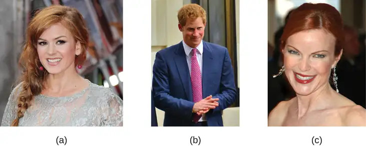
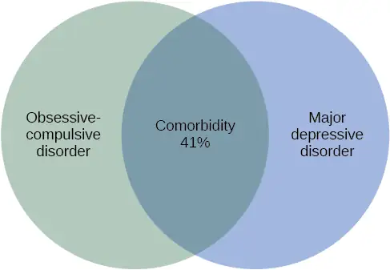
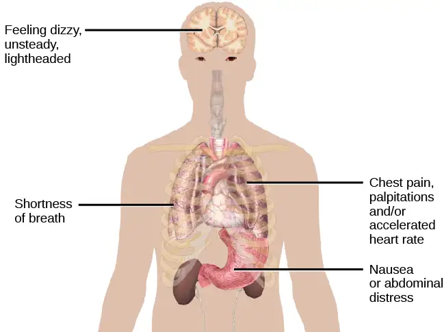
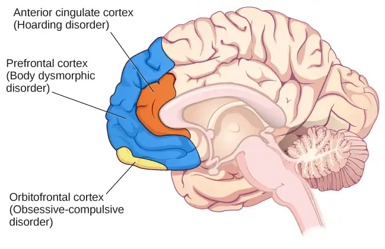
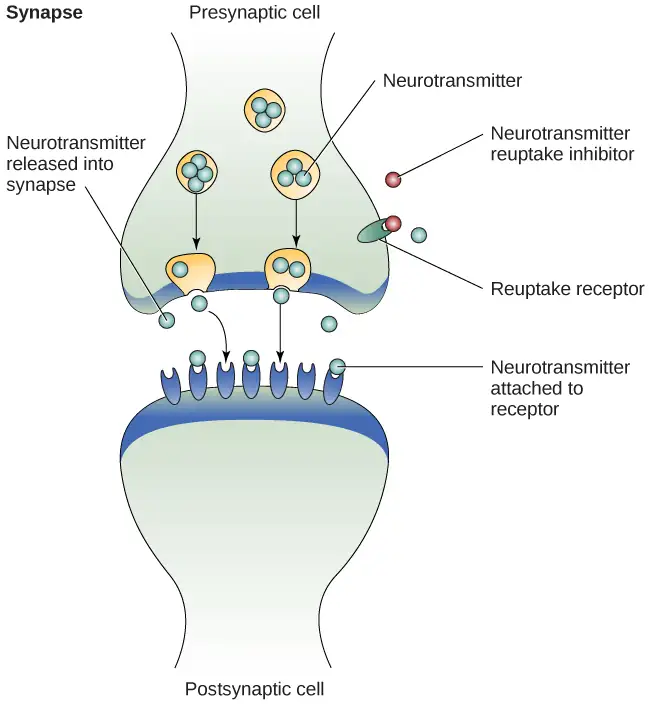

Chapter 15: Psychological Disorders¶
Introduction¶
On Monday, September 16, 2013, a gunman killed 12 people as the workday began at the Washington Navy Yard in Washington, DC. Aaron Alexis, 34, had a troubled history: he thought that he was being controlled by radio waves. He called the police to complain about voices in his head and being under surveillance by “shadowy forces” (Thomas, Levine, Date, & Cloherty, 2013). While Alexis’s actions cannot be excused, it is clear that he had some form of mental illness. According to research, “... mental disorders are neither necessary, nor sufficient causes of violence. The major determinants of violence continue to be socio-demographic and socio-economic factors such as being young, male, and of lower socio-economic status" (Stuart, 2003). If, however, Alexis had received the help he needed, this tragedy might have been averted.
15.1 What Are Psychological Disorders?¶
Learning Objectives
By the end of this section, you will be able to:
- Understand the problems inherent in defining the concept of psychological disorder
- Describe what is meant by harmful dysfunction
- Identify the formal criteria that thoughts, feelings, and behaviors must meet to be considered abnormal and, thus, symptomatic of a psychological disorder
According to the American Psychiatric Association, a psychological disorder, or mental disorder, is “a syndrome characterized by clinically significant disturbance in an individual's cognition, emotion regulation, or behavior that reflects a dysfunction in the psychological, biological, or developmental processes underlying mental functioning. Mental disorders are usually associated with significant distress in social, occupational, or other important activities” (2013). Psychopathology is the study of psychological disorders, including their symptoms, etiology (i.e., their causes), and treatment. The term psychopathology can also refer to the manifestation of a psychological disorder. Although consensus can be difficult, it is extremely important for mental health professionals to agree on what kinds of thoughts, feelings, and behaviors are truly abnormal in the sense that they genuinely indicate the presence of psychopathology. Certain patterns of behavior and inner experience can easily be labeled as abnormal and clearly signify some kind of psychological disturbance. The person who washes their hands 40 times per day and the person who claims to hear the voices of demons exhibit behaviors and inner experiences that most would regard as abnormal: beliefs and behaviors that suggest the existence of a psychological disorder. But, consider the nervousness a young man feels when talking to an attractive person or the loneliness and longing for home a first-year student experiences during her first semester of college—these feelings may not be regularly present, but they fall in the range of normal. So, what kinds of thoughts, feelings, and behaviors represent a true psychological disorder? Psychologists work to distinguish psychological disorders from inner experiences and behaviors that are merely situational, idiosyncratic, or unconventional.
Mental health issues are often incorrectly viewed as less important than physical illnesses, and sometimes people are blamed or otherwise stigmatized for their condition. People with mental illnesses did not choose or create their illness, and cannot simply manage it through positive thinking or other attitudinal changes. Diagnosis, treatment, and support are all necessary, and all must be considered with respect and sensitivity to the extremely challenging nature of mental illness. While not everyone experiencing difficulty has a psychological disorder, mental health is critical to our ability to function in our relationships, education, and work. It is important that people talk with qualified professionals if they are having persistent feelings or experiences in line with the descriptions below; the discussion may or may not lead to a diagnosis, but as with physical illnesses, one has a better chance at success if they raise the issues with doctors or other experts.
Definition of a Psychological Disorder¶
Perhaps the simplest approach to conceptualizing psychological disorders is to label behaviors, thoughts, and inner experiences that are atypical, distressful, dysfunctional, and sometimes even dangerous, as signs of a disorder. For example, if you ask a classmate for a date and you are rejected, you probably would feel a little dejected. Such feelings would be normal. If you felt extremely depressed—so much so that you lost interest in activities, had difficulty eating or sleeping, felt utterly worthless, and contemplated suicide—your feelings would be atypical, would deviate from the norm, and could signify the presence of a psychological disorder. Just because something is atypical, however, does not necessarily mean it is disordered.
For example, only about 4% of people in the United States have red hair, so red hair is considered an atypical characteristic (Figure 15.2), but it is not considered disordered, it’s just unusual. And it is less unusual in Scotland, where approximately 13% of the population has red hair (“DNA Project Aims,” 2012). As you will learn, some disorders, although not exactly typical, are far from atypical, and the rates at which they appear in the population are surprisingly high.

If we can agree that merely being atypical is an insufficient criterion for a having a psychological disorder, is it reasonable to consider behavior or inner experiences that differ from widely expected cultural values or expectations as disordered? Using this criterion, a person who walks around a subway platform wearing a heavy winter coat in July while screaming obscenities at strangers may be considered as exhibiting symptoms of a psychological disorder. Their actions and clothes violate socially accepted rules governing appropriate dress and behavior; these characteristics are atypical.
Cultural Expectations¶
Violating cultural expectations is not, in and of itself, a satisfactory means of identifying the presence of a psychological disorder. Since behavior varies from one culture to another, what may be expected and considered appropriate in one culture may not be viewed as such in other cultures. For example, returning a stranger’s smile is expected in the United States because a pervasive social norm dictates that we reciprocate friendly gestures. A person who refuses to acknowledge such gestures might be considered socially awkward—perhaps even disordered—for violating this expectation. However, such expectations are not universally shared. Cultural expectations in Japan involve showing reserve, restraint, and a concern for maintaining privacy around strangers. Japanese people are generally unresponsive to smiles from strangers (Patterson et al., 2007). Eye contact provides another example. In the United States and Europe, eye contact with others typically signifies honesty and attention. However, most Latin-American, Asian, and African cultures interpret direct eye contact as rude, confrontational, and aggressive (Pazain, 2010). Thus, someone who makes eye contact with you could be considered appropriate and respectful or brazen and offensive, depending on your culture (Figure 15.3).
Hallucinations (seeing or hearing things that are not physically present) in Western societies is a violation of cultural expectations, and a person who reports such inner experiences is readily labeled as psychologically disordered. In other cultures, visions that, for example, pertain to future events may be regarded as normal experiences that are positively valued (Bourguignon, 1970). Finally, it is important to recognize that cultural norms change over time: what might be considered typical in a society at one time may no longer be viewed this way later, similar to how fashion trends from one era may elicit quizzical looks decades later—imagine how a headband, legwarmers, and the big hair of the 1980s would go over on your campus today.
Dig Deeper: The Myth of Mental Illness
In the 1950s and 1960s, the concept of mental illness was widely criticized. One of the major criticisms focused on the notion that mental illness was a “myth that justifies psychiatric intervention in socially disapproved behavior” (Wakefield, 1992). Thomas Szasz (1960), a noted psychiatrist, was perhaps the biggest proponent of this view. Szasz argued that the notion of mental illness was invented by society (and the mental health establishment) to stigmatize and subjugate people whose behavior violates accepted social and legal norms. Indeed, Szasz suggested that what appear to be symptoms of mental illness are more appropriately characterized as “problems in living” (Szasz, 1960).
In his 1961 book, The Myth of Mental Illness: Foundations of a Theory of Personal Conduct, Szasz expressed his disdain for the concept of mental illness and for the field of psychiatry in general (Oliver, 2006). The basis for Szasz’s attack was his contention that detectable abnormalities in bodily structures and functions (e.g., infections and organ damage or dysfunction) represent the defining features of genuine illness or disease, and because symptoms of purported mental illness are not accompanied by such detectable abnormalities, so-called psychological disorders are not disorders at all. Szasz (1961/2010) proclaimed that “disease or illness can only affect the body; hence, there can be no mental illness” (p. 267).
Today, we recognize the extreme level of psychological suffering experienced by people with psychological disorders: the painful thoughts and feelings they experience, the disordered behavior they demonstrate, and the levels of distress and impairment they exhibit. This makes it very difficult to deny the reality of mental illness.
However controversial Szasz’s views and those of his supporters might have been, they have influenced the mental health community and society in several ways. First, lay people, politicians, and professionals now often refer to mental illness as mental health “problems,” implicitly acknowledging the “problems in living” perspective Szasz described (Buchanan-Barker & Barker, 2009). Also influential was Szasz’s view of sexual orientation. Szasz was perhaps the first psychiatrist to openly challenge the idea that same-sex attraction represented a form of mental illness or disease (Szasz, 1965), which helped pave the way for the social and civil rights that gay and lesbian people now have (Barker, 2010). His work also inspired legal changes that protect the rights of people in psychiatric institutions and allow such individuals a greater degree of influence and responsibility over their lives (Buchanan-Barker & Barker, 2009).
Harmful Dysfunction¶
If no criterion discussed so far is adequate by itself to define the presence of a psychological disorder, how can a disorder be conceptualized? Many efforts have been made to identify the specific dimensions of psychological disorders, yet none is entirely satisfactory. No universal definition of psychological disorder exists that can apply to all situations in which a disorder is thought to be present (Zachar & Kendler, 2007). However, one of the more influential conceptualizations was proposed by Wakefield (1992), who defined psychological disorder as a harmful dysfunction. Wakefield argued that natural internal mechanisms—that is, psychological processes honed by evolution, such as cognition, perception, and learning—have important functions, such as enabling us to experience the world the way others do and to engage in rational thought, problem solving, and communication. For example, learning allows us to associate a fear with a potential danger in such a way that the intensity of fear is roughly equal to the degree of actual danger. Dysfunction occurs when an internal mechanism breaks down and can no longer perform its normal function. But, the presence of a dysfunction by itself does not determine a disorder. The dysfunction must be harmful in that it leads to negative consequences for the individual or for others, as judged by the standards of the individual’s culture. The harm may include significant internal anguish (e.g., high levels of anxiety or depression) or problems in day-to-day living (e.g., in one’s social or work life).
To illustrate, Janet has an extreme fear of spiders. Janet’s fear might be considered a dysfunction in that it signals that the internal mechanism of learning is not working correctly (i.e., a faulty process prevents Janet from appropriately associating the magnitude of fear with the actual threat posed by spiders). Janet’s fear of spiders has a significant negative influence on daily life: she avoids all situations in which she suspects spiders to be present (e.g., the basement or a friend’s home), and she quit her job last month because she saw a spider in the restroom at work and is now unemployed. According to the harmful dysfunction model, Janet’s condition would signify a disorder because (a) there is a dysfunction in an internal mechanism, and (b) the dysfunction has resulted in harmful consequences. Similar to how the symptoms of physical illness reflect dysfunctions in biological processes, the symptoms of psychological disorders presumably reflect dysfunctions in mental processes. The internal mechanism component of this model is especially appealing because it implies that disorders may occur through a breakdown of biological functions that govern various psychological processes, thus supporting contemporary neurobiological models of psychological disorders (Fabrega, 2007).
The American Psychiatric Association (APA) Definition¶
Many of the features of the harmful dysfunction model are incorporated in a formal definition of psychological disorder developed by the American Psychiatric Association (APA). According to the APA (2013), a psychological disorder is a condition that is said to consist of the following:
- There are significant disturbances in thoughts, feelings, and behaviors. A person must experience inner states (e.g., thoughts and/or feelings) and exhibit behaviors that are clearly disturbed—that is, unusual, but in a negative, self-defeating way. Often, such disturbances are troubling to those around the individual who experiences them. For example, an individual who is uncontrollably preoccupied by thoughts of germs spends hours each day bathing, has inner experiences, and displays behaviors that most would consider atypical and negative (disturbed) and that would likely be troubling to family members.
- The disturbances reflect some kind of biological, psychological, or developmental dysfunction. Disturbed patterns of inner experiences and behaviors should reflect some flaw (dysfunction) in the internal biological, psychological, and developmental mechanisms that lead to normal, healthy psychological functioning. For example, the hallucinations observed in schizophrenia could be a sign of brain abnormalities.
- The disturbances lead to significant distress or disability in one’s life. A person’s inner experiences and behaviors are considered to reflect a psychological disorder if they cause the person considerable distress, or greatly impair their ability to function as a normal individual (often referred to as functional impairment, or occupational and social impairment). As an illustration, a person’s fear of social situations might be so distressing that it causes the person to avoid all social situations (e.g., preventing that person from being able to attend class or apply for a job).
- The disturbances do not reflect expected or culturally approved responses to certain events. Disturbances in thoughts, feelings, and behaviors must be socially unacceptable responses to certain events that often happen in life. For example, it is perfectly natural (and expected) that a person would experience great sadness and might wish to be left alone following the death of a close family member. Because such reactions are in some ways culturally expected, the individual would not be assumed to signify a mental disorder.
Some believe that there is no essential criterion or set of criteria that can definitively distinguish all cases of disorder from nondisorder (Lilienfeld & Marino, 1999). In truth, no single approach to defining a psychological disorder is adequate by itself, nor is there universal agreement on where the boundary is between disordered and not disordered. From time to time we all experience anxiety, unwanted thoughts, and moments of sadness; our behavior at other times may not make much sense to ourselves or to others. These inner experiences and behaviors can vary in their intensity, but are only considered disordered when they are highly disturbing to us and/or others, suggest a dysfunction in normal mental functioning, and are associated with significant distress or disability in social or occupational activities.
15.2 Diagnosing and Classifying Psychological Disorders¶
Learning Objectives
By the end of this section, you will be able to:
- Explain why classification systems are necessary in the study of psychopathology
- Describe the basic features of the Diagnostic and Statistical Manual of Mental Disorders, Fifth Edition (DSM-5)
- Discuss changes in the DSM over time, including criticisms of the current edition
- Identify which disorders are generally the most common
A first step in the study of psychological disorders is carefully and systematically discerning significant signs and symptoms. How do mental health professionals ascertain whether or not a person’s inner states and behaviors truly represent a psychological disorder? Arriving at a proper diagnosis—that is, appropriately identifying and labeling a set of defined symptoms—is absolutely crucial. This process enables professionals to use a common language with others in the field and aids in communication about the disorder with the patient, colleagues and the public. A proper diagnosis is an essential element to guide proper and successful treatment. For these reasons, classification systems that organize psychological disorders systematically are necessary.
The Diagnostic and Statistical Manual of Mental Disorders (DSM)¶
Although a number of classification systems have been developed over time, the one that is used by most mental health professionals in the United States is the Diagnostic and Statistical Manual of Mental Disorders (DSM-5), published by the American Psychiatric Association (2013). (Note that the American Psychiatric Association differs from the American Psychological Association; both are abbreviated APA.) The first edition of the DSM, published in 1952, classified psychological disorders according to a format developed by the U.S. Army during World War II (Clegg, 2012). In the years since, the DSM has undergone numerous revisions and editions. The most recent edition, published in 2013, is the DSM-5 (APA, 2013). The DSM-5 includes many categories of disorders (e.g., anxiety disorders, depressive disorders, and dissociative disorders). Each disorder is described in detail, including an overview of the disorder (diagnostic features), specific symptoms required for diagnosis (diagnostic criteria), prevalence information (what percent of the population is thought to be afflicted with the disorder), and risk factors associated with the disorder. Figure 15.4 shows lifetime prevalence rates—the percentage of people in a population who develop a disorder in their lifetime—of various psychological disorders among U.S. adults. These data were based on a national sample of 9,282 U.S. residents (National Comorbidity Survey, 2007).
![A bar graph has an x-axis labeled “DSM disorder” and a y-axis labeled “Lifetime prevalence rates.” For each disorder, a prevalence rate is given for total population, females, and males. The approximate data shown is: “major depressive disorder” 17% total, 20% females, 13% males; “alcohol abuse” 13% total, 7% females, 20% males; “specific phobia” 13% total, 16% females, 8% males; “social anxiety disorder” 12% total, 13% females, 11% males; “drug abuse” 8% total, 5% females, 12% males; “posttraumatic stress disorder” 7% total, 10% females, 3% males; “generalized anxiety disorder” 6% total, 7% females, 4% males; “panic disorder” 5% total, 6% females, 3% males; “obsessive-compulsive disorder” 3% total, 3% females, 2% males; “dysthymia” 3% total, 3% females, 2% males.](img/cnx-psych-15-02-disorders.webp)
The DSM-5 also provides information about comorbidity; the co-occurrence of two disorders. For example, the DSM-5 mentions that 41% of people with obsessive-compulsive disorder (OCD) also meet the diagnostic criteria for major depressive disorder (Figure 15.5). Problematic substance use is highly comorbid with other mental illnesses; 6 out of 10 people who have a substance use disorder also suffer from another form of mental illness (National Institute on Drug Abuse [NIDA], 2007).

Connect the Concepts: Comorbidity
As you’ve learned in the text, comorbidity refers to situations in which an individual suffers from more than one disorder, and often the symptoms of each can interact in negative ways. Co-occurrence and comorbidity of psychological disorders are quite common, and some of the most pervasive comorbidities involve substance use disorders that co-occur with psychological disorders. Indeed, some estimates suggest that around a quarter of people who suffer from the most severe cases of mental illness exhibit substance use disorder as well. Conversely, around 10 percent of individuals seeking treatment for substance use disorder have serious mental illnesses. Observations such as these have important implications for treatment options that are available. When people with a mental illness are also habitual drug users, their symptoms can be exacerbated and resistant to treatment. Furthermore, it is not always clear whether the symptoms are due to drug use, the mental illness, or a combination of the two. Therefore, it is recommended that behavior is observed in situations in which the individual has ceased using drugs and is no longer experiencing withdrawal from the drug in order to make the most accurate diagnosis (NIDA, 2018).
Obviously, substance use disorders are not the only possible comorbidities. In fact, some of the most common psychological disorders tend to co-occur. For instance, more than half of individuals who have a primary diagnosis of depressive disorder are estimated to exhibit some sort of anxiety disorder. The reverse is also true for those diagnosed with a primary diagnosis of an anxiety disorder. Further, anxiety disorders and major depression have a high rate of comorbidity with several other psychological disorders (Al-Asadi, Klein, & Meyer, 2015).
The DSM has changed considerably in the half-century since it was originally published. The first two editions of the DSM, for example, listed homosexuality as a disorder; however, in 1973, the APA voted to remove it from the manual (Silverstein, 2009). While the DSM-III did not list homosexuality as a disorder, it introduced a new diagnosis, ego-dystonic homosexuality, which emphasized same-sex arousal that the patient viewed as interfering with desired heterosexual relationships and causing distress for the individual. This new diagnosis was considered by many as a compromise to appease those who viewed homosexuality as a mental illness. Other professionals questioned how appropriate it was to have a separate diagnosis that described the content of an individual's distress. In 1986, the diagnosis was removed from the DSM-III-R (Herek, 2012). Additionally, beginning with the DSM-III in 1980, mental disorders have been described in much greater detail, and the number of diagnosable conditions has grown steadily, as has the size of the manual itself. DSM-I included 106 diagnoses and was 130 total pages, whereas DSM-III included more than 2 times as many diagnoses (265) and was nearly seven times its size (886 total pages) (Mayes & Horowitz, 2005). Although DSM-5 is longer than DSM-IV, the volume includes only 237 disorders, a decrease from the 297 disorders that were listed in DSM-IV. The latest edition, DSM-5, includes revisions in the organization and naming of categories and in the diagnostic criteria for various disorders (Regier, Kuhl, & Kupfer, 2012), while emphasizing careful consideration of the importance of gender and cultural difference in the expression of various symptoms (Fisher, 2010).
Some believe that establishing new diagnoses might overpathologize the human condition by turning common human problems into mental illnesses (The Associated Press, 2013). Indeed, the finding that nearly half of all Americans will meet the criteria for a DSM disorder at some point in their life (Kessler et al., 2005) likely fuels much of this skepticism. The DSM-5 is also criticized on the grounds that its diagnostic criteria have been loosened, thereby threatening to “turn our current diagnostic inflation into diagnostic hyperinflation” (Frances, 2012, para. 22). For example, DSM-IV specified that the symptoms of major depressive disorder must not be attributable to normal bereavement (loss of a loved one). The DSM-5, however, has removed this bereavement exclusion, essentially meaning that grief and sadness after a loved one’s death can constitute major depressive disorder.
The International Classification of Diseases¶
A second classification system, the International Classification of Diseases (ICD), is also widely recognized. Published by the World Health Organization (WHO), the ICD was developed in Europe shortly after World War II and, like the DSM, has been revised several times. The categories of psychological disorders in both the DSM and ICD are similar, as are the criteria for specific disorders; however, some differences exist. Although the ICD is used for clinical purposes, this tool is also used to examine the general health of populations and to monitor the prevalence of diseases and other health problems internationally (WHO, 2013). The ICD is in its 10th edition (ICD-10); however, efforts are now underway to develop a new edition (ICD-11) that, in conjunction with the changes in DSM-5, will help harmonize the two classification systems as much as possible (APA, 2013).
A study that compared the use of the two classification systems found that worldwide the ICD is more frequently used for clinical diagnosis, whereas the DSM is more valued for research (Mezzich, 2002). Most research findings concerning the etiology and treatment of psychological disorders are based on criteria set forth in the DSM (Oltmanns & Castonguay, 2013). The DSM also includes more explicit disorder criteria, along with an extensive and helpful explanatory text (Regier et al., 2012). The DSM is the classification system of choice among U.S. mental health professionals, and this chapter is based on the DSM paradigm.
The Compassionate View of Psychological Disorders¶
As these disorders are outlined, please bear two things in mind. First, remember that psychological disorders represent extremes of inner experience and behavior. If, while reading about these disorders, you feel that these descriptions begin to personally characterize you, do not worry—this moment of enlightenment probably means nothing more than you have had a range of experiences and emotions. Each of us experiences episodes of sadness, anxiety, and preoccupation with certain thoughts—times when we do not quite feel ourselves. These episodes should not be considered problematic unless the accompanying thoughts and behaviors become extreme and have a disruptive effect on one’s life. Second, understand that people with psychological disorders are far more than just embodiments of their disorders. We do not use terms such as schizophrenics, depressives, or phobics because they are labels that objectify people who have these conditions, thus promoting biased and disparaging assumptions about them. It is important to remember that a psychological disorder is not what a person is; it is something that a person has—through no fault of their own. As is the case with cancer or diabetes, those with psychological disorders suffer debilitating, often painful conditions that are not of their own choosing. These individuals deserve to be viewed and treated with compassion, understanding, and dignity.
15.3 Perspectives on Psychological Disorders¶
Learning Objectives
By the end of this section, you will be able to:
- Discuss supernatural perspectives on the origin of psychological disorders, in their historical context
- Describe modern biological and psychological perspectives on the origin of psychological disorders
- Identify which disorders generally show the highest degree of heritability
- Describe the diathesis-stress model and its importance to the study of psychopathology
Scientists, mental health professionals, and cultural healers may adopt different perspectives in attempting to understand or explain the underlying mechanisms that contribute to the development of a psychological disorder. The specific perspective used in explaining a psychological disorder is extremely important. Each perspective explains psychological disorders, their causes or etiology, and effective treatments from a different viewpoint. Different perspectives provide alternate ways for how to think about the nature of psychopathology.
Supernatural Perspectives of Psychological Disorders¶
For centuries, psychological disorders were viewed from a supernatural perspective: attributed to a force beyond scientific understanding. Those afflicted were thought to be practitioners of black magic or possessed by spirits (Figure 15.6) (Maher & Maher, 1985). For example, convents throughout Europe in the 16th and 17th centuries reported hundreds of nuns falling into a state of frenzy in which the afflicted foamed at the mouth, screamed and convulsed, sexually propositioned priests, and confessed to having carnal relations with devils or Christ. Although, today, these cases would suggest serious mental illness; at the time, these events were routinely explained as possession by devilish forces (Waller, 2009a). Similarly, grievous fits by young girls are believed to have precipitated the witch panic in New England late in the 17th century (Demos, 1983). Such beliefs in supernatural causes of mental illness are still held in some societies today; for example, beliefs that supernatural forces cause mental illness are common in some cultures in modern-day Nigeria (Aghukwa, 2012).
Dig Deeper: Dancing Mania
Between the 11th and 17th centuries, a curious epidemic swept across Western Europe. Groups of people would suddenly begin to dance with wild abandon. This compulsion to dance—referred to as dancing mania—sometimes gripped thousands of people at a time (Figure 15.7). Historical accounts indicate that those afflicted would sometimes dance with bruised and bloody feet for days or weeks, screaming of terrible visions and begging priests and monks to save their souls (Waller, 2009b). What caused dancing mania is not known, but several explanations have been proposed, including spider venom and ergot poisoning (“Dancing Mania,” 2011).
Historian John Waller (2009a, 2009b) has provided a comprehensive and convincing explanation of dancing mania that suggests the phenomenon was attributable to a combination of three factors: psychological distress, social contagion, and belief in supernatural forces. Waller argued that various disasters of the time (such as famine, plagues, and floods) produced high levels of psychological distress that could increase the likelihood of succumbing to an involuntary trance state. Waller indicated that anthropological studies and accounts of possession rituals show that people are more likely to enter a trance state if they expect it to happen, and that entranced individuals behave in a ritualistic manner, their thoughts and behavior shaped by the spiritual beliefs of their culture. Thus, during periods of extreme physical and mental distress, all it took were a few people—believing themselves to have been afflicted with a dancing curse—to slip into a spontaneous trance and then act out the part of one who is cursed by dancing for days on end.
Biological Perspectives of Psychological Disorders¶
The biological perspective views psychological disorders as linked to biological phenomena, such as genetic factors, chemical imbalances, and brain abnormalities; it has gained considerable attention and acceptance in recent decades (Wyatt & Midkiff, 2006). Evidence from many sources indicates that most psychological disorders have a genetic component; in fact, there is little dispute that some disorders are largely due to genetic factors. The graph in Figure 15.8 shows heritability estimates for schizophrenia.
![A bar graph has an x-axis labeled “Percent risk of developing schizophrenia” and a y-axis labeled “relationship to person with schizophrenia.” A series of relationships are correlated with the percentage risk, shown with brackets indicating the generic relationship. The general population has a 1% risk. First cousins have 2% risk; they share 12.5% of genes. The next relationships are uncles/aunts, nephews/nieces, grandchildren, and half-siblings; they share 25% of genes and the risk ranges from about 3–6%. The next relationships are parents, siblings, children, and fraternal twins; they share 50% of genes and the risks are about 6, 9, 13, and 17%, respectively. Identical twins share 100% of genes and have about a 48% risk.](img/cnx-psych-15-03-heritability.webp)
Findings such as these have led many of today’s researchers to search for specific genes and genetic mutations that contribute to mental disorders. Also, sophisticated neural imaging technology in recent decades has revealed how abnormalities in brain structure and function might be directly involved in many disorders, and advances in our understanding of neurotransmitters and hormones have yielded insights into their possible connections. The biological perspective is currently thriving in the study of psychological disorders.
The Diathesis-Stress Model of Psychological Disorders¶
Despite advances in understanding the biological basis of psychological disorders, the psychosocial perspective is still very important. This perspective emphasizes the importance of learning, stress, faulty and self-defeating thinking patterns, and environmental factors. Perhaps the best way to think about psychological disorders, then, is to view them as originating from a combination of biological and psychological processes. Many develop not from a single cause, but from a delicate fusion between partly biological and partly psychosocial factors.
The diathesis-stress model (Zuckerman, 1999) integrates biological and psychosocial factors to predict the likelihood of a disorder. This diathesis-stress model suggests that people with an underlying predisposition for a disorder (i.e., a diathesis) are more likely than others to develop a disorder when faced with adverse environmental or psychological events (i.e., stress), such as childhood maltreatment, negative life events, trauma, and so on. A diathesis is not always a biological vulnerability to an illness; some diatheses may be psychological (e.g., a tendency to think about life events in a pessimistic, self-defeating way).
The key assumption of the diathesis-stress model is that both factors, diathesis and stress, are necessary in the development of a disorder. Different models explore the relationship between the two factors: the level of stress needed to produce the disorder is inversely proportional to the level of diathesis.
15.4 Anxiety Disorders¶
Learning Objectives
By the end of this section, you will be able to:
- Distinguish normal anxiety from pathological anxiety
- List and describe the major anxiety disorders, including their main features and prevalence
- Describe basic psychological and biological factors that are suspected to be important in the etiology of anxiety disorder
Everybody experiences anxiety from time to time. Although anxiety is closely related to fear, the two states possess important differences. Fear involves an instantaneous reaction to an imminent threat, whereas anxiety involves apprehension, avoidance, and cautiousness regarding a potential threat, danger, or other negative event (Craske, 1999). While anxiety is unpleasant to most people, it is important to our health, safety, and well-being. Anxiety motivates us to take actions—such as preparing for exams, watching our health, showing up to work on time—that enable us to avert potential future problems. Anxiety also motivates us to avoid certain things—such as running up debts and engaging in illegal activities—that could lead to future trouble. Most individuals’ level and duration of anxiety approximates the magnitude of the potential threat they face. For example, suppose a student who came to the U.S. as a “Dreamer” (someone whose parents didn’t lawfully immigrate) is concerned about the possibility of being unable to continue in the university program or of losing access to academic financial aid, due to changes and litigation around the Deferred Action for Childhood Arrivals (DACA) program. This person likely would experience anxiety of greater intensity and duration than would a 21-year-old junior who entered college as a birthright citizen. Some people experience anxiety that is excessive, persistent, and greatly out of proportion to the actual threat; if one’s anxiety has a disruptive influence on one’s life, this is a strong indicator that the individual is experiencing an anxiety disorder.
Anxiety disorders are characterized by excessive and persistent fear and anxiety, and by related disturbances in behavior (APA, 2013). Although anxiety is universally experienced, anxiety disorders cause considerable distress. As a group, anxiety disorders are common: approximately 25%–30% of the U.S. population meets the criteria for at least one anxiety disorder during their lifetime (Kessler et al., 2005). Also, these disorders appear to be much more common in women than they are in men; within a 12-month period, around 23% of women and 14% of men will experience at least one anxiety disorder (National Comorbidity Survey, 2007). Anxiety disorders are the most frequently occurring class of mental disorders and are often comorbid with each other and with other mental disorders (Kessler, Ruscio, Shear, & Wittchen, 2009).
Specific Phobia¶
Phobia is a Greek word that means fear. A person diagnosed with a specific phobia (formerly known as simple phobia) experiences excessive, distressing, and persistent fear or anxiety about a specific object or situation (such as animals, enclosed spaces, elevators, or flying) (APA, 2013). Even though people realize their level of fear and anxiety in relation to the phobic stimulus is irrational, some people with a specific phobia may go to great lengths to avoid the phobic stimulus (the object or situation that triggers the fear and anxiety). Typically, the fear and anxiety a phobic stimulus elicits is disruptive to the person’s life. For example, a man with a phobia of flying might refuse to accept a job that requires frequent air travel, thus negatively affecting his career. Clinicians who have worked with people who have specific phobias have encountered many kinds of phobias, some of which are shown in Table 15.1.
Table 15.1
| Specific Phobias | |
|---|---|
| Phobia | Feared Object or Situation |
| Acrophobia | heights |
| Aerophobia | flying |
| Arachnophobia | spiders |
| Claustrophobia | enclosed spaces |
| Cynophobia | dogs |
| Hematophobia | blood |
| Ophidiophobia | snakes |
| Taphophobia | being buried alive |
| Trypanophobia | injections |
Specific phobias are common; in the United States, around 12.5% of the population will meet the criteria for a specific phobia at some point in their lifetime (Kessler et al., 2005). One type of phobia, agoraphobia, is listed in the DSM-5 as a separate anxiety disorder. Agoraphobia, which literally means “fear of the marketplace,” is characterized by intense fear, anxiety, and avoidance of situations in which it might be difficult to escape or receive help if one experiences symptoms of a panic attack (a state of extreme anxiety that we will discuss shortly). These situations include public transportation, open spaces (parking lots), enclosed spaces (stores), crowds, or being outside the home alone (APA, 2013). About 1.4% of Americans experience agoraphobia during their lifetime (Kessler et al., 2005).
Acquisition of Phobias Through Learning¶
Many theories suggest that phobias develop through learning. Rachman (1977) proposed that phobias can be acquired through three major learning pathways. The first pathway is through classical conditioning. As you may recall, classical conditioning is a form of learning in which a previously neutral stimulus is paired with an unconditioned stimulus (UCS) that reflexively elicits an unconditioned response (UCR), eliciting the same response through its association with the unconditioned stimulus. The response is called a conditioned response (CR). For example, a child who has been bitten by a dog may come to fear dogs because of a past association with pain. In this case, the dog bite is the UCS and the fear it elicits is the UCR. Because a dog was associated with the bite, any dog may come to serve as a conditioned stimulus, thereby eliciting fear; the fear the child experiences around dogs, then, becomes a CR.
The second pathway of phobia acquisition is through vicarious learning, such as modeling. For example, a child who observes their cousin react fearfully to spiders may later express the same fears, even though spiders have never presented any danger to them. This phenomenon has been observed in both humans and nonhuman primates (Olsson & Phelps, 2007). A study of laboratory-reared monkeys readily acquired a fear of snakes after observing wild-reared monkeys react fearfully to snakes (Mineka & Cook, 1993).
The third pathway is through verbal transmission or information. For example, a child whose parents, siblings, friends, and classmates constantly tell them how disgusting and dangerous snakes are may come to acquire a fear of snakes.
Interestingly, people are more likely to develop phobias of things that do not represent much actual danger to themselves, such as animals and heights, and are less likely to develop phobias toward things that present legitimate danger in contemporary society, such as motorcycles and weapons (Öhman & Mineka, 2001). Why might this be so? One theory suggests that the human brain is evolutionarily predisposed to more readily associate certain objects or situations with fear (Seligman, 1971). This theory argues that throughout our evolutionary history, our ancestors associated certain stimuli (e.g., snakes, spiders, heights, and thunder) with potential danger. As time progressed, the mind has become adapted to more readily develop fears of these things than of others. Experimental evidence has consistently demonstrated that conditioned fears develop more readily to fear-relevant stimuli (images of snakes and spiders) than to fear-irrelevant stimuli (images of flowers and berries) (Öhman & Mineka, 2001). Such prepared learning has also been shown to occur in monkeys. In one study (Cook & Mineka, 1989), monkeys watched videotapes of model monkeys reacting fearfully to either fear-relevant stimuli (toy snakes or a toy crocodile) or fear-irrelevant stimuli (flowers or a toy rabbit). The observer monkeys developed fears of the fear-relevant stimuli but not the fear-irrelevant stimuli.
Social Anxiety Disorder¶
Social anxiety disorder (formerly called social phobia) is characterized by extreme and persistent fear or anxiety and avoidance of social situations in which the person could potentially be evaluated negatively by others (APA, 2013). As with specific phobias, social anxiety disorder is common in the United States; a little over 12% of all Americans experience social anxiety disorder during their lifetime (Kessler et al., 2005).
The heart of the fear and anxiety in social anxiety disorder is the person’s concern that they may act in a humiliating or embarrassing way, such as appearing foolish, showing symptoms of anxiety (blushing), or doing or saying something that might lead to rejection (such as offending others). The kinds of social situations in which individuals with social anxiety disorder usually have problems include public speaking, having a conversation, meeting strangers, eating in restaurants, and, in some cases, using public restrooms. Although many people become anxious in social situations like public speaking, the fear, anxiety, and avoidance experienced in social anxiety disorder are highly distressing and lead to serious impairments in life. Adults with this disorder are more likely to experience lower educational attainment and lower earnings (Katzelnick et al., 2001), perform more poorly at work and are more likely to be unemployed (Moitra, Beard, Weisberg, & Keller, 2011), and report greater dissatisfaction with their family lives, friends, leisure activities, and income (Stein & Kean, 2000).
When people with social anxiety disorder are unable to avoid situations that provoke anxiety, they typically perform safety behaviors: mental or behavioral acts that reduce anxiety in social situations by reducing the chance of negative social outcomes. Safety behaviors include avoiding eye contact, rehearsing sentences before speaking, talking only briefly, and not talking about oneself (Alden & Bieling, 1998). Other examples of safety behaviors include the following (Marker, 2013):
- assuming roles in social situations that minimize interaction with others (e.g., taking pictures, setting up equipment, or helping prepare food)
- asking people many questions to keep the focus off of oneself
- selecting a position to avoid scrutiny or contact with others (sitting in the back of the room)
- wearing bland, neutral clothes to avoid drawing attention to oneself
- avoiding substances or activities that might cause anxiety symptoms (such as caffeine, warm clothing, and physical exercise)
Although these behaviors are intended to prevent the person with social anxiety disorder from doing something awkward that might draw criticism, these actions usually exacerbate the problem because they do not allow the individual to disconfirm their negative beliefs, often eliciting rejection and other negative reactions from others (Alden & Bieling, 1998).
People with social anxiety disorder may resort to self-medication, such as drinking alcohol, as a means to avert the anxiety symptoms they experience in social situations (Battista & Kocovski, 2010). The use of alcohol when faced with such situations may become negatively reinforcing: encouraging individuals with social anxiety disorder to turn to the substance whenever they experience anxiety symptoms. The tendency to use alcohol as a coping mechanism for social anxiety, however, can come with a hefty price tag: a number of large scale studies have reported a high rate of comorbidity between social anxiety disorder and alcohol use disorder (Morris, Stewart, & Ham, 2005).
As with specific phobias, it is highly probable that the fears inherent to social anxiety disorder can develop through conditioning experiences. For example, a child who is subjected to early unpleasant social experiences (e.g., bullying at school) may develop negative social images of herself that become activated later in anxiety-provoking situations (Hackmann, Clark, & McManus, 2000). Indeed, one study reported that 92% of a sample of adults with social anxiety disorder reported a history of severe teasing in childhood, compared to only 35% of a sample of adults with panic disorder (McCabe, Antony, Summerfeldt, Liss, & Swinson, 2003).
One of the most well-established risk factors for developing social anxiety disorder is behavioral inhibition (Clauss & Blackford, 2012). Behavioral inhibition is thought to be an inherited trait, and it is characterized by a consistent tendency to show fear and restraint when presented with unfamiliar people or situations (Kagan, Reznick, & Snidman, 1988). Behavioral inhibition is displayed very early in life; behaviorally inhibited toddlers and children respond with great caution and restraint in unfamiliar situations, and they are often timid, fearful, and shy around unfamiliar people (Fox, Henderson, Marshall, Nichols, & Ghera, 2005). A recent statistical review of studies demonstrated that behavioral inhibition was associated with more than a sevenfold increase in the risk of development of social anxiety disorder, demonstrating that behavioral inhibition is a major risk factor for the disorder (Clauss & Blackford, 2012).
Panic Disorder¶
Imagine that you are out one day with your friends and—suddenly and inexplicably—you begin sweating and trembling, your heart starts pounding, you have trouble breathing, and you start to feel dizzy and nauseous. This episode lasts for 10 minutes and is terrifying because you start to think that you are going to die. When you visit your doctor the following morning and describe what happened, she tells you that you have experienced a panic attack (Figure 15.9). If you experience another one of these episodes two weeks later and worry for a month or more that similar episodes will occur in the future, it is likely that you have developed panic disorder.

People with panic disorder experience recurrent (more than one) and unexpected panic attacks, along with at least one month of persistent concern about additional panic attacks, worry over the consequences of the attacks, or self-defeating changes in behavior related to the attacks (e.g., avoidance of exercise or unfamiliar situations) (APA, 2013). As is the case with other anxiety disorders, the panic attacks cannot result from the physiological effects of drugs and other substances, a medical condition, or another mental disorder. A panic attack is defined as a period of extreme fear or discomfort that develops abruptly and reaches a peak within 10 minutes. Its symptoms include accelerated heart rate, sweating, trembling, choking sensations, hot flashes or chills, dizziness or lightheadedness, fears of losing control or going crazy, and fears of dying (APA, 2013). Sometimes panic attacks are expected, occurring in response to specific environmental triggers (such as being in a tunnel); other times, these episodes are unexpected and emerge randomly (such as when relaxing). According to the DSM-5, the person must experience unexpected panic attacks to qualify for a diagnosis of panic disorder.
Experiencing a panic attack is often terrifying. Rather than recognizing the symptoms of a panic attack merely as signs of intense anxiety, individuals with panic disorder often misinterpret them as a sign that something is intensely wrong internally (thinking, for example, that the pounding heart represents an impending heart attack). Panic attacks can occasionally precipitate trips to the emergency room because several symptoms of panic attacks are, in fact, similar to those associated with heart problems (e.g., palpitations, racing pulse, and a pounding sensation in the chest) (Root, 2000). Unsurprisingly, those with panic disorder fear future attacks and may become preoccupied with modifying their behavior in an effort to avoid future panic attacks. For this reason, panic disorder is often characterized as fear of fear (Goldstein & Chambless, 1978).
Panic attacks themselves are not mental disorders. Indeed, around 23% of Americans experience isolated panic attacks in their lives without meeting the criteria for panic disorder (Kessler et al., 2006), indicating that panic attacks are fairly common. Panic disorder is, of course, much less common, afflicting 4.7% of Americans during their lifetime (Kessler et al., 2005). Many people with panic disorder develop agoraphobia, which is marked by fear and avoidance of situations in which escape might be difficult or help might not be available if one were to develop symptoms of a panic attack. People with panic disorder often experience a comorbid disorder, such as other anxiety disorders or major depressive disorder (APA, 2013).
Researchers are not entirely sure what causes panic disorder. Children are at a higher risk of developing panic disorder if their parents have the disorder (Biederman et al., 2001), and family and twins studies indicate that the heritability of panic disorder is around 43% (Hettema, Neale, & Kendler, 2001). The exact genes and gene functions involved in this disorder, however, are not well-understood (APA, 2013). Neurobiological theories of panic disorder suggest that a region of the brain called the locus coeruleus may play a role in this disorder. Located in the brainstem, the locus coeruleus is the brain’s major source of norepinephrine, a neurotransmitter that triggers the body’s fight-or-flight response. Activation of the locus coeruleus is associated with anxiety and fear, and research with nonhuman primates has shown that stimulating the locus coeruleus either electrically or through drugs produces panic-like symptoms (Charney et al., 1990). Such findings have led to the theory that panic disorder may be caused by abnormal norepinephrine activity in the locus coeruleus (Bremner, Krystal, Southwick, & Charney, 1996).
Conditioning theories of panic disorder propose that panic attacks are classical conditioning responses to subtle bodily sensations resembling those normally occurring when one is anxious or frightened (Bouton, Mineka, & Barlow, 2001). For example, consider a child who has asthma. An acute asthma attack produces sensations, such as shortness of breath, coughing, and chest tightness, that typically elicit fear and anxiety. Later, when the child experiences subtle symptoms that resemble the frightening symptoms of earlier asthma attacks (such as shortness of breath after climbing stairs), they may become anxious, fearful, and then experience a panic attack. In this situation, the subtle symptoms would represent a conditioned stimulus, and the panic attack would be a conditioned response. The finding that panic disorder is nearly three times as frequent among people with asthma as it is among people without asthma (Weiser, 2007) supports the possibility that panic disorder has the potential to develop through classical conditioning.
Cognitive factors may play an integral part in panic disorder. Generally, cognitive theories (Clark, 1996) argue that those with panic disorder are prone to interpret ordinary bodily sensations catastrophically, and these fearful interpretations set the stage for panic attacks. For example, a person might detect bodily changes that are routinely triggered by innocuous events such as getting up from a seated position (dizziness), exercising (increased heart rate, shortness of breath), or drinking a large cup of coffee (increased heart rate, trembling). The individual interprets these subtle bodily changes catastrophically (“Maybe I’m having a heart attack!”). Such interpretations create fear and anxiety, which trigger additional physical symptoms; subsequently, the person experiences a panic attack. Support of this contention rests with findings that people with more severe catastrophic thoughts about sensations have more frequent and severe panic attacks, and among those with panic disorder, reducing catastrophic cognitions about their sensations is as effective as medication in reducing panic attacks (Good & Hinton, 2009).
Generalized Anxiety Disorder¶
Alex was always worried about many things. He worried that his children would drown when they played at the beach. Each time he left the house, he worried that an electrical short circuit would start a fire in his home. He worried that his husband would lose his job at the prestigious law firm. He worried that his daughter’s minor staph infection could turn into a massive life-threatening condition. These and other worries constantly weighed heavily on Alex’s mind, so much so that they made it difficult for him to make decisions and often left him feeling tense, irritable, and worn out. One night, Alex’s husband was to drive their son home from a soccer game. However, his husband stayed after the game and talked with some of the other parents, resulting in him arriving home 45 minutes late. Alex had tried to call his cell phone three or four times, but he could not get through because the soccer field did not have a signal. Extremely worried, Alex eventually called the police, convinced that his husband and son had not arrived home because they had been in a terrible car accident.
Alex suffers from generalized anxiety disorder: a relatively continuous state of excessive, uncontrollable, and pointless worry and apprehension. People with generalized anxiety disorder often worry about routine, everyday things, even though their concerns are unjustified (Figure 15.10). For example, an individual may worry about her health and finances, the health of family members, the safety of her children, or minor matters (e.g., being late for an appointment) without having any legitimate reason for doing so (APA, 2013). A diagnosis of generalized anxiety disorder requires that the diffuse worrying and apprehension characteristic of this disorder—what Sigmund Freud referred to as free-floating anxiety—is not part of another disorder, occurs more days than not for at least six months, and is accompanied by any three of the following symptoms: restlessness, difficulty concentrating, being easily fatigued, muscle tension, irritability, and sleep difficulties.
About 5.7% of the U.S. population will develop symptoms of generalized anxiety disorder during their lifetime (Kessler et al., 2005), and females are 2 times as likely as males to experience the disorder (APA, 2013). Generalized anxiety disorder is highly comorbid with mood disorders and other anxiety disorders (Noyes, 2001), and it tends to be chronic. Also, generalized anxiety disorder appears to increase the risk for heart attacks and strokes, especially in people with preexisting heart conditions (Martens et al., 2010).
Although there have been few investigations aimed at determining the heritability of generalized anxiety disorder, a summary of available family and twin studies suggests that genetic factors play a modest role in the disorder (Hettema et al., 2001). Cognitive theories of generalized anxiety disorder suggest that worry represents a mental strategy to avoid more powerful negative emotions (Aikins & Craske, 2001), perhaps stemming from earlier unpleasant or traumatic experiences. Indeed, one longitudinal study found that childhood maltreatment was strongly related to the development of this disorder during adulthood (Moffitt et al., 2007); worrying might distract people from remembering painful childhood experiences.
15.5 Obsessive-Compulsive and Related Disorders¶
Learning Objectives
By the end of this section, you will be able to:
- Describe the main features and prevalence of obsessive-compulsive disorder, body dysmorphic disorder, and hoarding disorder
- Understand some of the factors in the development of obsessive-compulsive disorder
Obsessive-compulsive and related disorders are a group of overlapping disorders that generally involve intrusive, unpleasant thoughts and repetitive behaviors. Many of us experience unwanted thoughts from time to time (e.g., craving games when studying), and many of us engage in repetitive behaviors on occasion (e.g., pacing when nervous). However, obsessive-compulsive and related disorders elevate the unwanted thoughts and repetitive behaviors to a status so intense that these cognitions and activities disrupt daily life. Included in this category are obsessive-compulsive disorder (OCD), body dysmorphic disorder, and hoarding disorder.
Obsessive-Compulsive Disorder¶
People with obsessive-compulsive disorder (OCD) experience thoughts, mental images, fears, sensations, and/or urges that are intrusive and unwanted (obsessions) and/or the need to engage in repetitive behaviors or mental acts (compulsions). A person with this disorder might, for example, spend hours each day washing his hands or constantly checking and rechecking to make sure that a stove, faucet, or light has been turned off.
Obsessions are more than just unwanted thoughts that seem to randomly jump into our head from time to time, such as recalling an insensitive remark a coworker made recently, and they are more significant than day-to-day worries we might have, such as justifiable concerns about being laid off from a job. Rather, obsessions are characterized as persistent, unintentional, and unwanted thoughts that are highly intrusive, unpleasant, and distressing (APA, 2013). Common obsessions include concerns about germs and contamination, doubts (“Did I turn the water off?”), order and symmetry (“I need all the spoons in the tray to be arranged a certain way”), and others ranging from feelings of overwhelming responsibility, perfectionism, or moral obligations. Usually, the person knows that such thoughts and feelings are irrational and thus tries to suppress or ignore them, but has an extremely difficult time doing so. These obsessive symptoms sometimes overlap, such that someone might have both contamination and perfectionist obsessions (Abramowitz & Siqueland, 2013).
Compulsions are repetitive and ritualistic acts that are typically carried out primarily as a means to minimize the distress that obsessions trigger or to reduce the likelihood of a feared event (APA, 2013). Compulsions often include such behaviors as repeated and extensive hand washing, cleaning, checking (e.g., that a door is locked), and ordering (e.g., lining up all the pencils in a particular way), and they also include such mental acts as counting, praying, or reciting something to oneself (Figure 15.11). Compulsions characteristic of OCD are not performed out of pleasure, nor are they connected in a realistic way to the source of the distress or feared event. Not every ritualistic, repetitive, or intensive activity is a compulsion; for example, repetitive hand washing after being near a person with the flu is not likely a symptom of OCD. Also, many people use the word "obsession" or even refer to OCD in a casual manner, which can be insensitive to people experiencing it. Approximately 2.3% of the U.S. population will experience OCD in their lifetime (Ruscio, Stein, Chiu, & Kessler, 2010) and, if left untreated, OCD tends to be a chronic condition creating lifelong interpersonal and psychological problems (Norberg, Calamari, Cohen, & Riemann, 2008).
Body Dysmorphic Disorder¶
An individual with body dysmorphic disorder is preoccupied with a perceived flaw in physical appearance that is either nonexistent or barely noticeable to other people (APA, 2013). These perceived physical defects cause people to think they are unattractive, ugly, hideous, or deformed. These preoccupations can focus on any bodily area, but they typically involve the skin, face, or hair. The preoccupation with imagined physical flaws drives the person to engage in repetitive and ritualistic behavioral and mental acts, such as constantly looking in the mirror, trying to hide the offending body part, comparisons with others, and, in some extreme cases, cosmetic surgery (Phillips, 2005). An estimated 2.4% of the adults in the United States meet the criteria for body dysmorphic disorder, with slightly higher rates in women than in men (APA, 2013).
Hoarding Disorder¶
Although hoarding was traditionally considered to be a symptom of OCD, considerable evidence suggests that hoarding represents an entirely different disorder (Mataix-Cols et al., 2010). People with hoarding disorder cannot bear to part with personal possessions, regardless of how valueless or useless these possessions are. As a result, these individuals accumulate excessive amounts of usually worthless items that clutter their living areas (Figure 15.12). Often, the quantity of cluttered items is so excessive that the person is unable to use his kitchen, or sleep in his bed. People who suffer from this disorder have great difficulty parting with items because they believe the items might be of some later use, or because they form a sentimental attachment to the items (APA, 2013). Importantly, a diagnosis of hoarding disorder is made only if the hoarding is not caused by another medical condition and if the hoarding is not a symptom of another disorder (e.g., schizophrenia) (APA, 2013).
Causes of OCD¶
The results of family and twin studies suggest that OCD has a moderate genetic component. The disorder is five times more frequent in the first-degree relatives of people with OCD than in people without the disorder (Nestadt et al., 2000). Additionally, the concordance rate of OCD among identical twins is around 57%; however, the concordance rate for fraternal twins is 22% (Bolton, Rijsdijk, O’Connor, Perrin, & Eley, 2007). Studies have implicated about two dozen potential genes that may be involved in OCD; these genes regulate the function of three neurotransmitters: serotonin, dopamine, and glutamate (Pauls, 2010). Many of these studies included small sample sizes and have yet to be replicated. Thus, additional research needs to be done in this area.
A brain region that is believed to play a critical role in OCD is the orbitofrontal cortex (Kopell & Greenberg, 2008), an area of the frontal lobe involved in learning and decision-making (Rushworth, Noonan, Boorman, Walton, & Behrens, 2011) (Figure 15.13). In people with OCD, the orbitofrontal cortex becomes especially hyperactive when they are provoked with tasks in which, for example, they are asked to look at a photo of a toilet or of pictures hanging crookedly on a wall (Simon, Kaufmann, Müsch, Kischkel, & Kathmann, 2010). The orbitofrontal cortex is part of a series of brain regions that, collectively, is called the OCD circuit; this circuit consists of several interconnected regions that influence the perceived emotional value of stimuli and the selection of both behavioral and cognitive responses (Graybiel & Rauch, 2000). As with the orbitofrontal cortex, other regions of the OCD circuit show heightened activity during symptom provocation (Rotge et al., 2008), which suggests that abnormalities in these regions may produce the symptoms of OCD (Saxena, Bota, & Brody, 2001). Consistent with this explanation, people with OCD show a substantially higher degree of connectivity of the orbitofrontal cortex and other regions of the OCD circuit than do those without OCD (Beucke et al., 2013).

The findings discussed above were based on imaging studies, and they highlight the potential importance of brain dysfunction in OCD. However, one important limitation of these findings is the inability to explain differences in obsessions and compulsions. Another limitation is that the correlational relationship between neurological abnormalities and OCD symptoms cannot imply causation (Abramowitz & Siqueland, 2013).
Connect the Concepts: Conditioning and OCD
The symptoms of OCD have been theorized to be learned responses, acquired and sustained as the result of a combination of two forms of learning: classical conditioning and operant conditioning (Mowrer, 1960; Steinmetz, Tracy, & Green, 2001). Specifically, the acquisition of OCD may occur first as the result of classical conditioning, whereby a neutral stimulus becomes associated with an unconditioned stimulus that provokes anxiety or distress. When an individual has acquired this association, subsequent encounters with the neutral stimulus trigger anxiety, including obsessive thoughts; the anxiety and obsessive thoughts (which are now a conditioned response) may persist until they identify some strategy to relieve it. Relief may take the form of a ritualistic behavior or mental activity that, when enacted repeatedly, reduces the anxiety. Such efforts to relieve anxiety constitute an example of negative reinforcement (a form of operant conditioning). Recall from the chapter on learning that negative reinforcement involves the strengthening of behavior through its ability to remove something unpleasant or aversive. Hence, compulsive acts observed in OCD may be sustained because they are negatively reinforcing, in the sense that they reduce anxiety triggered by a conditioned stimulus.
Suppose an individual with OCD experiences obsessive thoughts about germs, contamination, and disease whenever they encounter a doorknob. What might have constituted a viable unconditioned stimulus? Also, what would constitute the conditioned stimulus, unconditioned response, and conditioned response? What kinds of compulsive behaviors might we expect, and how do they reinforce themselves? What is decreased? Additionally, and from the standpoint of learning theory, how might the symptoms of OCD be treated successfully?
15.6 Posttraumatic Stress Disorder¶
Learning Objectives
By the end of this section, you will be able to:
- Describe the nature and symptoms of posttraumatic stress disorder
- Identify the risk factors associated with this disorder
- Understand the role of learning and cognitive factors in its development
Extremely stressful or traumatic events, such as combat, natural disasters, and crimes, place the people who experience them at an increased risk for developing psychological disorders such as posttraumatic stress disorder (PTSD). Throughout much of the 20th century, this disorder was called shell shock and combat neurosis because its symptoms were observed in soldiers who had engaged in wartime combat. By the late 1970s it had become clear that women who had experienced sexual traumas (e.g., rape, domestic battery, and incest) often experienced the same set of symptoms as did soldiers (Herman, 1997). The term posttraumatic stress disorder was developed given that these symptoms could happen to anyone who experienced psychological trauma.
A Broader Definition of PTSD¶
PTSD was listed among the anxiety disorders in previous DSM editions. In DSM-5, it is now listed among a group called Trauma-and-Stressor-Related Disorders. For a person to be diagnosed with PTSD, they must be exposed to, witness, or experience the details of a traumatic experience (e.g., a first responder), one that involves “actual or threatened death, serious injury, or sexual violence” (APA, 2013, p. 271). These experiences can include such events as combat, threatened or actual physical attack, sexual assault, natural disasters, terrorist attacks, and automobile accidents. This criterion makes PTSD the only disorder listed in the DSM in which a cause (extreme trauma) is explicitly specified.
Symptoms of PTSD include intrusive and distressing memories of the event, flashbacks (states that can last from a few seconds to several days, during which the individual relives the event and behaves as if the event were occurring at that moment [APA, 2013]), avoidance of stimuli connected to the event, persistently negative emotional states (e.g., fear, anger, guilt, and shame), feelings of detachment from others, irritability, proneness toward outbursts, and an exaggerated startle response (jumpiness). For PTSD to be diagnosed, these symptoms must occur for at least one month.
Roughly 7% of adults in the United States, including 9.7% of women and 3.6% of men, experience PTSD in their lifetime (National Comorbidity Survey, 2007), with higher rates among people exposed to mass trauma and people whose jobs involve duty-related trauma exposure (e.g., police officers, firefighters, and emergency medical personnel) (APA, 2013). Nearly 21% of residents of areas affected by Hurricane Katrina suffered from PTSD one year following the hurricane (Kessler et al., 2008), and 12.6% of Manhattan residents were observed as having PTSD 2–3 years after the 9/11 terrorist attacks (DiGrande et al., 2008).
Risk Factors For PTSD¶
Of course, not everyone who experiences a traumatic event will go on to develop PTSD; several factors strongly predict the development of PTSD: trauma experience, greater trauma severity, lack of immediate social support, and more subsequent life stress (Brewin, Andrews, & Valentine, 2000). Traumatic events that involve harm by others (e.g., combat, rape, and sexual molestation) carry greater risk than do other traumas (e.g., natural disasters) (Kessler, Sonnega, Bromet, Hughes, & Nelson, 1995). Women are more likely to have been traumatized because of sexual trauma, childhood neglect, and childhood physical abuse. Men are more likely to have been traumatized by natural disaster, life-threatening accident, and physical violence, either witnessed or directed at them. Adolescent boys are more likely to experience accident, physical assault, and witness death/injury; adolescent girls are more likely to experience rape/sexual assault, intimate partner violence, or unexpected death or injury of a loved one. Assaultive violence and witnessing trauma to others is more prevalent among non-White people when compared to White people. African American males are more likely to be exposed to and victims of violence than males of other races (Kilpatrick, Badour, & Resnick, 2017). A 2012 study found that 27% of corrections officers reported experiencing symptoms of PTSD in the past 30 days. Rates were higher for males (31%) than females (22%) (Spinaris, Denhof, & Kellaway, 2012). A study conducted by Jaegers et al (2019) found that 53.4% of jail correctional officers screened positively for PTSD. PTSD is more prevalent in prison populations than in the general public, with prevalence estimates of 6% in male prisoners and 21% in female prisoners (Facer-Irwin et al, 2019). Factors that increase the risk of PTSD include female gender, low socioeconomic status, low intelligence, personal history of mental disorders, history of childhood adversity (abuse or other trauma during childhood), and family history of mental disorders (Brewin et al., 2000). Personality characteristics such as neuroticism and somatization (the tendency to experience physical symptoms when one encounters stress) have been shown to elevate the risk of PTSD (Bramsen, Dirkzwager, & van der Ploeg, 2000). People who experience childhood adversity and/or traumatic experiences during adulthood are at significantly higher risk of developing PTSD if they possess one or two short versions of a gene that regulates the neurotransmitter serotonin (Xie et al., 2009). This suggests a possible diathesis-stress interpretation of PTSD: its development is influenced by the interaction of psychosocial and biological factors.
Support For Sufferers of PTSD¶
Research has shown that social support following a traumatic event can reduce the likelihood of PTSD (Ozer, Best, Lipsey, & Weiss, 2003). Social support is often defined as the comfort, advice, and assistance received from relatives, friends, and neighbors. Social support can help individuals cope during difficult times by allowing them to discuss feelings and experiences and providing a sense of being loved and appreciated. A 14-year study of 1,377 people who had served in the Vietnam War found that those who perceived less social support when they came home were more likely to develop PTSD than were those who perceived greater support (Figure 15.14). In addition, those who became involved in the community were less likely to develop PTSD, and they were more likely to experience a remission of PTSD than were those who were less involved (Koenen, Stellman, Stellman, & Sommer, 2003).
Learning and the Development of PTSD¶
PTSD learning models suggest that some symptoms are developed and maintained through classical conditioning. The traumatic event may act as an unconditioned stimulus that elicits an unconditioned response characterized by extreme fear and anxiety. Cognitive, emotional, physiological, and environmental cues accompanying or related to the event are conditioned stimuli. These traumatic reminders evoke conditioned responses (extreme fear and anxiety) similar to those caused by the event itself (Nader, 2001). A person who witnessed or experienced a plane crash and who developed PTSD may display excessive hypervigilance and distress when planes fly overhead; this behavior constitutes a conditioned response to the traumatic reminder (conditioned stimulus of the sight and sound of an airplane). Differences in how conditionable individuals are help to explain differences in the development and maintenance of PTSD symptoms (Pittman, 1988). Conditioning studies demonstrate facilitated acquisition of conditioned responses and delayed extinction of conditioned responses in people with PTSD (Orr et al., 2000).
Cognitive factors are important in the development and maintenance of PTSD. One model suggests that two key processes are crucial: disturbances in memory for the event, and negative appraisals of the trauma and its aftermath (Ehlers & Clark, 2000). According to this theory, some people who experience traumas do not form coherent memories of the trauma; memories of the traumatic event are poorly encoded and, thus, are fragmented, disorganized, and lacking in detail. Therefore, these individuals are unable to remember the event in a way that gives it meaning and context. A rape victim who cannot coherently remember the event may remember only bits and pieces (e.g., the attacker repeating a word or insult); because the victim was unable to develop a fully integrated memory, the fragmentary memory tends to stand out. Although unable to retrieve a complete memory of the event, the victim may be haunted by intrusive fragments involuntarily triggered by stimuli associated with the event (e.g., memories of the attacker’s comments when encountering a person who resembles the attacker). This interpretation fits previously discussed material concerning PTSD and conditioning. The model also proposes that negative appraisals of the event (“I deserved to be raped because I’m stupid”) may lead to dysfunctional behavioral strategies (e.g., avoiding social activities where men are likely to be present) that maintain PTSD symptoms by preventing both a change in the nature of the memory and a change in the problematic appraisals.
15.7 Mood and Related Disorders¶
Learning Objectives
By the end of this section, you will be able to:
- Distinguish normal states of sadness and euphoria from states of depression and mania
- Describe the symptoms of major depressive disorder and bipolar disorder
- Understand the differences between major depressive disorder and persistent depressive disorder, and identify two subtypes of depression
- Define the criteria for a manic episode
- Understand genetic, biological, and psychological explanations of major depressive disorder
- Discuss the relationship between mood disorders and suicidal ideation, as well as factors associated with suicide
Blake cries all day and, feeling that he is worthless and his life is hopeless, he cannot get out of bed. Crystal stays up all night, talks very rapidly, and went on a shopping spree in which she spent $3,000 on furniture, although she cannot afford it. Maria recently had a baby, and she feels overwhelmed, teary, anxious, and panicked, and believes she is a terrible mother—practically every day since the baby was born. All these individuals demonstrate symptoms of a potential mood disorder.
Mood disorders (Figure 15.15) are characterized by severe disturbances in mood and emotions—most often depression, but also mania and elation (Rothschild, 1999). All of us experience fluctuations in our moods and emotional states, and often these fluctuations are caused by events in our lives. We become elated if our favorite team wins the World Series and dejected if a romantic relationship ends or if we lose our job. At times, we feel fantastic or miserable for no clear reason. People with mood disorders also experience mood fluctuations, but their fluctuations are extreme, distort their outlook on life, and impair their ability to function.
The DSM-5 lists two general categories of mood disorders. Depressive disorders are a group of disorders in which depression is the main feature. Depression is a vague term that, in everyday language, refers to an intense and persistent sadness. Depression is a heterogeneous mood state—it consists of a broad spectrum of symptoms that range in severity. Depressed people feel sad, discouraged, and hopeless. These individuals lose interest in activities once enjoyed, often experience a decrease in drives such as hunger and sex, and frequently doubt personal worth. Depressive disorders vary by degree, but this chapter highlights the most well-known: major depressive disorder (sometimes called unipolar depression).
Bipolar and related disorders are a group of disorders in which mania is the defining feature. Mania is a state of extreme elation and agitation. When people experience mania, they may become extremely talkative, behave recklessly, or attempt to take on many tasks simultaneously. The most recognized of these disorders is bipolar disorder.
Major Depressive Disorder¶
According to the DSM-5, the defining symptoms of major depressive disorder include “depressed mood most of the day, nearly every day” (feeling sad, empty, hopeless, or appearing tearful to others), and loss of interest and pleasure in usual activities (APA, 2013). In addition to feeling overwhelmingly sad most of each day, people with depression will no longer show interest or enjoyment in activities that previously were gratifying, such as hobbies, sports, sex, social events, time spent with family, and so on. Friends and family members may notice that the person has completely abandoned previously enjoyed hobbies; for example, an avid tennis player who develops major depressive disorder no longer plays tennis (Rothschild, 1999).
To receive a diagnosis of major depressive disorder, a person must, for at least two weeks, have a depressed mood and/or a loss of interest or pleasure in most activities. In addition, the person will show signs and symptoms of several of the following: significant change in weight (loss or gain), insomnia or hypersomnia, psychomotor agitation (such as fidgeting, inability to sit, pacing, hand-wringing) or psychomotor retardation (such as talking and moving slowly), fatigue, feelings of worthlessness or guilt, difficulty concentrating or indecisiveness, and suicidal ideation.
Major depressive disorder is considered episodic: its symptoms are typically present at their full magnitude for a certain period of time and then gradually abate. Approximately 50%–60% of people who experience an episode of major depressive disorder will have a second episode at some point in the future; those who have had two episodes have a 70% chance of having a third episode, and those who have had three episodes have a 90% chance of having a fourth episode (Rothschild, 1999). Although the episodes can last for months, a majority of people diagnosed with this condition (around 70%) recover within a year. However, a substantial number do not recover; around 12% show serious signs of impairment associated with major depressive disorder after 5 years (Boland & Keller, 2009). In the long term, many who do recover will still show minor symptoms that fluctuate in their severity (Judd, 2012).
Results of Major Depressive Disorder¶
Major depressive disorder is a serious and incapacitating condition that can have a devastating effect on the quality of one’s life. The person suffering from this disorder lives a profoundly miserable existence that often results in unavailability for work or education, abandonment of promising careers, and lost wages; occasionally, the condition requires hospitalization. The majority of those with major depressive disorder report having faced some kind of discrimination, and many report that having received such treatment has stopped them from initiating close relationships, applying for jobs for which they are qualified, and applying for education or training (Lasalvia et al., 2013). Major depressive disorder also takes a toll on health. Depression is a risk factor for the development of heart disease in healthy patients, as well as adverse cardiovascular outcomes in patients with preexisting heart disease (Whooley, 2006).
Risk Factors for Major Depressive Disorder¶
Major depressive disorder is often referred to as the common cold of psychiatric disorders. Around 6.6% of the U.S. population experiences major depressive disorder each year; 16.9% will experience the disorder during their lifetime (Kessler & Wang, 2009). It is more common among women than among men, affecting approximately 20% of women and 13% of men at some point in their life (National Comorbidity Survey, 2007). The greater risk among women is not accounted for by a tendency to report symptoms or to seek help more readily, suggesting that gender differences in the rates of major depressive disorder may reflect biological and gender-related environmental experiences (Kessler, 2003).
Lifetime rates of major depressive disorder tend to be highest in North and South America, Europe, and Australia; they are considerably lower in Asian countries (Hasin, Fenton, & Weissman, 2011). The rates of major depressive disorder are higher among younger age cohorts than among older cohorts, perhaps because people in younger age cohorts are more willing to admit depression (Kessler & Wang, 2009).
A number of risk factors are associated with major depressive disorder: unemployment (including homemakers); earning less than $20,000 per year; living in urban areas; or being separated, divorced, or widowed (Hasin et al., 2011). Comorbid disorders include anxiety disorders and substance abuse disorders (Kessler & Wang, 2009).
Subtypes of Depression¶
The DSM-5 lists several different subtypes of depression. These subtypes—what the DSM-5 refers to as specifiers—are not specific disorders; rather, they are labels used to indicate specific patterns of symptoms or to specify certain periods of time in which the symptoms may be present. One subtype, seasonal pattern, applies to situations in which a person experiences the symptoms of major depressive disorder only during a particular time of year (e.g., fall or winter). In everyday language, people often refer to this subtype as the winter blues.
Another subtype, peripartum onset (commonly referred to as postpartum depression), applies to childbearers who experience major depression during pregnancy or in the four weeks following the birth of their child (APA, 2013). These people often feel very anxious and may even have panic attacks. They may feel guilty, agitated, and be weepy. They may not want to hold or care for their newborn, even in cases in which the pregnancy was desired and intended. In extreme cases, one may have feelings of wanting to harm the child or oneself. In a horrific illustration, a woman named Andrea Yates, who suffered from extreme peripartum-onset depression (as well as other mental illnesses), drowned her five children in a bathtub (Roche, 2002). Most people with peripartum-onset depression do not physically harm their children, but most do have difficulty being adequate caregivers (Fields, 2010). A surprisingly high number of people experience symptoms of peripartum-onset depression. A study of 10,000 women who had recently given birth found that 14% screened positive for peripartum-onset depression, and that nearly 20% reported having thoughts of wanting to harm themselves (Wisner et al., 2013).
People with persistent depressive disorder (previously known as dysthymia) experience depressed moods most of the day nearly every day for at least two years, as well as at least two of the other symptoms of major depressive disorder. People with persistent depressive disorder are chronically sad and melancholy, but do not meet all the criteria for major depression. However, episodes of full-blown major depressive disorder can occur during persistent depressive disorder (APA, 2013).
Bipolar Disorder¶
A person with bipolar disorder (commonly known as manic depression) often experiences mood states that vacillate between depression and mania; that is, the person’s mood is said to alternate from one emotional extreme to the other (in contrast to unipolar, which indicates a persistently sad mood).
To be diagnosed with bipolar disorder, a person must have experienced a manic episode at least once in their life; although major depressive episodes are common in bipolar disorder, they are not required for a diagnosis (APA, 2013). According to the DSM-5, a manic episode is characterized as a “distinct period of abnormally and persistently elevated, expansive, or irritable mood and abnormally and persistently increased activity or energy lasting at least one week,” that lasts most of the time each day (APA, 2013, p. 124). During a manic episode, some experience a mood that is almost euphoric and become excessively talkative, sometimes spontaneously starting conversations with strangers; others become excessively irritable and complain or make hostile comments. The person may talk loudly and rapidly, exhibiting flight of ideas, abruptly switching from one topic to another. These individuals are easily distracted, which can make a conversation very difficult. They may exhibit grandiosity, in which they experience inflated but unjustified self-esteem and self-confidence. For example, they might quit a job in order to “strike it rich” in the stock market, despite lacking the knowledge, experience, and capital for such an endeavor. They may take on several tasks at the same time (e.g., several time-consuming projects at work) and yet show little, if any, need for sleep; some may go for days without sleep. Patients may also recklessly engage in pleasurable activities that could have harmful consequences, including spending sprees, reckless driving, making foolish investments, excessive gambling, or engaging in sexual encounters with strangers (APA, 2013).
During a manic episode, individuals usually feel as though they are not ill and do not need treatment. However, the reckless behaviors that often accompany these episodes—which can be antisocial, illegal, or physically threatening to others—may require involuntary hospitalization (APA, 2013). Some patients with bipolar disorder will experience a rapid-cycling subtype, which is characterized by at least four manic episodes (or some combination of at least four manic and major depressive episodes) within one year.
Link to Learning
In the 1997 independent film Sweetheart, actress Janeane Garofalo plays the part of Jasmine, a young woman with bipolar disorder. Watch this firsthand account from a person living with bipolar disorder to learn more.
Risk Factors for Bipolar Disorder¶
Bipolar disorder is considerably less frequent than major depressive disorder. In the United States, 1 out of every 167 people meets the criteria for bipolar disorder each year, and 1 out of 100 meet the criteria within their lifetime (Merikangas et al., 2011). The rates are higher in men than in women, and about half of those with this disorder report onset before the age of 25 (Merikangas et al., 2011). Around 90% of those with bipolar disorder have a comorbid disorder, most often an anxiety disorder or a substance abuse problem. Unfortunately, close to half of the people suffering from bipolar disorder do not receive treatment (Merikangas & Tohen, 2011). Suicide rates are extremely high among those with bipolar disorder: around 36% of individuals with this disorder attempt suicide at least once in their lifetime (Novick, Swartz, & Frank, 2010), and between 15%–19% die by suicide (Newman, 2004).
The Biological Basis of Mood and Bipolar Disorders¶
Mood disorders have been shown to have a strong genetic and biological basis. Relatives of those with major depressive disorder have double the risk of developing major depressive disorder, whereas relatives of patients with bipolar disorder have over nine times the risk (Merikangas et al., 2011). The rate of concordance for major depressive disorder is higher among identical twins than fraternal twins (50% vs. 38%, respectively), as is that of bipolar disorder (67% vs. 16%, respectively), suggesting that genetic factors play a stronger role in bipolar disorder than in major depressive disorder (Merikangas et al. 2011).
People with mood disorders often have imbalances in certain neurotransmitters, particularly norepinephrine and serotonin (Thase, 2009). These neurotransmitters are important regulators of the bodily functions that are disrupted in mood disorders, including appetite, sex drive, sleep, arousal, and mood. Medications that are used to treat major depressive disorder typically boost serotonin and norepinephrine activity, whereas lithium—used in the treatment of bipolar disorder—blocks norepinephrine activity at the synapses (Figure 15.16).

Depression is linked to abnormal activity in several regions of the brain (Fitzgerald, Laird, Maller, & Daskalakis, 2008) including those important in assessing the emotional significance of stimuli and experiencing emotions (amygdala), and in regulating and controlling emotions (like the prefrontal cortex, or PFC) (LeMoult, Castonguay, Joormann, & McAleavey, 2013). People with depression show elevated amygdala activity (Drevets, Bogers, & Raichle, 2002), especially when presented with negative emotional stimuli, such as photos of sad faces (Figure 15.17) (Surguladze et al., 2005). Interestingly, heightened amygdala activation to negative emotional stimuli among depressed persons occurs even when stimuli are presented outside of conscious awareness (Victor, Furey, Fromm, Öhman, & Drevets, 2010), and it persists even after the negative emotional stimuli are no longer present (Siegle, Thompson, Carter, Steinhauer, & Thase, 2007). Additionally, depressed individuals exhibit less activation in the prefrontal, particularly on the left side (Davidson, Pizzagalli, & Nitschke, 2009). Because the PFC can dampen amygdala activation, thereby enabling one to suppress negative emotions (Phan et al., 2005), decreased activation in certain regions of the PFC may inhibit its ability to override negative emotions that might then lead to more negative mood states (Davidson et al., 2009). These findings suggest that people with depression are more prone to react to emotionally negative stimuli, yet have greater difficulty controlling these reactions.
Since the 1950s, researchers have noted that depressed individuals have abnormal levels of cortisol, a stress hormone released into the blood by the neuroendocrine system during times of stress (Mackin & Young, 2004). When cortisol is released, the body initiates a fight-or-flight response in reaction to a threat or danger. Many people with depression show elevated cortisol levels (Holsboer & Ising, 2010), especially those reporting a history of early life trauma such as the loss of a parent or abuse during childhood (Baes, Tofoli, Martins, & Juruena, 2012). Such findings raise the question of whether high cortisol levels are a cause or a consequence of depression. High levels of cortisol are a risk factor for future depression (Halligan, Herbert, Goodyer, & Murray, 2007), and cortisol activates activity in the amygdala while deactivating activity in the PFC (McEwen, 2005)—both brain disturbances are connected to depression. Thus, high cortisol levels may have a causal effect on depression, as well as on its brain function abnormalities (van Praag, 2005). Also, because stress results in increased cortisol release (Michaud, Matheson, Kelly, Anisman, 2008), it is equally reasonable to assume that stress may precipitate depression.
A Diathesis-Stress Model and Major Depressive Disorders¶
Indeed, it has long been believed that stressful life events can trigger depression, and research has consistently supported this conclusion (Mazure, 1998). Stressful life events include significant losses, such as death of a loved one, divorce or separation, and serious health and money problems; life events such as these often precede the onset of depressive episodes (Brown & Harris, 1989). In particular, exit events—instances in which an important person departs (e.g., a death, divorce or separation, or a family member leaving home)—often occur prior to an episode (Paykel, 2003). Exit events are especially likely to trigger depression if these happenings occur in a way that humiliates or devalues the individual. For example, people who experience the breakup of a relationship initiated by the other person develop major depressive disorder at a rate more than 2 times that of people who experience the death of a loved one (Kendler, Hettema, Butera, Gardner, & Prescott, 2003).
Likewise, individuals who are exposed to traumatic stress during childhood—such as separation from a parent, family turmoil, and maltreatment (physical or sexual abuse)—are at a heightened risk of developing depression at any point in their lives (Kessler, 1997). A recent review of 16 studies involving over 23,000 subjects concluded that those who experience childhood maltreatment are more than 2 times as likely to develop recurring and persistent depression (Nanni, Uher, & Danese, 2012).
Of course, not everyone who experiences stressful life events or childhood adversities succumbs to depression—indeed, most do not. Clearly, a diathesis-stress interpretation of major depressive disorder, in which certain predispositions or vulnerability factors influence one’s reaction to stress, would seem logical. If so, what might such predispositions be? A study by Caspi and others (2003) suggests that an alteration in a specific gene that regulates serotonin (the 5-HTTLPR gene) might be one culprit. These investigators found that people who experienced several stressful life events were significantly more likely to experience episodes of major depression if they carried one or two short versions of this gene than if they carried two long versions. Those who carried one or two short versions of the 5-HTTLPR gene were unlikely to experience an episode, however, if they had experienced few or no stressful life events. Numerous studies have replicated these findings, including studies of people who experienced maltreatment during childhood (Goodman & Brand, 2009). In a recent investigation conducted in the United Kingdom (Brown & Harris, 2013), researchers found that childhood maltreatment before age 9 elevated the risk of chronic adult depression (a depression episode lasting for at least 12 months) among those individuals having one (LS) or two (SS) short versions of the 5-HTTLPR gene (Figure 15.18). Childhood maltreatment did not increase the risk for chronic depression for those who have two long (LL) versions of this gene. Thus, genetic vulnerability may be one mechanism through which stress potentially leads to depression.
![A bar graph has an x-axis labeled “version of 5-HTTLPR gene” and a y-axis labeled “percent of chronic depression in adulthood.” Data compares the type of gene combination and whether childhood maltreatment occurred prior to age 9. People with no childhood maltreatment prior to age 9 have a percentage of chronic depression of approximately 23% with the long-long gene, 19% with the long-short gene, and 20% with the short-short gene. People with childhood maltreatment prior to age 9 have a percentage of chronic depression of approximately 22% with the long-long gene, 53% with the long-short gene, and 71% with the short-short gene.](img/cnx-psych-15-07-gxe-interaction.webp)
Cognitive Theories of Depression¶
Cognitive theories of depression take the view that depression is triggered by negative thoughts, interpretations, self-evaluations, and expectations (Joormann, 2009). These diathesis-stress models propose that depression is triggered by a “cognitive vulnerability” (negative and maladaptive thinking) and by precipitating stressful life events (Gotlib & Joormann, 2010). Perhaps the most well-known cognitive theory of depression was developed in the 1960s by psychiatrist Aaron Beck, based on clinical observations and supported by research (Beck, 2008). Beck theorized that depression-prone people possess depressive schemas, or mental predispositions to think about most things in a negative way (Beck, 1976). Depressive schemas contain themes of loss, failure, rejection, worthlessness, and inadequacy, and may develop early in childhood in response to adverse experiences, then remain dormant until they are activated by stressful or negative life events. Depressive schemas prompt dysfunctional and pessimistic thoughts about the self, the world, and the future. Beck believed that this dysfunctional style of thinking is maintained by cognitive biases, or errors in how we process information about ourselves, which lead us to focus on negative aspects of experiences, interpret things negatively, and block positive memories (Beck, 2008). A person whose depressive schema consists of a theme of rejection might be overly attentive to social cues of rejection (more likely to notice another’s frown), and they might interpret this cue as a sign of rejection and automatically remember past incidents of rejection. Longitudinal studies have supported Beck’s theory, in showing that a preexisting tendency to engage in this negative, self-defeating style of thinking—when combined with life stress—over time predicts the onset of depression (Dozois & Beck, 2008). Cognitive therapies for depression, aimed at changing a depressed person’s negative thinking, were developed as an expansion of this theory (Beck, 1976).
Another cognitive theory of depression, hopelessness theory, postulates that a particular style of negative thinking leads to a sense of hopelessness, which then leads to depression (Abramson, Metalsky, & Alloy, 1989). According to this theory, hopelessness is an expectation that unpleasant outcomes will occur or that desired outcomes will not occur, and there is nothing one can do to prevent such outcomes. A key assumption of this theory is that hopelessness stems from a tendency to perceive negative life events as having stable (“It’s never going to change”) and global (“It’s going to affect my whole life”) causes, in contrast to unstable (“It’s fixable”) and specific (“It applies only to this particular situation”) causes, especially if these negative life events occur in important life realms, such as relationships, academic achievement, and the like. Suppose a student who wishes to go to law school does poorly on an admissions test. If the student infers negative life events as having stable and global causes, they may believe that their poor performance has a stable and global cause (“I lack intelligence, and it’s going to prevent me from ever finding a meaningful career”), as opposed to an unstable and specific cause (“I was sick the day of the exam, so my low score was a fluke”). Hopelessness theory predicts that people who exhibit this cognitive style in response to undesirable life events will view such events as having negative implications for their future and self-worth, thereby increasing the likelihood of hopelessness—the primary cause of depression (Abramson et al., 1989). One study testing hopelessness theory measured the tendency to make negative inferences for bad life effects in participants who were experiencing uncontrollable stressors. Over the ensuing six months, those with scores reflecting high cognitive vulnerability were 7 times more likely to develop depression compared to those with lower scores (Kleim, Gonzalo, & Ehlers, 2011).
A third cognitive theory of depression focuses on how people’s thoughts about their distressed moods—depressed symptoms in particular—can increase the risk and duration of depression. This theory, which focuses on rumination in the development of depression, was first described in the late 1980s to explain the higher rates of depression in women than in men (Nolen-Hoeksema, 1987). Rumination is the repetitive and passive focus on the fact that one is depressed and dwelling on depressed symptoms, rather that distracting oneself from the symptoms or attempting to address them in an active, problem-solving manner (Nolen-Hoeksema, 1991). When people ruminate, they have thoughts such as “Why am I so unmotivated? I just can’t get going. I’m never going to get my work done feeling this way” (Nolen-Hoeksema & Hilt, 2009, p. 393). Women are more likely than men to ruminate when they are sad or depressed (Butler & Nolen-Hoeksema, 1994), and the tendency to ruminate is associated with increases in depression symptoms (Nolen-Hoeksema, Larson, & Grayson, 1999), heightened risk of major depressive episodes (Abela & Hankin, 2011), and chronicity of such episodes (Robinson & Alloy, 2003)
Suicide¶
For some people with mood disorders, the extreme emotional pain they experience becomes unendurable. Overwhelmed by hopelessness, devastated by incapacitating feelings of worthlessness, and burdened with the inability to adequately cope with such feelings, they may consider suicide to be a reasonable way out. Suicide, defined by the CDC as “death caused by self-directed injurious behavior with any intent to die as the result of the behavior” (CDC, 2013a), in a sense represents an outcome of several things going wrong all at the same time (Crosby, Ortega, & Melanson, 2011). Not only must the person be biologically or psychologically vulnerable, but they must also have the means to perform the suicidal act, and they must lack the necessary protective factors (e.g., social support from friends and family, religion, coping skills, and problem-solving skills) that provide comfort and enable one to cope during times of crisis or great psychological pain (Berman, 2009).
Suicide is not listed as a disorder in the DSM-5; however, people with a mental disorder—especially a mood disorder—have the greatest risk for suicide. Around 90% of those who die by suicide have a diagnosis of at least one mental disorder, with mood disorders being the most frequent (Fleischman, Bertolote, Belfer, & Beautrais, 2005). In fact, the association between major depressive disorder and suicide is so strong that one of the criteria for the disorder is thoughts of suicide, as discussed above (APA, 2013).
Suicide rates can be difficult to interpret because some deaths that appear to be accidental may in fact be acts of suicide (e.g., automobile crash). Nevertheless, investigations into U.S. suicide rates have uncovered these facts:
- Suicide was the 10th leading cause of death for all ages in 2010 (Centers for Disease Control and Prevention [CDC], 2012).
- There were 38,364 suicides in 2010 in the United States—an average of 105 each day (CDC, 2012).
- Suicide among males is 4 times higher than among females and accounts for 79% of all suicides; firearms are the most commonly used method of suicide for males, whereas poisoning is the most commonly used method for females (CDC, 2012).
- From 1991 to 2003, suicide rates were consistently higher among those 65 years and older. Since 2001, however, suicide rates among those ages 25–64 have risen consistently, and, since 2006, suicide rates have been greater for those ages 65 and older (CDC, 2013b). This increase in suicide rates among middle-aged Americans has prompted concern in some quarters that baby boomers (individuals born between 1946–1964) who face economic worry and easy access to prescription medication may be particularly vulnerable to suicide (Parker-Pope, 2013).
- The highest rates of suicide within the United States are among American Indians/Alaskan natives and Non-Hispanic White people (CDC, 2013b).
- Suicide rates vary across the United States, with the highest rates consistently found in the mountain states of the west (Alaska, Montana, Nevada, Wyoming, Colorado, and Idaho) (Berman, 2009).
Contrary to popular belief, suicide rates peak during the springtime (April and May), not during the holiday season or winter. In fact, suicide rates are generally lowest during the winter months (Postolache et al., 2010).
Risk Factors For Suicide¶
Suicidal risk is especially high among people with substance use problems. Individuals with alcohol dependence are at 10 times greater risk for suicide than the general population (Wilcox, Conner, & Caine, 2004). The risk of suicidal behavior is especially high among those who have made a prior suicide attempt. Among those who attempt suicide, 16% make another attempt within a year and over 21% make another attempt within four years (Owens, Horrocks, & House, 2002). Suicidal individuals may be at high risk for terminating their life if they have a lethal means in which to act, such as a firearm in the home (Brent & Bridge, 2003). Withdrawal from social relationships, feeling as though one is a burden to others, and engaging in reckless and risk-taking behaviors may be precursors to suicidal behavior (Berman, 2009). A sense of entrapment or feeling unable to escape one’s miserable feelings or external circumstances (e.g., an abusive relationship with no perceived way out) predicts suicidal behavior (O’Connor, Smyth, Ferguson, Ryan, & Williams, 2013). Tragically, reports of suicides among adolescents following instances of cyberbullying have emerged in recent years. In one widely-publicized case a few years ago, Phoebe Prince, a 15-year-old Massachusetts high school student, died by suicide following incessant harassment and taunting from her classmates via texting and Facebook (McCabe, 2010).
Suicides can have a contagious effect on people. For example, another’s suicide, especially that of a family member, heightens one’s risk of suicide (Agerbo, Nordentoft, & Mortensen, 2002). Additionally, widely-publicized suicides tend to trigger additional suicides in some individuals. One study examining suicide statistics in the United States from 1947–1967 found that the rates of suicide increased significantly for the first month after a report about suicide was printed on the front page of the New York Times (Phillips, 1974). Austrian researchers found a significant increase in the number of suicides by firearms in the three weeks following extensive reports in Austria’s largest newspaper of a celebrity suicide by gun (Etzersdorfer, Voracek, & Sonneck, 2004). A review of 42 studies concluded that media coverage of celebrity suicides is more than 14 times more likely to trigger copycat suicides than is coverage of non-celebrity suicides (Stack, 2000). This review also demonstrated that the medium of coverage is important: televised stories are considerably less likely to prompt a surge in suicides than are newspaper stories. Research suggests that a trend appears to be emerging whereby people use online social media to leave suicide notes, although it is not clear to what extent suicide notes on such media might induce subsequent suicides (Ruder, Hatch, Ampanozi, Thali, & Fischer, 2011). Nevertheless, it is reasonable to conjecture that suicide notes left by individuals on social media may influence the decisions of other vulnerable people who encounter them (Luxton, June, & Fairall, 2012).
One possible contributing factor in suicide is brain chemistry. Contemporary neurological research shows that disturbances in the functioning of serotonin are linked to suicidal behavior (Pompili et al., 2010). Low levels of serotonin predict future suicide attempts and death by suicide, and low levels have been observed post-mortem among suicide victims (Mann, 2003). Serotonin dysfunction, as noted earlier, is also known to play an important role in depression; low levels of serotonin have also been linked to aggression and impulsivity (Stanley et al., 2000). The combination of these three characteristics constitutes a potential formula for suicide—especially violent suicide. A classic study conducted during the 1970s found that patients with major depressive disorder who had very low levels of serotonin attempted suicide more frequently and more violently than did patients with higher levels (Asberg, Thorén, Träskman, Bertilsson, & Ringberger, 1976; Mann, 2003).
Suicidal thoughts, plans, and even off-hand remarks (“I might kill myself this afternoon”) should always be taken extremely seriously. People who contemplate terminating their life need immediate help. Below is a link to an excellent website that contains resources (including hotlines) for people who are struggling with suicidal ideation, have loved ones who may be suicidal, or who have lost loved ones to suicide: http://www.afsp.org. In the United States, you can also contact the 24-hour National Suicide Prevention Hotline by calling 988 or texting HOME to 741741 to access their Crisis Text Line. The Crisis Text line also has help for other issues and problems that people may encounter. Other nations may have similar services; if you do not know about them, you could visit the International Association for Suicide Prevention site, which includes support information and also has a search tool for finding support in other countries.
15.8 Schizophrenia¶
Learning Objectives
By the end of this section, you will be able to:
- Recognize the essential nature of schizophrenia, avoiding the misconception that it involves a split personality
- Categorize and describe the major symptoms of schizophrenia
- Understand the interplay between genetic, biological, and environmental factors that are associated with the development of schizophrenia
- Discuss the importance of research examining prodromal symptoms of schizophrenia
Schizophrenia is a psychological disorder that is characterized by major disturbances in thought, perception, emotion, and behavior. About 1% of the population experiences schizophrenia in their lifetime, and usually the disorder is first diagnosed during early adulthood (early to mid-20s). Most people with schizophrenia experience significant difficulties in many day-to-day activities, such as holding a job, paying bills, caring for oneself (grooming and hygiene), and maintaining relationships with others. Frequent hospitalizations are more often the rule rather than the exception with schizophrenia. Even when they receive the best treatments available, many with schizophrenia will continue to experience serious social and occupational impairment throughout their lives.
What is schizophrenia? First, schizophrenia is not a condition involving a split personality; that is, schizophrenia is not the same thing as dissociative identity disorder (better known as multiple personality disorder). These disorders are sometimes confused because the word schizophrenia, first coined by the Swiss psychiatrist Eugen Bleuler in 1911, derives from Greek words that refer to a “splitting” (schizo) of psychic functions (phrene) (Green, 2001).
Schizophrenia is considered a psychotic disorder, or one in which the person’s thoughts, perceptions, and behaviors are impaired to the point where they are not able to function normally in life. In informal terms, one who suffers from a psychotic disorder (that is, has a psychosis) is disconnected from the world in which most of us live.
Symptoms of Schizophrenia¶
The main symptoms of schizophrenia include hallucinations, delusions, disorganized thinking, disorganized or abnormal motor behavior, and negative symptoms (APA, 2013). A hallucination is a perceptual experience that occurs in the absence of external stimulation. Auditory hallucinations (hearing voices) occur in roughly two-thirds of patients with schizophrenia and are by far the most common form of hallucination (Andreasen, 1987). The voices may be familiar or unfamiliar, they may have a conversation or argue, or the voices may provide a running commentary on the person’s behavior (Tsuang, Farone, & Green, 1999).
Less common are visual hallucinations (seeing things that are not there) and olfactory hallucinations (smelling odors that are not actually present).
Delusions are beliefs that are contrary to reality and are firmly held even in the face of contradictory evidence. Many of us hold beliefs that some would consider odd, but a delusion is easily identified because it is clearly absurd. A person with schizophrenia may believe that their mother is plotting with the FBI to poison their coffee, or that their neighbor is an enemy spy who wants to kill them. These kinds of delusions are known as paranoid delusions, which involve the (false) belief that other people or agencies are plotting to harm the person. People with schizophrenia also may hold grandiose delusions, beliefs that one holds special power, unique knowledge, or is extremely important. For example, the person who claims to be Jesus Christ, or who claims to have knowledge going back 5,000 years, or who claims to be a great philosopher is experiencing grandiose delusions. Other delusions include the belief that one’s thoughts are being removed (thought withdrawal) or thoughts have been placed inside one’s head (thought insertion). Another type of delusion is somatic delusion, which is the belief that something highly abnormal is happening to one’s body (e.g., that one’s kidneys are being eaten by cockroaches).
Disorganized thinking refers to disjointed and incoherent thought processes—usually detected by what a person says. The person might ramble, exhibit loose associations (jump from topic to topic), or talk in a way that is so disorganized and incomprehensible that it seems as though the person is randomly combining words. Disorganized thinking is also exhibited by blatantly illogical remarks (e.g., “Fenway Park is in Boston. I live in Boston. Therefore, I live at Fenway Park.”) and by tangentiality: responding to others’ statements or questions by remarks that are either barely related or unrelated to what was said or asked. For example, if a person diagnosed with schizophrenia is asked if they are interested in receiving special job training, they might state that they once rode on a train somewhere. To a person with schizophrenia, the tangential (slightly related) connection between job training and riding a train are sufficient enough to cause such a response.
Disorganized or abnormal motor behavior refers to unusual behaviors and movements: becoming unusually active, exhibiting silly child-like behaviors (giggling and self-absorbed smiling), engaging in repeated and purposeless movements, or displaying odd facial expressions and gestures. In some cases, the person will exhibit catatonic behaviors, which show decreased reactivity to the environment, such as posturing, in which the person maintains a rigid and bizarre posture for long periods of time, or catatonic stupor, a complete lack of movement and verbal behavior.
Negative symptoms are those that reflect noticeable decreases and absences in certain behaviors, emotions, or drives (Green, 2001). A person who exhibits diminished emotional expression shows no emotion in their facial expressions, speech, or movements, even when such expressions are normal or expected. Avolition is characterized by a lack of motivation to engage in self-initiated and meaningful activity, including the most basic of tasks, such as bathing and grooming. Alogia refers to reduced speech output; in simple terms, patients do not say much. Another negative symptom is asociality, or social withdrawal and lack of interest in engaging in social interactions with others. A final negative symptom, anhedonia, refers to an inability to experience pleasure. One who exhibits anhedonia expresses little interest in what most people consider to be pleasurable activities, such as hobbies, recreation, or sexual activity.
Link to Learning
Watch this video of schizophrenia case studies and try to identify which classic symptoms of schizophrenia are shown.
Causes of Schizophrenia¶
There is considerable evidence suggesting that schizophrenia has a genetic basis. The risk of developing schizophrenia is nearly 6 times greater if one has a parent with schizophrenia than if one does not (Goldstein, Buka, Seidman, & Tsuang, 2010). Additionally, one’s risk of developing schizophrenia increases as genetic relatedness to family members diagnosed with schizophrenia increases (Gottesman, 2001).
Genes¶
When considering the role of genetics in schizophrenia, as in any disorder, conclusions based on family and twin studies are subject to criticism. This is because family members who are closely related (such as siblings) are more likely to share similar environments than are family members who are less closely related (such as cousins); further, identical twins may be more likely to be treated similarly by others than might fraternal twins. Thus, family and twin studies cannot completely rule out the possible effects of shared environments and experiences. Such problems can be corrected by using adoption studies, in which children are separated from their parents at an early age. One of the first adoption studies of schizophrenia conducted by Heston (1966) followed 97 adoptees, including 47 who were born to mothers with schizophrenia, over a 36-year period. Five of the 47 adoptees (11%) whose mothers had schizophrenia were later diagnosed with schizophrenia, compared to none of the 50 control adoptees. Other adoption studies have consistently reported that for adoptees who are later diagnosed with schizophrenia, their biological relatives have a higher risk of schizophrenia than do adoptive relatives (Shih, Belmonte, & Zandi, 2004).
Although adoption studies have supported the hypothesis that genetic factors contribute to schizophrenia, they have also demonstrated that the disorder most likely arises from a combination of genetic and environmental factors, rather than just genes themselves. For example, investigators in one study examined the rates of schizophrenia among 303 adoptees (Tienari et al., 2004). A total of 145 of the adoptees had biological mothers with schizophrenia; these adoptees constituted the high genetic risk group. The other 158 adoptees had mothers with no psychiatric history; these adoptees composed the low genetic risk group. The researchers managed to determine whether the adoptees’ families were either healthy or disturbed. For example, the adoptees were considered to be raised in a disturbed family environment if the family exhibited a lot of criticism, conflict, and a lack of problem-solving skills. The findings revealed that adoptees whose biological mothers had schizophrenia (high genetic risk) and who had been raised in a disturbed family environment were much more likely to develop schizophrenia or another psychotic disorder (36.8%) than were adoptees whose biological mothers had schizophrenia but who had been raised in a healthy environment (5.8%), or than adoptees with a low genetic risk who were raised in either a disturbed (5.3%) or healthy (4.8%) environment. Because the adoptees who were at high genetic risk were likely to develop schizophrenia only if they were raised in a disturbed home environment, this study supports a diathesis-stress interpretation of schizophrenia—both genetic vulnerability and environmental stress are necessary for schizophrenia to develop, genes alone do not show the complete picture.
Neurotransmitters¶
If we accept that schizophrenia is at least partly genetic in origin, as it seems to be, it makes sense that the next step should be to identify biological abnormalities commonly found in people with the disorder. Perhaps not surprisingly, a number of neurobiological factors have indeed been found to be related to schizophrenia. One such factor that has received considerable attention for many years is the neurotransmitter dopamine. Interest in the role of dopamine in schizophrenia was stimulated by two sets of findings: drugs that increase dopamine levels can produce schizophrenia-like symptoms, and medications that block dopamine activity reduce the symptoms (Howes & Kapur, 2009). The dopamine hypothesis of schizophrenia proposed that an overabundance of dopamine or too many dopamine receptors are responsible for the onset and maintenance of schizophrenia (Snyder, 1976). More recent work in this area suggests that abnormalities in dopamine vary by brain region and thus contribute to symptoms in unique ways. In general, this research has suggested that an overabundance of dopamine in the limbic system may be responsible for some symptoms, such as hallucinations and delusions, whereas low levels of dopamine in the prefrontal cortex might be responsible primarily for the negative symptoms (avolition, alogia, asociality, and anhedonia) (Davis, Kahn, Ko, & Davidson, 1991). In recent years, serotonin has received attention, and newer antipsychotic medications used to treat the disorder work by blocking serotonin receptors (Baumeister & Hawkins, 2004).
Brain Anatomy¶
Brain imaging studies reveal that people with schizophrenia have enlarged ventricles, the cavities within the brain that contain cerebral spinal fluid (Green, 2001). This finding is important because larger than normal ventricles suggests that various brain regions are reduced in size, thus implying that schizophrenia is associated with a loss of brain tissue. In addition, many people with schizophrenia display a reduction in gray matter (cell bodies of neurons) in the frontal lobes (Lawrie & Abukmeil, 1998), and many show less frontal lobe activity when performing cognitive tasks (Buchsbaum et al., 1990). The frontal lobes are important in a variety of complex cognitive functions, such as planning and executing behavior, attention, speech, movement, and problem solving. Hence, abnormalities in this region provide merit in explaining why people with schizophrenia experience deficits in these areas.
Events During Pregnancy¶
Why do people with schizophrenia have these brain abnormalities? A number of environmental factors that could impact normal brain development might be at fault. High rates of obstetric complications in the births of children who later developed schizophrenia have been reported (Cannon, Jones, & Murray, 2002). In addition, people are at an increased risk for developing schizophrenia if their mother was exposed to influenza during the first trimester of pregnancy (Brown et al., 2004). Research has also suggested that a person’s emotional stress during pregnancy may increase the risk of schizophrenia in offspring. One study reported that the risk of schizophrenia is elevated substantially in offspring whose mothers experienced the death of a relative during the first trimester of pregnancy (Khashan et al., 2008).
Marijuana¶
Another variable that is linked to schizophrenia is marijuana use. Although a number of reports have shown that individuals with schizophrenia are more likely to use marijuana than are individuals without schizophrenia (Thornicroft, 1990), such investigations cannot determine if marijuana use leads to schizophrenia, or vice versa. However, a number of longitudinal studies have suggested that marijuana use is, in fact, a risk factor for schizophrenia. A classic investigation of over 45,000 Swedish military personnel who were followed up after 15 years found that those individuals who had reported using marijuana at least once by the time they were conscripted (drafted) into the military were more than 2 times as likely to develop schizophrenia during the ensuing 15 years than were those who reported never using marijuana; those who had indicated using marijuana 50 or more times were 6 times as likely to develop schizophrenia (Andréasson, Allbeck, Engström, & Rydberg, 1987). More recently, a review of 35 longitudinal studies found a substantially increased risk of schizophrenia and other psychotic disorders in people who had used marijuana, with the greatest risk in the most frequent users (Moore et al., 2007). Other work has found that marijuana use is associated with an onset of psychotic disorders at an earlier age (Large, Sharma, Compton, Slade, & Nielssen, 2011). Overall, the available evidence seems to indicate that marijuana use plays a causal role in the development of schizophrenia, although it is important to point out that marijuana use is not an essential or sufficient risk factor as not all people with schizophrenia have used marijuana and the majority of marijuana users do not develop schizophrenia (Casadio, Fernandes, Murray, & Di Forti, 2011). One plausible interpretation of the data is that early marijuana use may disrupt normal brain development during important early maturation periods in adolescence (Trezza, Cuomo, & Vanderschuren, 2008). Thus, early marijuana use may set the stage for the development of schizophrenia and other psychotic disorders, especially among individuals with an established vulnerability (Casadio et al., 2011).
Schizophrenia: Early Warning Signs¶
Early detection and treatment of conditions such as heart disease and cancer have improved survival rates and quality of life for people who suffer from these conditions. A new approach involves identifying people who show minor symptoms of psychosis, such as unusual thought content, paranoia, odd communication, delusions, problems at school or work, and a decline in social functioning—which are coined prodromal symptoms—and following these individuals over time to determine which of them develop a psychotic disorder and which factors best predict such a disorder. A number of factors have been identified that predict a greater likelihood that prodromal individuals will develop a psychotic disorder: genetic risk (a family history of psychosis), recent deterioration in functioning, high levels of unusual thought content, high levels of suspicion or paranoia, poor social functioning, and a history of substance abuse (Fusar-Poli et al., 2013). Further research will enable a more accurate prediction of those at greatest risk for developing schizophrenia, and thus to whom early intervention efforts should be directed.
Dig Deeper: Forensic Psychology
In August 2013, 17-year-old Cody Metzker-Madsen attacked 5-year-old Dominic Elkins on his foster parents’ property. Believing that he was fighting goblins and that Dominic was the goblin commander, Metzker-Madsen beat Dominic with a brick and then held him face down in a creek. Dr. Alan Goldstein, a clinical and forensic psychologist, testified that Metzker-Madsen believed that the goblins he saw were real and was not aware that it was Dominic at the time. He was found not guilty by reason of insanity and was not held legally responsible for Dominic's death (Nelson, 2014). Cody was also found to be a danger to himself or others. He will be held in a psychiatric facility until he is judged to be no longer dangerous. This does not mean that he "got away with" anything. In fact, according to the American Psychiatric Association, individuals who are found not guilty by reason of insanity are often confined to psychiatric hospitals for as long or longer than they would have spent in prison for a conviction.
Most people with mental illness are not violent. Only 3–5% of violent acts are committed by individuals diagnosed with severe mental illness, whereas individuals with severe mental illnesses are more than ten times as likely to be victims of crime (MentalHealth.gov, 2017). The psychologists who work with individuals such as Metzker-Madsen are part of the subdiscipline of forensic psychology. Forensic psychologists are involved in psychological assessment and treatment of individuals involved with the legal system. They use their knowledge of human behavior and mental illness to assist the judicial and legal system in making decisions in cases involving such issues as personal injury suits, workers' compensation, competency to stand trial, and pleas of not guilty by reason of insanity.
15.9 Dissociative Disorders¶
Learning Objectives
By the end of this section, you will be able to:
- Describe the essential nature of dissociative disorders
- Identify and differentiate the symptoms of dissociative amnesia, depersonalization/ derealization disorder, and dissociative identity disorder
- Discuss the potential role of both social and psychological factors in dissociative identity disorder
Dissociative disorders are characterized by an individual becoming split off, or dissociated, from their core sense of self. Memory and identity become disturbed; these disturbances have a psychological rather than physical cause. Dissociative disorders listed in the DSM-5 include dissociative amnesia, depersonalization/derealization disorder, and dissociative identity disorder.
Dissociative Amnesia¶
Amnesia refers to the partial or total forgetting of some experience or event. An individual with dissociative amnesia is unable to recall important personal information, usually following an extremely stressful or traumatic experience such as combat, natural disasters, or being the victim of violence. The memory impairments are not caused by ordinary forgetting. Some individuals with dissociative amnesia will also experience dissociative fugue (from the word “to flee” in French), whereby they suddenly wander away from their home, experience confusion about their identity, and sometimes even adopt a new identity (Cardeña & Gleaves, 2006). Most fugue episodes last only a few hours or days, but some can last longer. One study of residents in communities in upstate New York reported that about 1.8% experienced dissociative amnesia in the previous year (Johnson, Cohen, Kasen, & Brook, 2006).
Some have questioned the validity of dissociative amnesia (Pope, Hudson, Bodkin, & Oliva, 1998); it has even been characterized as a “piece of psychiatric folklore devoid of convincing empirical support” (McNally, 2003, p. 275). Notably, scientific publications regarding dissociative amnesia rose during the 1980s and reached a peak in the mid-1990s, followed by an equally sharp decline by 2003; in fact, only 13 cases of individuals with dissociative amnesia worldwide could be found in the literature that same year (Pope, Barry, Bodkin, & Hudson, 2006). Further, no description of individuals showing dissociative amnesia following a trauma exists in any fictional or nonfictional work prior to 1800 (Pope, Poliakoff, Parker, Boynes, & Hudson, 2006). However, a study of 82 individuals who enrolled for treatment at a psychiatric outpatient hospital found that nearly 10% met the criteria for dissociative amnesia, perhaps suggesting that the condition is underdiagnosed, especially in psychiatric populations (Foote, Smolin, Kaplan, Legatt, & Lipschitz, 2006).
Depersonalization/Derealization Disorder¶
Depersonalization/derealization disorder is characterized by recurring episodes of depersonalization, derealization, or both. Depersonalization is defined as feelings of “unreality or detachment from, or unfamiliarity with, one’s whole self or from aspects of the self” (APA, 2013, p. 302). Individuals who experience depersonalization might believe their thoughts and feelings are not their own; they may feel robotic as though they lack control over their movements and speech; they may experience a distorted sense of time and, in extreme cases, they may sense an “out-of-body” experience in which they see themselves from the vantage point of another person. Derealization is conceptualized as a sense of “unreality or detachment from, or unfamiliarity with, the world, be it individuals, inanimate objects, or all surroundings” (APA, 2013, p. 303). A person who experiences derealization might feel as though they are in a fog or a dream, or that the surrounding world is somehow artificial and unreal. Individuals with depersonalization/derealization disorder often have difficulty describing their symptoms and may think they are going crazy (APA, 2013).
Dissociative Identity Disorder¶
The most well-known dissociative disorder is dissociative identity disorder (formerly called multiple personality disorder). People with dissociative identity disorder exhibit two or more separate personality states, each distinct from one another in affect, behavior, consciousness, memory, perception, cognition, and/or sensory-motor functioning. They may or may not experience memory gaps for the time during which another identity is controlling the body (e.g., one might find unfamiliar items in their shopping bags or among their possessions). In order to fit criteria for the diagnosis, they must experience disruptions in memory (of traumatic events, daily events, and/or personal information) that is more serious than ordinary forgetting. Some people with DID can talk internally with the other personality states, which can resemble voice-hearing (APA, 2013). The study of upstate New York residents mentioned above (Johnson et al., 2006) reported that 1.5% of their sample experienced symptoms consistent with dissociative identity disorder in the previous year.
DID is sometimes viewed as controversial because rates of the disorder suddenly skyrocketed in the 1980s. More cases of DID were identified during the five years prior to 1986 than in the preceding two centuries (Putnam, Guroff, Silberman, Barban, & Post, 1986). Although this increase may be due to the development of more sophisticated diagnostic techniques, it is also possible that the popularization of DID—helped in part by Sybil, a popular 1970s book (and later film) about a woman with 16 different personalities—may have prompted clinicians to overdiagnose the disorder (Piper & Merskey, 2004). For example, the False Memory Foundation, founded by family members who were accused of childhood abuse, cast doubt on the validity of the disorder (Pope, 1996). To this day, many psychologists do not believe that DID is anything but iatrogenic (induced by therapists looking for the disorder). However, for people with this disorder who report a history of childhood trauma, a number of cases have been corroborated through medical or legal records (Cardeña & Gleaves, 2006).
Beyond the 1990s, research using brain scans has revealed significant differences between fMRIs of people diagnosed with DID and control subjects who were told to fake DID during the scan, further corroborating that DID is a legitimate condition (Reinders et al., 2019). Research into DID continues to explore avenues of childhood trauma, attachment, genetics, and environmental influences in the cause of this disorder (Dell & O’Neil, 2009). For example, there is strong evidence that traumatic experiences can cause people to experience states of dissociation, suggesting that dissociative states—including the adoption of multiple personalities—may serve as a psychologically important coping mechanism for threat and danger (Dalenberg et al., 2012). Additionally, not all people who experience multiple personality states consider their condition to be disordered or caused by trauma. Qualitative research has begun to delve into non-pathological multiplicity spectrum experiences in addition to people who are suffering from DID, enriching psychologists’ understanding of this misunderstood condition (Eve, Heyes, & Parry, 2023).
15.10 Disorders in Childhood¶
Learning Objectives
By the end of this section, you will be able to:
- Describe the nature and symptoms of attention deficit/hyperactivity disorder and autism spectrum disorder
- Discuss the prevalence and factors that contribute to the development of these disorders
Most of the disorders we have discussed so far are typically diagnosed in adulthood, although they can and sometimes do occur during childhood. However, there are a group of conditions that, when present, are diagnosed early in childhood, often before the time a child enters school. These conditions are listed in the DSM-5 as neurodevelopmental disorders, and they involve developmental problems in personal, social, academic, and intellectual functioning (APA, 2013). While they are often diagnosed in childhood, many people live with them throughout adulthood. In this section, we will discuss two such disorders: attention deficit/ hyperactivity disorder and autism.
Attention Deficit/Hyperactivity Disorder¶
Diego is always active, from the time he wakes up in the morning until the time he goes to bed at night. His mother reports that he came out the womb kicking and screaming, and he has not stopped moving since. He has a sweet disposition, but always seems to be in trouble with his teachers, parents, and after-school program counselors. He seems to accidentally break things; he lost his jacket three times last winter, and he never seems to sit still. His teachers believe he is a smart child, but he never finishes anything he starts and is so impulsive that he does not seem to learn much in school.
Diego likely has attention deficit/hyperactivity disorder (ADHD). The symptoms of this disorder were first described by Hans Hoffman in the 1920s. While taking care of his son while his wife was in the hospital giving birth to a second child, Hoffman noticed that the boy had trouble concentrating on his homework, had a short attention span, and had to repeatedly go over easy homework to learn the material (Jellinek & Herzog, 1999). Later, it was discovered that many hyperactive children—those who are fidgety, restless, socially disruptive, and have trouble with impulse control—also display short attention spans, problems with concentration, and distractibility. By the 1970s, it had become clear that many children who display attention problems often also exhibit signs of hyperactivity. In recognition of such findings, the DSM-III (published in 1980) included a new disorder: attention deficit disorder with and without hyperactivity, now known as attention deficit/hyperactivity disorder (ADHD).
A child with ADHD shows a constant pattern of inattention and/or hyperactive and impulsive behavior that interferes with normal functioning (APA, 2013). Some of the signs of inattention include great difficulty with and avoidance of tasks that require sustained attention (such as conversations or reading), failure to follow instructions (often resulting in failure to complete school work and other duties), disorganization (difficulty keeping things in order, poor time management, sloppy and messy work), lack of attention to detail, becoming easily distracted, and forgetfulness. Hyperactivity is characterized by excessive movement, and includes fidgeting or squirming, leaving one’s seat in situations when remaining seated is expected, having trouble sitting still (e.g., in a restaurant), running about and climbing on things, blurting out responses before another person’s question or statement has been completed, difficulty waiting one’s turn for something, and interrupting and intruding on others. Frequently, the hyperactive child comes across as noisy and boisterous. The child’s behavior is hasty, impulsive, and seems to occur without much forethought; these characteristics may explain why adolescents and young adults diagnosed with ADHD receive more traffic tickets and have more automobile accidents than do others (Thompson, Molina, Pelham, & Gnagy, 2007).
ADHD occurs in about 8% of children (Danielson et al, 2016), and studies estimate that for about 60% of these people, ADHD continues into adulthood (Sibley et al 2016). On the average, boys are 3 times more likely to have ADHD than are girls; however, such findings might reflect the greater propensity of boys to engage in aggressive and antisocial behavior and thus incur a greater likelihood of being referred to psychological clinics (Barkley, 2006). Children with ADHD face severe academic and social challenges. Compared to their non-ADHD counterparts, children with ADHD have lower grades and standardized test scores and higher rates of expulsion, grade retention, and dropping out (Loe & Feldman, 2007). They are also less well-liked and more often rejected by their peers (Hoza et al., 2005).
A recent study found that nearly 81% of those whose ADHD persisted into adulthood had experienced at least one other comorbid disorder, compared to 47% of those whose ADHD did not persist (Barbaresi et al., 2013).
Life Problems from ADHD¶
Children with ADHD face considerably worse long-term outcomes than do those children who do not have ADHD. Adults diagnosed with ADHD in childhood, but not treated for ADHD, have been reported to have poor outcomes in a wide range of areas of life, including social function, education, criminality, alcohol use, substance use, and occupational outcomes (Arnold et al, 2015). In one investigation, 135 adults who had been identified as having ADHD symptoms in the 1970s were contacted decades later and interviewed (Klein et al., 2012). Compared to a control sample of 136 participants who had never been diagnosed with ADHD, those who were diagnosed as children:
- had worse educational attainment (more likely to have dropped out of high school and less likely to have earned a bachelor’s degree);
- had lower socioeconomic status;
- held less prestigious occupational positions;
- were more likely to be unemployed;
- made considerably less in salary;
- scored worse on a measure of occupational functioning (indicating, for example, lower job satisfaction, poorer work relationships, and more firings);
- scored worse on a measure of social functioning (indicating, for example, fewer friendships and less involvement in social activities);
- were more likely to be divorced; and
- were more likely to have non-alcohol-related substance abuse problems. (Klein et al., 2012)
Longitudinal studies also show that children diagnosed with ADHD are at higher risk for substance abuse problems. One study reported that childhood ADHD predicted later drinking problems, daily smoking, and use of marijuana and other illicit drugs (Molina & Pelham, 2003). The risk of substance abuse problems appears to be even greater for those with ADHD who also exhibit antisocial tendencies (Marshal & Molina, 2006).
Diagnosis, treatment, and general awareness of ADHD has certainly improved in the decades since the people in the above studies were diagnosed. Studies that include more recent outcomes show positive effects of treatment as opposed to non-treatment (Harpin, 2013; Arnold 2015). In most cases, the same studies indicate that more research and work needs to be undertaken to understand the most effective treatments and their impacts.
Causes of ADHD¶
Family and twin studies indicate that genetics play a significant role in the development of ADHD. Burt (2009), in a review of 26 studies, reported that the median rate of concordance for identical twins was .66 (one study reported a rate of .90), whereas the median concordance rate for fraternal twins was .20. This study also found that the median concordance rate for unrelated (adoptive) siblings was .09; although this number is small, it is greater than 0, thus suggesting that the environment may have at least some influence. Another review of studies concluded that the heritability of inattention and hyperactivity were 71% and 73%, respectively (Nikolas & Burt, 2010).
The specific genes involved in ADHD are thought to include at least two that are important in the regulation of the neurotransmitter dopamine (Gizer, Ficks, & Waldman, 2009), suggesting that dopamine may be important in ADHD. Indeed, medications used in the treatment of ADHD, such as methylphenidate (Ritalin) and amphetamine with dextroamphetamine (Adderall), have stimulant qualities and elevate dopamine activity. People with ADHD show less dopamine activity in key regions of the brain, especially those associated with motivation and reward (Volkow et al., 2009), which provides support to the theory that dopamine deficits may be a vital factor in the development of this disorder (Swanson et al., 2007).
Brain imaging studies have shown that children with ADHD exhibit abnormalities in their frontal lobes, an area in which dopamine is in abundance. Compared to children without ADHD, those with ADHD appear to have smaller frontal lobe volume, and they show less frontal lobe activation when performing mental tasks. Recall that one of the functions of the frontal lobes is to inhibit our behavior. Thus, abnormalities in this region may go a long way toward explaining the hyperactive, uncontrolled behavior of ADHD.
By the 1970s, many had become aware of the connection between nutritional factors and childhood behavior. At the time, much of the public believed that hyperactivity was caused by sugar and food additives, such as artificial coloring and flavoring. Undoubtedly, part of the appeal of this hypothesis was that it provided a simple explanation of (and treatment for) behavioral problems in children. A statistical review of 16 studies, however, concluded that sugar consumption has no effect at all on the behavioral and cognitive performance of children (Wolraich, Wilson, & White, 1995). Additionally, although food additives have been shown to increase hyperactivity in non-ADHD children, the effect is rather small (McCann et al., 2007). Numerous studies, however, have shown a significant relationship between exposure to nicotine in cigarette smoke during the prenatal period and ADHD (Linnet et al., 2003). Maternal smoking during pregnancy is associated with the development of more severe symptoms of the disorder (Thakur et al., 2013).
Is ADHD caused by poor parenting? No. Remember, the genetics studies discussed above suggested that the family environment does not seem to play much of a role in the development of this disorder; if it did, we would expect the concordance rates to be higher for fraternal twins and adoptive siblings than has been demonstrated. All things considered, the evidence seems to point to the conclusion that ADHD is triggered more by genetic and neurological factors and less by social or environmental ones.
Dig Deeper: Why Is the Prevalence Rate of ADHD Increasing?
Many people believe that the rates of ADHD have increased in recent years, and there is evidence to support this contention. In a recent study, investigators found that the parent-reported prevalence of ADHD among children (4–17 years old) in the United States increased by 22% during a 4-year period, from 7.8% in 2003 to 9.5% in 2007 (CDC, 2010). Over time this increase in parent-reported ADHD was observed in all sociodemographic groups and was reflected by substantial increases in 12 states (Indiana, North Carolina, and Colorado were the top three). The increases were greatest for older teens (ages 15–17), multiracial and Hispanic children, and children with a primary language other than English. Another investigation found that from 1998–2000 through 2007–2009 the parent-reported prevalence of ADHD increased among U.S. children between the ages of 5–17 years old, from 6.9% to 9.0% (Akinbami, Liu, Pastor, & Reuben, 2011).
A major weakness of both studies was that children were not actually given a formal diagnosis. Instead, parents were simply asked whether or not a doctor or other health-care provider had ever told them their child had ADHD; the reported prevalence rates thus may have been affected by the accuracy of parental memory. Nevertheless, the findings from these studies raise important questions concerning what appears to be a demonstrable rise in the prevalence of ADHD. Although the reasons underlying this apparent increase in the rates of ADHD over time are poorly understood and, at best, speculative, several explanations are viable:
- ADHD may be over-diagnosed by doctors who are too quick to medicate children as a behavior treatment.
- There is greater awareness of ADHD now than in the past. Nearly everyone has heard of ADHD, and most parents and teachers are aware of its key symptoms. Thus, parents may be quick to take their children to a doctor if they believe their child possesses these symptoms, or teachers may be more likely now than in the past to notice the symptoms and refer the child for evaluation.
- The use of computers, video games, iPhones, and other electronic devices has become pervasive among children in the early 21st century, and these devices could potentially shorten children’s attentions spans. Thus, what might seem like inattention to some parents and teachers could simply reflect exposure to too much technology.
- ADHD diagnostic criteria have changed over time.
Autism Spectrum Disorder¶
A seminal paper published in 1943 by psychiatrist Leo Kanner described an unusual neurodevelopmental condition he observed in a group of children. He called this condition early infantile autism, and it was characterized mainly by an inability to form close emotional ties with others, speech and language abnormalities, repetitive behaviors, and an intolerance of minor changes in the environment and in normal routines (Bregman, 2005). What the DSM-5 refers to as autism spectrum disorder today, is a direct extension of Kanner’s work.
Autism spectrum disorder is probably the most misunderstood of the neurodevelopmental disorders. Children with this disorder show signs of significant disturbances in three main areas: (a) deficits in social interaction, (b) deficits in communication, and (c) repetitive patterns of behavior or interests. These disturbances appear early in life and cause serious impairments in functioning (APA, 2013). The child with autism spectrum disorder might exhibit deficits in social interaction by not initiating conversations with other children or turning their head away when spoken to. Typically, these children do not make eye contact with others and seem to prefer playing alone rather than with others. In some cases, it is almost as though these individuals live in a personal and isolated social world others are simply not privy to or able to penetrate. Communication deficits can range from a complete lack of speech, to one word responses (e.g., saying “Yes” or “No” when replying to questions or statements that require additional elaboration), to echoed speech (e.g., parroting what another person says, either immediately or several hours or even days later), to difficulty maintaining a conversation because of an inability to reciprocate others’ comments. These deficits can also include problems in using and understanding nonverbal cues (e.g., facial expressions, gestures, and postures) that facilitate normal communication.
Repetitive patterns of behavior or interests can be exhibited a number of ways. The child might engage in stereotyped, repetitive movements (rocking, head-banging, or repeatedly dropping an object and then picking it up), or they might show great distress at small changes in routine or the environment. In some cases, the person with autism spectrum disorder might show highly restricted and fixated interests that appear to be abnormal in their intensity. For instance, the person might learn and memorize every detail about something even though doing so serves no apparent purpose. Importantly, autism spectrum disorder is not the same thing as intellectual disability, although these two conditions are often comorbid. The DSM-5 specifies that the symptoms of autism spectrum disorder are not caused or explained by intellectual disability.
Life Problems From Autism Spectrum Disorder¶
Autism spectrum disorder is referred to in everyday language as autism; in fact, the disorder was termed “autistic disorder” in earlier editions of the DSM, and its diagnostic criteria were much narrower than those of autism spectrum disorder. The qualifier “spectrum” in autism spectrum disorder is used to indicate that individuals with the disorder can show a range, or spectrum, of symptoms that vary in their magnitude and severity: some severe, others less severe. The previous edition of the DSM included a diagnosis of Asperger’s disorder, generally recognized as a less severe form of autistic disorder; individuals diagnosed with Asperger’s disorder were described as having average or high intelligence and a strong vocabulary, but exhibiting impairments in social interaction and social communication, such as talking only about their special interests (Wing, Gould, & Gillberg, 2011). However, because research has failed to demonstrate that Asperger’s disorder differs qualitatively from autistic disorder, the DSM-5 does not include it, which is prompting concerns among some parents that their children may no longer be eligible for special services (“Asperger’s Syndrome Dropped,” 2012). Some individuals with autism spectrum disorder, particularly those with better language and intellectual skills, can live and work independently as adults. However, most do not because the symptoms remain sufficient to cause serious impairment in many realms of life (APA, 2013).
Link to Learning
Watch this video about early signs of autism to learn more.
Current estimates from the Center for Disease Control and Prevention’s Autism and Developmental Disabilities Monitoring Network indicate that 1 in 59 children in the United States has autism spectrum disorder; the disorder is 4 times more common among boys (1 in 38) than in girls (1 in 152) (Baio et al, 2018). Rates of autism spectrum disorder have increased dramatically since the 1980s. For example, California saw an increase of 273% in reported cases from 1987 through 1998 (Byrd, 2002); between 2000 and 2008, the rate of autism diagnoses in the United States increased 78% (CDC, 2012). Although it is difficult to interpret this increase, it is possible that the rise in prevalence is the result of the broadening of the diagnosis, increased efforts to identify cases in the community, and greater awareness and acceptance of the diagnosis. In addition, mental health professionals are now more knowledgeable about autism spectrum disorder and are better equipped to make the diagnosis, even in subtle cases (Novella, 2008).
Causes of Autism Spectrum Disorder¶
The exact causes of autism spectrum disorder remain unknown despite massive research efforts over the last two decades (Meek, Lemery-Chalfant, Jahromi, & Valiente, 2013). Autism appears to be strongly influenced by genetics, as identical twins show concordance rates of 60%–90%, whereas concordance rates for fraternal twins and siblings are 5%–10% (Autism Genome Project Consortium, 2007). Many different genes and gene mutations have been implicated in autism (Meek et al., 2013). Among the genes involved are those important in the formation of synaptic circuits that facilitate communication between different areas of the brain (Gauthier et al., 2011). A number of environmental factors are also thought to be associated with increased risk for autism spectrum disorder, at least in part, because they contribute to new mutations. These factors include exposure to pollutants, such as plant emissions and mercury, urban versus rural residence, and vitamin D deficiency (Kinney, Barch, Chayka, Napoleon, & Munir, 2009).
Child Vaccinations and Autism Spectrum Disorder¶
In the late 1990s, a prestigious medical journal published an article purportedly showing that autism is triggered by the MMR (measles, mumps, and rubella) vaccine. These findings were very controversial and drew a great deal of attention, sparking an international forum on whether children should be vaccinated. In a shocking turn of events, some years later the article was retracted by the journal that had published it after evidence surfaced indicating fraud and unethical practices on the part of the lead researcher. Despite the retraction, the reporting in popular media led to concerns about a possible link between vaccines and autism persisting. A recent survey of parents, for example, found that roughly a third of respondents expressed such a concern (Kennedy, LaVail, Nowak, Basket, & Landry, 2011); and perhaps fearing that their children would develop autism, more than 10% of parents of young children refuse or delay vaccinations (Dempsey et al., 2011). Some parents of children with autism mounted a campaign against scientists who refuted the vaccine-autism link. Even politicians and several well-known celebrities weighed in; for example, actress Jenny McCarthy (who believed that a vaccination caused her son’s autism) co-authored a book on the matter. However, there is no scientific evidence that a link exists between autism and vaccinations (Hughes, 2007). Indeed, a recent study compared the vaccination histories of 256 children with autism spectrum disorder with that of 752 control children across three time periods during their first two years of life (birth to 3 months, birth to 7 months, and birth to 2 years) (DeStefano, Price, & Weintraub, 2013). At the time of the study, the children were between 6 and 13 years old, and their prior vaccination records were obtained. Because vaccines contain immunogens (substances that fight infections), the investigators examined medical records to see how many immunogens children received to determine if those children who received more immunogens were at greater risk for developing autism spectrum disorder. The results of this study, a portion of which are shown in Figure 15.19, clearly demonstrate that the quantity of immunogens from vaccines received during the first two years of life were not at all related to the development of autism spectrum disorder. There is not a relationship between vaccinations and autism spectrum disorders.
![A graph has an x-axis labeled “total cumulative immunogens” and a y-axis with percentage numbers. For children aged 0–3 months, the data is approximately as follows: 0–25 immunogens are about 48% for ASD cases and 41% for controls, 26–50 immunogens are 5% for ASD cases and 6% for controls, and for 3000–3258 immunogens45% for ASD cases and 50% for controls. For children aged 0–7months, the data is approximately as follows: 26–50 immunogens are about 20% for ASD cases and 18% for controls, 51–75 immunogens are 25% for ASD cases and 22% for controls, 3000–3258 immunogens are 45% for ASD cases and 52% for controls, 6000–6258 immunogens are 10% for ASD cases and 8% for controls, and for 9000–9258 immunogens 33% for ASD cases and 40% for controls. For children aged 0–24 months, the data is approximately as follows: 151–175 immunogens are about 25% for ASD cases and 25% for controls, 176–200 immunogens are 18% for ASD cases and 13% for controls, 9000–9528 immunogens are 17% for ASD cases and 20% for controls, and for 12000–12258 immunogens 25% for ASD cases and25% for controls.](img/cnx-psych-15-11-immunogen.webp)
Why does concern over vaccines and autism spectrum disorder persist? Since the proliferation of the Internet in the 1990s, parents have been constantly bombarded with online information that can become magnified and take on a life of its own. The enormous volume of electronic information pertaining to autism spectrum disorder, combined with how difficult it can be to grasp complex scientific concepts, can make separating good research from bad challenging (Downs, 2008). Notably, the study that fueled the controversy reported that 8 out of 12 children—according to their parents—developed symptoms consistent with autism spectrum disorder shortly after receiving a vaccination. To conclude that vaccines cause autism spectrum disorder on this basis, as many did, is clearly incorrect for a number of reasons, not the least of which is because correlation does not imply causation, as you’ve learned.
Additionally, as was the case with diet and ADHD in the 1970s, the notion that autism spectrum disorder is caused by vaccinations is appealing to some because it provides a simple explanation for this condition. Like all disorders, however, there are no simple explanations for autism spectrum disorder. Although the research discussed above has shed some light on its causes, science is still a long way from complete understanding of the disorder.
15.11 Personality Disorders¶
Learning Objectives
By the end of this section, you will be able to:
- Describe the nature of personality disorders and how they differ from other disorders
- List and distinguish between the three clusters of personality disorders
- Identify the basic features of borderline personality disorder and antisocial personality disorder, and the factors that are important in the etiology of both
The term personality refers loosely to one’s stable, consistent, and distinctive way of thinking about, feeling, acting, and relating to the world. People with personality disorders exhibit a personality style that differs markedly from the expectations of their culture, is pervasive and inflexible, begins in adolescence or early adulthood, and causes distress or impairment (APA, 2013). Generally, individuals with these disorders exhibit enduring personality styles that are extremely troubling and often create problems for them and those with whom they come into contact. Their maladaptive personality styles frequently bring them into conflict with others, disrupt their ability to develop and maintain social relationships, and prevent them from accomplishing realistic life goals.
The DSM-5 recognizes 10 personality disorders, organized into 3 different clusters. Cluster A disorders include paranoid personality disorder, schizoid personality disorder, and schizotypal personality disorder. People with these disorders display a personality style that is odd or eccentric. Cluster B disorders include antisocial personality disorder, histrionic personality disorder, narcissistic personality disorder, and borderline personality disorder. People with these disorders usually are impulsive, overly dramatic, highly emotional, and erratic. Cluster C disorders include avoidant personality disorder, dependent personality disorder, and obsessive-compulsive personality disorder (which is not the same thing as obsessive-compulsive disorder). People with these disorders often appear to be nervous and fearful. Table 15.2 provides a description of each of the DSM-5 personality disorders:
Table 15.2
| DSM-5 Personality Disorders | ||
|---|---|---|
| DSM-5 Personality Disorder | Description | Cluster |
| Paranoid | harbors a pervasive and unjustifiable suspiciousness and mistrust of others; reluctant to confide in or become close to others; reads hidden demeaning or threatening meaning into benign remarks or events; takes offense easily and bears grudges; not due to schizophrenia or other psychotic disorders | A |
| Schizoid | lacks interest and desire to form relationships with others; aloof and shows emotional coldness and detachment; indifferent to approval or criticism of others; lacks close friends or confidants; not due to schizophrenia or other psychotic disorders, not an autism spectrum disorder | A |
| Schizotypal | exhibits eccentricities in thought, perception, emotion, speech, and behavior; shows suspiciousness or paranoia; has unusual perceptual experiences; speech is often idiosyncratic; displays inappropriate emotions; lacks friends or confidants; not due to schizophrenia or other psychotic disorder, or to autism spectrum disorder | A |
| Antisocial | continuously violates the rights of others; history of antisocial tendencies prior to age 15; often lies, fights, and has problems with the law; impulsive and fails to think ahead; can be deceitful and manipulative in order to gain profit or pleasure; irresponsible and often fails to hold down a job or pay financial debts; lacks feelings for others and remorse over misdeeds | B |
| Histrionic | excessively overdramatic, emotional, and theatrical; feels uncomfortable when not the center of others’ attention; behavior is often inappropriately seductive or provocative; speech is highly emotional but often vague and diffuse; emotions are shallow and often shift rapidly; may alienate friends with demands for constant attention | B |
| Narcissistic | overinflated and unjustified sense of self-importance and preoccupied with fantasies of success; believes they are entitled to special treatment from others; shows arrogant attitudes and behaviors; takes advantage of others; lacks empathy | B |
| Borderline | unstable in self-image, mood, and behavior; cannot tolerate being alone and experiences chronic feelings of emptiness; unstable and intense relationships with others; behavior is impulsive, unpredictable, and sometimes self-damaging; shows inappropriate and intense anger; makes suicidal gestures | B |
| Avoidant | socially inhibited and oversensitive to negative evaluation; avoids occupations that involve interpersonal contact because of fears of criticism or rejection; avoids relationships with others unless guaranteed to be accepted unconditionally; feels inadequate and views self as socially inept and unappealing; unwilling to take risks or engage in new activities if they may prove embarrassing | C |
| Dependent | allows others to take over and run their life; is submissive, clingy, and fears separation; cannot make decisions without advice and reassurance from others; lacks self-confidence; cannot do things on their own; feels uncomfortable or helpless when alone | C |
| Obsessive-Compulsive | pervasive need for perfectionism that interferes with the ability to complete tasks; preoccupied with details, rules, order, and schedules; excessively devoted to work at the expense of leisure and friendships; rigid, inflexible, and stubborn; insists things be done their way; reluctant to spend money | C |
Slightly over 9% of the U.S. population suffers from a personality disorder, with avoidant and schizoid personality disorders the most frequent (Lezenweger, Lane, Loranger, & Kessler, 2007). Two of these personality disorders, borderline personality disorder and antisocial personality disorder, are regarded by many as especially problematic.
Borderline Personality Disorder¶
The “borderline” in borderline personality disorder was originally coined in the late 1930s in an effort to describe patients who appeared anxious, but were prone to brief psychotic experiences—that is, patients who were thought to be literally on the borderline between anxiety and psychosis (Freeman, Stone, Martin, & Reinecke, 2005). Today, borderline personality disorder has a completely different meaning. Borderline personality disorder is characterized chiefly by instability in interpersonal relationships, self-image, and mood, as well as marked impulsivity (APA, 2013). People with borderline personality disorder cannot tolerate the thought of being alone and will make frantic efforts (including making suicidal gestures and engaging in self-mutilation) to avoid abandonment or separation (whether real or imagined). Their relationships are intense and unstable; for example, a romantic partner may be idealized early in a relationship, but then later vilified at the slightest sign they appear to no longer show interest. These individuals have an unstable view of self and, thus, might suddenly display a shift in personal attitudes, interests, career plans, and choice of friends. For example, a law school student may, despite having invested tens of thousands of dollars toward earning a law degree and despite having performed well in the program, consider dropping out and pursuing a career in another field. People with borderline personality disorder may be highly impulsive and may engage in reckless and self-destructive behaviors such as excessive gambling, spending money irresponsibly, substance abuse, engaging in unsafe sex, and reckless driving. They sometimes show intense and inappropriate anger that they have difficulty controlling, and they can be moody, sarcastic, bitter, and verbally abusive.
The prevalence of borderline personality disorder in the U.S. population is estimated to be around 1.4% (Lezenweger et al., 2007), but the rates are higher among those who use mental health services; approximately 10% of mental health outpatients and 20% of psychiatric inpatients meet the criteria for diagnosis (APA, 2013). Additionally, borderline personality disorder is comorbid with anxiety, mood, and substance use disorders (Lezenweger et al., 2007).
Biological Basis for Borderline Personality Disorder¶
Genetic factors appear to be important in the development of borderline personality disorder. For example, core personality traits that characterize this disorder, such as impulsivity and emotional instability, show a high degree of heritability (Livesley, 2008). Also, the rates of borderline personality disorder among relatives of people with this disorder have been found to be as high as 24.9% (White, Gunderson, Zanarani, & Hudson, 2003). Individuals with borderline personality disorder report experiencing childhood physical, sexual, and/or emotional abuse at rates far greater than those observed in the general population (Afifi et al., 2010), indicating that environmental factors are also crucial. These findings would suggest that borderline personality disorder may be determined by an interaction between genetic factors and adverse environmental experiences. Consistent with this hypothesis, one study found that the highest rates of borderline personality disorder were among individuals with a borderline temperament (characterized by high novelty seeking and high harm-avoidance) and those who experienced childhood abuse and/or neglect (Joyce et al., 2003).
Antisocial Personality Disorder¶
Most human beings live in accordance with a moral compass, a sense of right and wrong. Most individuals learn at a very young age that there are certain things that should not be done. We learn that we should not lie or cheat. We are taught that it is wrong to take things that do not belong to us, and that it is wrong to exploit others for personal gain. We also learn the importance of living up to our responsibilities, of doing what we say we will do. People with antisocial personality disorder, however, do not seem to have a moral compass. These individuals act as though they neither have a sense of nor care about right or wrong. Not surprisingly, these people represent a serious problem for others and for society in general.
According to the DSM-5, the individual with antisocial personality disorder shows no regard at all for other people’s rights or feelings. This lack of regard is exhibited a number of ways and can include repeatedly performing illegal acts, lying to or conning others, impulsivity and recklessness, irritability and aggressiveness toward others, and failure to act in a responsible way (e.g., leaving debts unpaid) (APA, 2013). People with this disorder have no remorse over their misdeeds; these people will hurt, manipulate, exploit, and abuse others and not feel any guilt. Signs of this disorder can emerge early in life; however, a person must be at least 18 years old to be diagnosed with antisocial personality disorder.
People with antisocial personality disorder seem to view the world as self-serving and unkind. They seem to think that they should use whatever means necessary to get by in life. They tend to view others not as living, thinking, feeling beings, but rather as pawns to be used or abused for a specific purpose. They often have an over-inflated sense of themselves and can appear extremely arrogant. They frequently display superficial charm; for example, without really meaning it they might say exactly what they think another person wants to hear. They lack empathy: they are incapable of understanding the emotional point-of-view of others. People with this disorder may become involved in illegal enterprises, show cruelty toward others, leave their jobs with no plans to obtain another job, have multiple sexual partners, repeatedly get into fights with others, and show reckless disregard for themselves and others (e.g., repeated arrests for driving while intoxicated) (APA, 2013).
The DSM-5 has included an alternative model for conceptualizing personality disorders based on the traits identified in the Five Factor Model of personality. This model addresses the level of personality functioning such as impairments in self (identity or self-direction) and interpersonal (empathy or intimacy) functioning. In the case of antisocial personality disorder, the DSM-5 identifies the predominant traits of antagonism (such as disregard for others’ needs, manipulative or deceitful behavior) and disinhibition (characterized by impulsivity, irresponsibility, and risk-taking) (Hopwood, Schade, Krueger, Wright, & Markon, 2012). A psychopathology specifier is also included that emphasizes traits such as attention seeking and low anxiousness (lack of concern about negative consequences for risky or harmful behavior) (Crego & Widiger, 2014).
Risk Factors for Antisocial Personality Disorder¶
Antisocial personality disorder is observed in about 3.6% of the population; the disorder is much more common among men, with a 3 to 1 ratio of men to women, and it is more likely to occur in men who are younger, widowed, separated, divorced, of lower socioeconomic status, who live in urban areas, and who live in the western United States (Compton, Conway, Stinson, Colliver, & Grant, 2005). Compared to men with antisocial personality disorder, women with the disorder are more likely to have experienced emotional neglect and sexual abuse during childhood, and they are more likely to have had parents who abused substances and who engaged in antisocial behaviors themselves (Alegria et al., 2013).
Table 15.3 shows some of the differences in the specific types of antisocial behaviors that men and women with antisocial personality disorder exhibit (Alegria et al., 2013).
Table 15.3
| Gender Differences in Antisocial Personality Disorder | |
|---|---|
| Men with antisocial personality disorder are more likely than women with antisocial personality disorder to | Women with antisocial personality disorder are more likely than men with antisocial personality disorder to |
| • do things that could easily hurt themselves or others • receive three or more traffic tickets for reckless driving • have their driver’s license suspended • destroy others’ property • start a fire on purpose • make money illegally • do anything that could lead to arrest • hit someone hard enough to injure them • hurt an animal on purpose |
• run away from home overnight • frequently miss school or work • lie frequently • forge someone’s signature • get into a fight that comes to blows with an intimate partner • live with others besides the family for at least one month • harass, threaten, or blackmail someone |
Family, twin, and adoption studies suggest that both genetic and environmental factors influence the development of antisocial personality disorder, as well as general antisocial behavior (criminality, violence, aggressiveness) (Baker, Bezdjian, & Raine, 2006). Personality and temperament dimensions that are related to this disorder, including fearlessness, impulsive antisociality, and callousness, have a substantial genetic influence (Livesley & Jang, 2008). Adoption studies clearly demonstrate that the development of antisocial behavior is determined by the interaction of genetic factors and adverse environmental circumstances (Rhee & Waldman, 2002). For example, one investigation found that adoptees of biological parents with antisocial personality disorder were more likely to exhibit adolescent and adult antisocial behaviors if they were raised in adverse adoptive family environments (e.g., adoptive parents had marital problems, were divorced, used drugs, and had legal problems) than if they were raised in a more normal adoptive environment (Cadoret, Yates, Ed, Woodworth, & Stewart, 1995).
Researchers who are interested in the importance of environment in the development of antisocial personality disorder have directed their attention to such factors as the community, the structure and functioning of the family, and peer groups. Each of these factors influences the likelihood of antisocial behavior. One longitudinal investigation of more than 800 Seattle-area youth measured risk factors for violence at 10, 14, 16, and 18 years of age (Herrenkohl et al., 2000). The risk factors examined included those involving the family, peers, and community. A portion of the findings from this study are provided in Figure 15.20.
![A table is titled “risk factors during adolescence that predict later violence.” Risk factors are matched to age groups of “age 10 predictor (elementary school),” “age 14 predictor (middle school),” and “age 16 predictor (high school).” In the “family” category, “parental violence” is marked for age 14, “parent criminality” for ages 14 and 16, “poor family management” for ages 14 and 16, “family conflict” for ages 14 and 16, “parental attitudes favorable to violence” for age 10, and “residential mobility” for age 16. In the “peer” category, “peer delinquency” is marked for ages 10, 14, and 16; “gang membership” is marked for ages 14 and 16. In the “community” category, “economic deprivation” is marked for ages 10 and 16, “community disorganization” is marked for ages 14 and 16, “availability of drugs” is marked for ages 10, 14, and 16, and “neighborhood adults involved in crime” is marked for ages 14 and 16.](img/cnx-psych-15-10-riskfactor.webp)
Those with antisocial tendencies do not seem to experience emotions the way most other people do. These individuals fail to show fear in response to environment cues that signal punishment, pain, or noxious stimulation. For instance, they show less skin conductance (sweatiness on hands) in anticipation of electric shock than do people without antisocial tendencies (Hare, 1965). Skin conductance is controlled by the sympathetic nervous system and is used to assess autonomic nervous system functioning. When the sympathetic nervous system is active, people become aroused and anxious, and sweat gland activity increases. Thus, increased sweat gland activity, as assessed through skin conductance, is taken as a sign of arousal or anxiety. For those with antisocial personality disorder, a lack of skin conductance may indicate the presence of characteristics such as emotional deficits and impulsivity that underlie the propensity for antisocial behavior and negative social relationships (Fung et al., 2005).
Another example showing that those with antisocial personality disorder fail to respond to environmental cues comes from a recent study by Stuppy-Sullivan and Baskin-Sommers (2019). The researchers studied cognitive and reward factors associated with antisocial personality disorder dysfunction in 119 incarcerated males. Each subject was administered three tasks targeting different aspects of cognition and reward. High-magnitude rewards tended to impair perception in those with antisocial personality disorder, worsened executive function when they were consciously aware of the high rewards, and worsened inhibition when the tasks placed high demand on working memory.
Chapter Review¶
Key Terms¶
- agoraphobia
- anxiety disorder characterized by intense fear, anxiety, and avoidance of situations in which it might be difficult to escape if one experiences symptoms of a panic attack
- antisocial personality disorder
- characterized by a lack of regard for others’ rights, impulsivity, deceitfulness, irresponsibility, and lack of remorse over misdeeds
- anxiety disorder
- characterized by excessive and persistent fear and anxiety, and by related disturbances in behavior
- attention deficit/hyperactivity disorder
- childhood disorder characterized by inattentiveness and/or hyperactive, impulsive behavior
- atypical
- describes behaviors or feelings that deviate from the norm
- autism spectrum disorder
- childhood disorder characterized by deficits in social interaction and communication, and repetitive patterns of behavior or interests
- bipolar and related disorders
- group of mood disorders in which mania is the defining feature
- bipolar disorder
- mood disorder characterized by mood states that vacillate between depression and mania
- body dysmorphic disorder
- involves excessive preoccupation with an imagined defect in physical appearance
- borderline personality disorder
- instability in interpersonal relationships, self-image, and mood, as well as impulsivity; key features include intolerance of being alone and fear of abandonment, unstable relationships, unpredictable behavior and moods, and intense and inappropriate anger
- catatonic behavior
- decreased reactivity to the environment; includes posturing and catatonic stupor
- comorbidity
- co-occurrence of two disorders in the same individual
- delusion
- belief that is contrary to reality and is firmly held, despite contradictory evidence
- depersonalization/derealization disorder
- dissociative disorder in which people feel detached from the self (depersonalization), and the world feels artificial and unreal (derealization)
- depressive disorder
- one of a group of mood disorders in which depression is the defining feature
- diagnosis
- determination of which disorder a set of symptoms represents
- Diagnostic and Statistical Manual of Mental Disorders, Fifth Edition (DSM-5)
- authoritative index of mental disorders and the criteria for their diagnosis; published by the American Psychiatric Association (APA)
- diathesis-stress model
- suggests that people with a predisposition for a disorder (a diathesis) are more likely to develop the disorder when faced with stress; model of psychopathology
- disorganized thinking
- disjointed and incoherent thought processes, usually detected by what a person says
- disorganized/abnormal motor behavior
- highly unusual behaviors and movements (such as child-like behaviors), repeated and purposeless movements, and displaying odd facial expressions and gestures
- dissociative amnesia
- dissociative disorder characterized by an inability to recall important personal information, usually following an extremely stressful or traumatic experience
- dissociative disorders
- group of DSM-5 disorders in which the primary feature is that a person becomes dissociated, or split off, from their core sense of self, resulting in disturbances in identity and memory
- dissociative fugue
- symptom of dissociative amnesia in which a person suddenly wanders away from one’s home and experiences confusion about their identity
- dissociative identity disorder
- dissociative disorder (formerly known as multiple personality disorder) in which a person exhibits two or more distinct, well-defined personalities or identities and experiences memory gaps for the time during which another identity emerged
- dopamine hypothesis
- theory of schizophrenia that proposes that an overabundance of dopamine or dopamine receptors is responsible for the onset and maintenance of schizophrenia
- etiology
- cause or causes of a psychological disorder
- flashback
- psychological state lasting from a few seconds to several days, during which one relives a traumatic event and behaves as though the event were occurring at that moment
- flight of ideas
- symptom of mania that involves an abruptly switching in conversation from one topic to another
- generalized anxiety disorder
- characterized by a continuous state of excessive, uncontrollable, and pointless worry and apprehension
- grandiose delusion
- characterized by beliefs that one holds special power, unique knowledge, or is extremely important
- hallucination
- perceptual experience that occurs in the absence of external stimulation, such as the auditory hallucinations (hearing voices) common to schizophrenia
- harmful dysfunction
- model of psychological disorders resulting from the inability of an internal mechanism to perform its natural function
- hoarding disorder
- characterized by persistent difficulty in parting with possessions, regardless of their actual value or usefulness
- hopelessness theory
- cognitive theory of depression proposing that a style of thinking that perceives negative life events as having stable and global causes leads to a sense of hopelessness and then to depression
- International Classification of Diseases (ICD)
- authoritative index of mental and physical diseases, including infectious diseases, and the criteria for their diagnosis; published by the World Health Organization (WHO)
- locus coeruleus
- area of the brainstem that contains norepinephrine, a neurotransmitter that triggers the body’s fight-or-flight response; has been implicated in panic disorder
- major depressive disorder
- commonly referred to as “depression” or “major depression,” characterized by sadness or loss of pleasure in usual activities, as well other symptoms
- mania
- state of extreme elation and agitation
- manic episode
- period in which an individual experiences mania, characterized by extremely cheerful and euphoric mood, excessive talkativeness, irritability, increased activity levels, and other symptoms
- mood disorder
- one of a group of disorders characterized by severe disturbances in mood and emotions; the categories of mood disorders listed in the DSM-5 are bipolar and related disorders and depressive disorders
- negative symptom
- characterized by decreases and absences in certain normal behaviors, emotions, or drives, such as an expressionless face, lack of motivation to engage in activities, reduced speech, lack of social engagement, and inability to experience pleasure
- neurodevelopmental disorder
- one of the disorders that are first diagnosed in childhood and involve developmental problems in academic, intellectual, social functioning
- obsessive-compulsive and related disorders
- group of overlapping disorders listed in the DSM-5 that involves intrusive, unpleasant thoughts and/or repetitive behaviors
- obsessive-compulsive disorder
- characterized by the tendency to experience intrusive and unwanted thoughts and urges (obsession) and/or the need to engage in repetitive behaviors or mental acts (compulsions) in response to the unwanted thoughts and urges
- orbitofrontal cortex
- area of the frontal lobe involved in learning and decision-making
- panic attack
- period of extreme fear or discomfort that develops abruptly; symptoms of panic attacks are both physiological and psychological
- panic disorder
- anxiety disorder characterized by unexpected panic attacks, along with at least one month of worry about panic attacks or self-defeating behavior related to the attacks
- paranoid delusion
- characterized by beliefs that others are out to harm them
- peripartum onset
- subtype of depression that applies to people who experience an episode of major depression either during pregnancy or in the four weeks following childbirth
- persistent depressive disorder
- depressive disorder characterized by a chronically sad and melancholy mood
- personality disorder
- group of DSM-5 disorders characterized by an inflexible and pervasive personality style that differs markedly from the expectations of one’s culture and causes distress and impairment; people with these disorders have a personality style that frequently brings them into conflict with others and disrupts their ability to develop and maintain social relationships
- posttraumatic stress disorder (PTSD)
- experiencing a profoundly traumatic event leads to a constellation of symptoms that include intrusive and distressing memories of the event, avoidance of stimuli connected to the event, negative emotional states, feelings of detachment from others, irritability, proneness toward outbursts, hypervigilance, and a tendency to startle easily; these symptoms must occur for at least one month
- prodromal symptom
- in schizophrenia, one of the early minor symptoms of psychosis
- psychological disorder
- condition characterized by abnormal thoughts, feelings, and behaviors
- psychopathology
- study of psychological disorders, including their symptoms, causes, and treatment; manifestation of a psychological disorder
- rumination
- in depression, tendency to repetitively and passively dwell on one’s depressed symptoms, their meanings, and their consequences
- safety behavior
- mental and behavior acts designed to reduce anxiety in social situations by reducing the chance of negative social outcomes; common in social anxiety disorder
- schizophrenia
- severe disorder characterized by major disturbances in thought, perception, emotion, and behavior with symptoms that include hallucinations, delusions, disorganized thinking and behavior, and negative symptoms
- seasonal pattern
- subtype of depression in which a person experiences the symptoms of major depressive disorder only during a particular time of year
- social anxiety disorder
- characterized by extreme and persistent fear or anxiety and avoidance of social situations in which one could potentially be evaluated negatively by others
- somatic delusion
- belief that something highly unusual is happening to one’s body or internal organs
- specific phobia
- anxiety disorder characterized by excessive, distressing, and persistent fear or anxiety about a specific object or situation
- suicidal ideation
- thoughts of death by suicide, thinking about or planning suicide, or making a suicide attempt
- suicide
- death caused by intentional, self-directed injurious behavior
- supernatural
- describes a force beyond scientific understanding
- ventricle
- one of the fluid-filled cavities within the brain
Summary¶
15.1 What Are Psychological Disorders?¶
Psychological disorders are conditions characterized by abnormal thoughts, feelings, and behaviors. Although challenging, it is essential for psychologists and mental health professionals to agree on what kinds of inner experiences and behaviors constitute the presence of a psychological disorder. Inner experiences and behaviors that are atypical or violate social norms could signify the presence of a disorder; however, each of these criteria alone is inadequate. Harmful dysfunction describes the view that psychological disorders result from the inability of an internal mechanism to perform its natural function. Many of the features of harmful dysfunction conceptualization have been incorporated in the APA’s formal definition of psychological disorders. According to this definition, the presence of a psychological disorder is signaled by significant disturbances in thoughts, feelings, and behaviors; these disturbances must reflect some kind of dysfunction (biological, psychological, or developmental), must cause significant impairment in one’s life, and must not reflect culturally expected reactions to certain life events.
15.2 Diagnosing and Classifying Psychological Disorders¶
The diagnosis and classification of psychological disorders is essential in studying and treating psychopathology. The classification system used by most U.S. professionals is the DSM-5. The first edition of the DSM was published in 1952, and has undergone numerous revisions. The 5th and most recent edition, the DSM-5, was published in 2013. The diagnostic manual includes a total of 237 specific diagnosable disorders, each described in detail, including its symptoms, prevalence, risk factors, and comorbidity. Over time, the number of diagnosable conditions listed in the DSM has grown steadily, prompting criticism from some. Nevertheless, the diagnostic criteria in the DSM are more explicit than that of any other system, which makes the DSM system highly desirable for both clinical diagnosis and research.
15.3 Perspectives on Psychological Disorders¶
Psychopathology is very complex, involving a plethora of etiological theories and perspectives. For centuries, psychological disorders were viewed primarily from a supernatural perspective and thought to arise from divine forces or possession from spirits. Some cultures continue to hold this supernatural belief. Today, many who study psychopathology view mental illness from a biological perspective, whereby psychological disorders are thought to result largely from faulty biological processes. Indeed, scientific advances over the last several decades have provided a better understanding of the genetic, neurological, hormonal, and biochemical bases of psychopathology. The psychological perspective, in contrast, emphasizes the importance of psychological factors (e.g., stress and thoughts) and environmental factors in the development of psychological disorders. A contemporary, promising approach is to view disorders as originating from an integration of biological and psychosocial factors. The diathesis-stress model suggests that people with an underlying diathesis, or vulnerability, for a psychological disorder are more likely than those without the diathesis to develop the disorder when faced with stressful events.
15.4 Anxiety Disorders¶
Anxiety disorders are a group of disorders in which a person experiences excessive, persistent, and distressing fear and anxiety that interferes with normal functioning. Anxiety disorders include specific phobia: a specific unrealistic fear; social anxiety disorder: extreme fear and avoidance of social situations; panic disorder: suddenly overwhelmed by panic even though there is no apparent reason to be frightened; agoraphobia: an intense fear and avoidance of situations in which it might be difficult to escape; and generalized anxiety disorder: a relatively continuous state of tension, apprehension, and dread.
15.5 Obsessive-Compulsive and Related Disorders¶
Obsessive-compulsive and related disorders are a group of DSM-5 disorders that overlap somewhat in that they each involve intrusive thoughts and/or repetitive behaviors. Perhaps the most recognized of these disorders is obsessive-compulsive disorder, in which a person is obsessed with unwanted, unpleasant thoughts and/or compulsively engages in repetitive behaviors or mental acts, perhaps as a way of coping with the obsessions. Body dysmorphic disorder is characterized by the individual becoming excessively preoccupied with one or more perceived flaws in their physical appearance that are either nonexistent or unnoticeable to others. Preoccupation with the perceived physical defects causes the person to experience significant anxiety regarding how they appear to others. Hoarding disorder is characterized by persistent difficulty in discarding or parting with objects, regardless of their actual value, often resulting in the accumulation of items that clutter and congest their living area.
15.6 Posttraumatic Stress Disorder¶
Posttraumatic stress disorder (PTSD) was described through much of the 20th century and was referred to as shell shock and combat neurosis in the belief that its symptoms were thought to emerge from the stress of active combat. Today, PTSD is defined as a disorder in which the experience of a traumatic or profoundly stressful event, such as combat, sexual assault, or natural disaster, produces a constellation of symptoms that must last for one month or more. These symptoms include intrusive and distressing memories of the event, flashbacks, avoidance of stimuli or situations that are connected to the event, persistently negative emotional states, feeling detached from others, irritability, proneness toward outbursts, and a tendency to be easily startled. Not everyone who experiences a traumatic event will develop PTSD; a variety of risk factors associated with its development have been identified.
15.7 Mood and Related Disorders¶
Mood disorders are those in which the person experiences severe disturbances in mood and emotion. They include depressive disorders and bipolar and related disorders. Depressive disorders include major depressive disorder, which is characterized by episodes of profound sadness and loss of interest or pleasure in usual activities and other associated features, and persistent depressive disorder, which marked by a chronic state of sadness.
Bipolar disorder is characterized by mood states that vacillate between sadness and euphoria; a diagnosis of bipolar disorder requires experiencing at least one manic episode, which is defined as a period of extreme euphoria, irritability, and increased activity. During a manic episode, a person will likely exhibit behaviors atypical for that person. They may become excessively talkative, exhibit flight of ideas, and make grandiose plans. They may go on a spending spree, maxing out their credit card with items they can not afford, gamble, or engage in risky sexual behaviors. About fifty percent of people suffering from bipolar disorder do not receive treatment. Bipolar disorder is a definitive risk factor for suicide, with about a third of people with bipolar disorder attempting suicide.
When a person's pain and distress completely overwhelm their ability to cope, some people may consider suicide. People who suffer from mental health and substance abuse problems are at a much higher risk of suicide than the general public. Males die by suicide at a significantly higher rate than females, and males use much more lethal means in their attempts. A person contemplating suicide needs help and should not have access to lethal means of suicide, such as firearms. If you or someone you know is contemplating suicide, there are many helpful resources. Three of them are listed below:
- Visit National Suicide Prevention Lifeline, call 1-800-273-8255, or text the Crisis Text Line (text HELLO to 741741).
- Visit the American Foundation for Suicide Prevention.
- Visit The National Institute of Health Website page on suicide.
15.8 Schizophrenia¶
Schizophrenia is a severe disorder characterized by a complete breakdown in one’s ability to function in life; it often requires hospitalization. People with schizophrenia experience hallucinations and delusions, and they have extreme difficulty regulating their emotions and behavior. Thinking is incoherent and disorganized, behavior is extremely bizarre, emotions are flat, and motivation to engage in most basic life activities is lacking. Considerable evidence shows that genetic factors play a central role in schizophrenia; however, adoption studies have highlighted the additional importance of environmental factors. Neurotransmitter and brain abnormalities, which may be linked to environmental factors such as obstetric complications or exposure to influenza during the gestational period, have also been implicated. A promising new area of schizophrenia research involves identifying individuals who show prodromal symptoms and following them over time to determine which factors best predict the development of schizophrenia. Future research may enable us to pinpoint those especially at risk for developing schizophrenia and who may benefit from early intervention.
15.9 Dissociative Disorders¶
The main characteristic of dissociative disorders is that people become dissociated from their sense of self, resulting in memory and identity disturbances. Dissociative disorders listed in the DSM-5 include dissociative amnesia, depersonalization/derealization disorder, and dissociative identity disorder. A person with dissociative amnesia is unable to recall important personal information, often after a stressful or traumatic experience.
Depersonalization/derealization disorder is characterized by recurring episodes of depersonalization (i.e., detachment from or unfamiliarity with the self) and/or derealization (i.e., detachment from or unfamiliarity with the world). A person with dissociative identity disorder exhibits two or more well-defined and distinct personalities or identities, as well as memory gaps for the time during which another identity was present.
Dissociative identity disorder has generated controversy, mainly because some believe its symptoms can be faked by patients if presenting its symptoms somehow benefits the patient in avoiding negative consequences or taking responsibility for one’s actions. The diagnostic rates of this disorder have increased dramatically following its portrayal in popular culture. However, many people legitimately suffer over the course of a lifetime with this disorder.
15.10 Disorders in Childhood¶
Neurodevelopmental disorders are a group of disorders that are typically diagnosed during childhood and are characterized by developmental deficits in personal, social, academic, and intellectual realms; these disorders include attention deficit/hyperactivity disorder (ADHD) and autism spectrum disorder. ADHD is characterized by a pervasive pattern of inattention and/or hyperactive and impulsive behavior that interferes with normal functioning. Genetic and neurobiological factors contribute to the development of ADHD, which can persist well into adulthood and is often associated with poor long-term outcomes. The major features of autism spectrum disorder include deficits in social interaction and communication and repetitive movements or interests. As with ADHD, genetic factors appear to play a prominent role in the development of autism spectrum disorder; exposure to environmental pollutants such as mercury have also been linked to the development of this disorder. Although it is believed by some that autism is triggered by the MMR vaccination, evidence does not support this claim.
15.11 Personality Disorders¶
Individuals with personality disorders exhibit a personality style that is inflexible, causes distress and impairment, and creates problems for themselves and others. The DSM-5 recognizes 10 personality disorders, organized into three clusters. The disorders in Cluster A include those characterized by a personality style that is odd and eccentric. Cluster B includes personality disorders characterized chiefly by a personality style that is impulsive, dramatic, highly emotional, and erratic, and those in Cluster C are characterized by a nervous and fearful personality style. Two Cluster B personality disorders, borderline personality disorder and antisocial personality disorder, are especially problematic. People with borderline personality disorder show marked instability in mood, behavior, and self-image, as well as impulsivity. They cannot stand to be alone, are unpredictable, have a history of stormy relationships, and frequently display intense and inappropriate anger. Genetic factors and adverse childhood experiences (e.g., sexual abuse) appear to be important in its development. People with antisocial personality display a lack of regard for the rights of others; they are impulsive, deceitful, irresponsible, and unburdened by any sense of guilt. Genetic factors and socialization both appear to be important in the origin of antisocial personality disorder. Research has also shown that those with this disorder do not experience emotions the way most other people do.
References¶
References
Abela, J. R., & Hankin, B. L. (2011). Rumination as a vulnerability factor to depression during the transition from early to middle adolescence: A multiwave longitudinal study. Journal of Abnormal Psychology, 120, 259–271.
Abramowitz, J. S., & Siqueland, L. (2013). Obsessive-compulsive disorder. In L. G. Castonguay & T. F. Oltmanns (Eds.), Psychopathology: From science to clinical practice (pp. 143–171). Guilford Press.
Abramson, L. Y., Metalsky, G. I., & Alloy, L. B. (1989). Hopelessness depression: A theory- based subtype of depression. Psychological Review, 96, 358–372.
Afifi, T. O., Mather, A., Boman, J., Fleisher, W., Enns, M. W., MacMillan, H., & Sareen, J. (2010). Childhood adversity and personality disorder: Results from a nationally representative population-based survey. Journal of Psychiatric Research, 45, 814–822.
Agerbo, E., Nordentoft, M., & Mortensen, P. B. (2002). Familial, psychiatric, and socioeconomic risk factors for suicide in young people: Nested case-control study. British Medical Journal, 325, 74–77.
Aghukwa, C. N. (2012). Care seeking and beliefs about the cause of mental illness among Nigerian psychiatric patients and their families. Psychiatric Services, 63, 616–618.
Aikins, D. E., & Craske, M. G. (2001). Cognitive theories of generalized anxiety disorder. Psychiatric Clinics of North America, 24, 57–74.
Akinbami, L. J., Liu, X., Pastor, P., & Reuben, C. A. (2011, August). Attention deficit hyperactivity disorder among children aged 5–17 years in the United States, 1998–2009 (NCHS data brief No. 70). National Center for Health Statistics. http://www.cdc.gov/nchs/data/databriefs/db70.pdf
Al-Asadi, A. M., Klein, B., & Meyer, D. (2015). Multiple comorbidities of 21 psychological disorders and relationships with psychosocial variables: A study of the online assessment and diagnostic system within a web-based population. Journal of Medical Internet Research, 17(2), e55. https://www.ncbi.nlm.nih.gov/pubmed/25803420
Alden, L. E., & Bieling, P. (1998). Interpersonal consequences in the pursuit of safety. Behaviour Research and Therapy, 36, 53–64.
Alegria, A. A., Blanco, C., Petry, N. M., Skodol, A. E., Liu, S. M., & Grant, B. (2013). Sex differences in antisocial personality disorder: Results from the National Epidemiological Survey on Alcohol and Related Conditions. Personality Disorders: Theory, Research, and Treatment, 4, 214–222.
American Psychiatric Association. (2013). Diagnostic and statistical manual of mental disorders (5th ed.). Author.
American Psychological Association. (n.d.) Forensic psychology. https://www.apa.org/ed/graduate/specialize/forensic
Andreasen, N. C. (1987). The diagnosis of schizophrenia. Schizophrenia Bulletin, 13, 9–22.
Andréasson, S., Allbeck, P., Engström, A., & Rydberg, U. (1987). Cannabis and schizophrenia: A longitudinal study of Swedish conscripts. Lancet, 330, 1483–1486.
Arnold L.E., Hodgkins, P., Caci, H., Kahle, J., Young, S. (2015) Effect of Treatment Modality on Long-Term Outcomes in Attention-Deficit/Hyperactivity Disorder: A Systematic Review. PLOS ONE 10(2): e0116407. https://doi.org/10.1371/journal.pone.0116407
Asberg, M., Thorén, P., Träskman, L., Bertilsson, L., & Ringberger, V. (1976). “Serotonin depression”—a biochemical subgroup within the affective disorders? Science, 191(4226), 478–480. doi:10.1126/science.1246632
Asperger’s syndrome dropped from psychiatrists’ handbook the DSM: DSM-5, latest revision of Diagnostic and Statistical Manual, merges Asperger's with autism and widens dyslexia category. (2012, December 1). The Guardian. http://www.theguardian.com/society/2012/dec/02/aspergers-syndrome-dropped-psychiatric-dsm
Autism Genome Project Consortium. (2007). Mapping autism risk loci using genetic linkage and chromosomal rearrangements. Nature Genetics, 39, 319–328.
Baes, C. V. W., Tofoli, S. M. C., Martins, C. M. S., & Juruena, M. F. (2012). Assessment of the hypothalamic–pituitary–adrenal axis activity: Glucocorticoid receptor and mineralocorticoid receptor function in depression with early life stress—a systematic review. Acta Neuropsychiatrica, 24, 4–15.
Baio, J., Wiggins, L., Christensen, D. L., et al. (2018). Prevalence of Autism Spectrum Disorder among children aged 8 years — Autism and Developmental Disabilities Monitoring Network, 11 sites, United States, 2014. Surveillance Summaries, 67(6), 1–23. https://www.cdc.gov/mmwr/volumes/67/ss/ss6706a1.htm?s_cid=ss6706a1_w#suggestedcitation
Baker, L. A., Bezdjian, S., & Raine, A. (2006). Behavioral genetics: The science of antisocial behavior. Law and Contemporary Problems, 69, 7–46.
Barbaresi, W. J., Colligan, R. C., Weaver, A. L., Voigt, R. G., Killian, J. M., & Katusic, S. K. (2013). Mortality, ADHD, and psychosocial adversity in adults with childhood ADHD: A prospective study. Pediatrics, 131, 637–644.
Barker, P. (2010). The legacy of Thomas Szasz. http://www.centerforindependentthought.org/SzaszLegacy.html
Barkley, R. A. (2006). Attention-deficit hyperactivity disorder: A handbook for diagnosis and treatment. Guilford Press.
Barkley, R. A., Fischer, M., Smallish, L., & Fletcher, K. (2002). The persistence of attention-deficit/hyperactivity disorder into young adulthood as a function of reporting source and definition of disorder. Journal of Abnormal Psychology, 111, 279–289.
Battista, S. R., & Kocovski, N. L. (2010). Exploring the effect of alcohol on post-event processing specific to a social event. Cognitive Behaviour Therapy, 39, 1–10.
Baumeister, A. A., & Hawkins, M. F. (2004). The serotonin hypothesis of schizophrenia: A historical case study on the heuristic value of theory in clinical neuroscience. Journal of the History of the Neurosciences, 13, 277–291.
Beck, A. T. (1976). Cognitive therapy and the emotional disorders. International Universities Press.
Beck, A. T. (2008). The evolution of the cognitive model of depression and its neurobiological correlates. American Journal of Psychiatry, 165, 969–977.
Berman, A. L. (2009). School-based suicide prevention: Research advances and practice implications. School Psychology Review, 38, 233–238.
Bettelheim, B. (1967). The empty fortress: Infantile autism and the birth of the self. Free Press.
Beucke, J. C., Sepulcre, J., Talukdar, T., Linnman, C., Zschenderlein, K., Endrass, T., . . . Kathman, N. (2013). Abnormally high degree connectivity of the orbitofrontal cortex in obsessive-compulsive disorder. JAMA Psychiatry, 70, 619–629.
Biederman, J., Faraone, S. V., Hirshfeld-Becker, D. R., Friedman, D., Robin, J. A., & Rosenbaum, J. F. (2001). Patterns of psychopathology and dysfunction in high-risk children of parents with panic disorder and major depression. American Journal of Psychiatry, 158, 49–57.
Boland, R. J., & Keller, M. B. (2009). Course and outcome of depression. In I. H. Gotlib & C. L. Hammen (Eds.), Handbook of depression (pp. 23–43). Guilford Press.
Bolton, D., Rijsdijk, F., O’Connor, T. G., Perrin, S., & Eley, T. C. (2007). Obsessive-compulsive disorder, tics and anxiety in 6-year-old twins. Psychological Medicine, 37, 39–48.
Bourguignon, E. (1970). Hallucinations and trance: An anthropologist's perspective. In W. Keup (Ed.), Origins and mechanisms of hallucination (pp. 183–190). Plenum Press.
Bouton, M. E., Mineka, S., & Barlow, D. H. (2001). A modern learning theory perspective on the etiology of panic disorder. Psychological Review, 108, 4–32.
Bramsen, I., Dirkzwager, A. J. E., & van der Ploeg, H. M. (2000). Predeployment personality traits and exposure to trauma as predictors of posttraumatic stress symptoms: A prospective study of former peacekeepers. American Journal of Psychiatry, 157, 1115–1119.
Bregman, J. D. (2005). Definitions and characteristics of the spectrum. In D. Zager (Ed.), Autism spectrum disorders: Identification, education, and treatment (3rd ed., pp. 3–46). Erlbaum.
Brewin, C. R., Andrews, B., & Valentine, J. D. (2000). Meta-analysis of risk factors for posttraumatic stress disorder in trauma-exposed adults. Journal of Consulting and Clinical Psychology, 68, 748–756.
Bremner, J. D., Krystal, J. H., Southwick, S. M., & Charney, D. S. (1996). Noradrenergic mechanisms in stress and anxiety: I. preclinical studies. Synapse, 23, 28–38.
Brown, A. S., Begg, M. D., Gravenstein, S., Schaefer, C. A., Wyatt, R. J., Breshnahan, M., . . . Susser, E. S. (2004). Serologic evidence of prenatal influenza in the etiology of schizophrenia. Archives of General Psychiatry, 61, 774–780.
Brent, D. A., & Bridge, J. (2003). Firearms availability and suicide: A review of the literature. American Behavioral Scientist, 46, 1192–1210.
Brown, G. W., & Harris, T. O. (1989). Depression. In G. W. Brown and T. O. Harris (Eds.), Life events and illness (pp. 49–93). Guilford Press.
Brown, G. W., Ban, M., Craig, T. J. K., Harris, T. O., Herbert, J., & Uher, R. (2013). Serotonin transporter length polymorphism, childhood maltreatment, and chronic depression: A specific gene-environment interaction. Depression and Anxiety, 30, 5–13.
Buchanan-Barker, P., Barker, P. (2009, February). The convenient myth of Thomas Szasz. Journal of Psychiatric and Mental Health Nursing, 16(1): 87–95. doi:10.1111/j.1365-2850.2008.01310.x
Buchsbaum, M. S., Nuechterlein, K. H., Haier, R. J., Wu, J., Sicotte, N., Hazlett, E., . . . Guich, S. (1990). Glucose metabolic rate in normal and schizophrenics during the continuous performance test assessed by positron emission tomography. British Journal of Psychiatry, 156, 216–227.
Burt, S. A. (2009). Rethinking environmental contributions to child and adolescent psychopathology: A meta-analysis of shared environmental influences. Psychological Bulletin, 135, 608–637.
Butler, L. D., & Nolen-Hoeksema, S. (1994). Gender differences in responses to depressed mood in a college sample. Sex Roles, 30, 331–346.
Byrd, R. (2002, October 17). Report to the legislature on the principal findings from the epidemiology of autism in California: A comprehensive pilot study. http://www.dds.ca.gov/Autism/MindReport.cfm
Cadoret, R., Yates, W., Ed., T., Woodworth, G., & Stewart, M. (1995). Genetic environmental interactions in the genesis of aggressivity and conduct disorders. Archives of General Psychiatry, 52, 916–924.
Cannon, M., Jones, P. B., & Murray, R. M. (2002). Obstetric complications and schizophrenia: Historical and meta-analytic review. American Journal of Psychiatry, 159, 1080–1092.
Casadio, P., Fernandes, C., Murray, R. M., & Di Forti, M. (2011). Cannabis use in young people: The risk for schizophrenia. Neuroscience and Biobehavioral Reviews, 35, 1779–1787.
Cardeña, E., & Gleaves, D. H. (2006). Dissociative disorders. In M. Hersen, S. M. Turner, & D. C. Beidel (Eds.), Adult psychopathology and diagnosis (pp. 473–503). John Wiley & Sons.
Caspi, A., Sugden, K., Moffitt, T. E., Taylor, A., Craig, I. W., Harrington, H., Poulton, R. (2003). Influence of life stress on depression: Moderation by a polymorphism in the 5-HTT gene. Science, 301(5631), 386–389.
Centers for Disease Control and Prevention. (2010, November 12). Increasing prevalence of parent-reported attention-deficit/hyperactivity disorder among children, United States, 2003–2007. Morbidity and Mortality Weekly Report, 59(44), 1439–1443.
Centers for Disease Control and Prevention. (2012). Suicide: Facts at a glance. http://www.cdc.gov/ViolencePrevention/pdf/Suicide_DataSheet-a.pdf
Centers for Disease Control and Prevention. (2012, March 30). Prevalence of autism spectrum disorders—autism and developmental disabilities monitoring network, 14 sites, United States, 2008. Morbidity and Mortality Weekly Report: Surveillance Summaries, 61(3), 1–19. http://www.cdc.gov/mmwr/pdf/ss/ss6103.pdf
Centers for Disease Control and Prevention. (2013a). Definitions: Self-directed violence. http://www.cdc.gov/violenceprevention/suicide/definitions.html.
Centers for Disease Control and Prevention. (2013b). National suicide statistics at a glance: Trends in suicide rates among both sexes, by age group, United States, 1991–2009. http://www.cdc.gov/violenceprevention/suicide/statistics/trends02.html
Charney, D. S., Woods, S. W., Nagy, L. M., Southwick, S. M., Krystal, J. H., & Heninger, G. R. (1990). Noradrenergic function in panic disorder. Journal of Clinical Psychiatry, 51, 5–11.
Clark, D. M. (1996). Panic disorder: From theory to therapy. In R. M. Rapee (Ed.), Current controversies in the anxiety disorders (pp. 318–344). Guilford Press.
Clauss, J. A., & Blackford, J. U. (2012). Behavioral inhibition and risk for developing social anxiety disorder: A meta-analytic study. Journal of the American Academy of Child and Adolescent Psychiatry, 51(10), 1066–1075.
Clegg, J. W. (2012). Teaching about mental health and illness through the history of the DSM. History of Psychology, 15, 364–370.
Compton, W. M., Conway, K. P., Stinson, F. S., Colliver, J. D., & Grant, B. F. (2005). Prevalence, correlates, and comorbidity of DSM-IV antisocial personality syndromes and alcohol and specific drug use disorders in the United States: Results from the national epidemiologic survey on alcohol and related conditions. Journal of Clinical Psychiatry, 66, 677–685.
Cook, M., & Mineka, S. (1989). Observational conditioning of fear to fear-relevant versus fear-irrelevant stimuli in rhesus monkeys. Journal of Abnormal Psychology, 98, 448–459.
Craske, M. G. (1999). Anxiety disorders: Psychological approaches to theory and treatment. Westview Press.
Crego, C., & Widiger, T. A. (2014). Psychopathy and the DSM. Journal of Personality. http://www.sakkyndig.com/psykologi/artvit/crego2014.pdf
Crosby, A. E., Ortega, L., & Melanson, C. (2011). Self-directed violence surveillance: Uniform definitions and recommended data elements, version 1.0. http://www.cdc.gov/violenceprevention/pdf/self-directed-violence-a.pdf
Dalenberg, C. J., Brand, B. L., Gleaves, D. H., Dorahy, M. J., Loewenstein, R. J., Cardeña, E., . . . Spiegel, D. (2012). Evaluation of the evidence for the trauma and fantasy models of dissociation. Psychological Bulletin, 138, 550–588.
Dancing mania. (2011, July 2). Sometimes interesting: Weird, forgotten, and sometimes interesting things. https://sometimes-interesting.com/2011/07/02/dancing-mania/
Danielson, M. L., Bitsko, R. H., Ghandour, R. M., Holbrook, J. R., Kogan, M. D., & Blumberg, S. J. (2018). Prevalence of Parent-Reported ADHD Diagnosis and Associated Treatment Among U.S. Children and Adolescents, 2016. Journal of Clinical Child and Adolescent Psychology: the Official Journal for the Society of Clinical Child and Adolescent Psychology, American Psychological Association, Division 53, 47(2), 199–212. https://doi.org/10.1080/15374416.2017.1417860
Davidson, R. J., Pizzagalli, D. A., & Nitschke, J. B. (2009). Representation and regulation of emotional depression: Perspectives from cognitive neuroscience. In I. H. Gotlib & C. L. Hammen (Eds.), Handbook of depression (pp. 218–248). Guilford Press.
Davis, K. L., Kahn, R. S., Ko., G., & Davidson, M. (1991). Dopamine in schizophrenia: A review and reconceptualization. American Journal of Psychiatry, 148, 1474–1486.
Demos, J. (1983). Entertaining Satan: Witchcraft and the culture of early New England. Oxford University Press.
Dempsey, A. F., Schaffer, S., Singer, D., Butchart, A., Davis, M., & Freed, G. L. (2011). Alternative vaccination schedule preferences among parents of young children. Pediatrics, 128, 848–856.
DeStefano, F., Price, C. S., & Weintraub, E. S. (2013). Increasing exposures to antibody-stimulating proteins and polysaccharides in vaccines is not associated with risk of autism. The Journal of Pediatrics, 163, 561–567.
DiGrande, L., Perrin, M. A., Thorpe, L. E., Thalji, L., Murphy, J., Wu, D., . . . Brackbill, R. M. (2008). Posttraumatic stress symptoms, PTSD, and risk factors among lower Manhattan residents 2–3 years after the September 11, 2001 terrorist attacks. Journal of Traumatic Stress, 21, 264–273.
DNA project aims to count Scots redheads. (2012, November 7). British Broadcast Corporation [BBC]. http://www.bbc.com/news/uk-scotland-20237511
Downs, M. (2008, March 31). Autism-vaccine link: Evidence doesn’t dispel doubts. www.webmd.com/brain/autism/searching-for-answers/vaccines-autism
Dozois, D. J. A., & Beck, A. T. (2008). Cognitive schemas, beliefs and assumptions. In K. S. Dobson & D. J. A. Dozois (Eds.), Risk factors in depression (pp. 121–143). Academic Press.
Drevets, W. C., Bogers, W. U., & Raichle, M. E. (2002). Functional anatomical correlates of antidepressant drug treatment assessed using PET measures of regional glucose metabolism. European Neuropsychopharmacology, 12, 527–544.
Ehlers, A., & Clark, D. M. (2000). A cognitive model of posttraumatic stress disorder. Behaviour Research and Therapy, 38, 319–345.
Etzersdorfer, E., Voracek, M., & Sonneck, G. (2004). A dose-response relationship between imitational suicides and newspaper distribution. Archives of Suicide Research, 8, 137– 145.
Fabrega, H. (2007). How psychiatric conditions were made. Psychiatry, 70, 130–153.
Facer-Irwin, E., Blackwood, N. J., Bird, A., Dickson, H., McGlade, D., Alves-Costa, F., & MacManus, D. (2019, Sept 26). PTSD in prison settings: A systematic review and meta-analysis of comorbid mental disorders and problematic behaviours. PLOS ONE, 14(9). https://journals.plos.org/plosone/article?id=10.1371/journal.pone.0222407
Fitzgerald, P. B., Laird, A. R., Maller, J., & Daskalakis, Z. J. (2008). A meta-analytic study of changes in brain activation in depression. Human Brain Mapping, 29, 683–695.
Fields, T. (2010). Postpartum depression effects on early interactions, parenting, and safety practices: A review. Infant Behavior and Development, 33, 1–6.
Fisher, C. (2010, February 11). DSM-5 development process included emphasis on gender and cultural sensitivity. http://www.bmedreport.com/archives/9359
Fleischman, A., Bertolote, J. M., Belfer, M., & Beautrais, A. (2005). Completed suicide and psychiatric diagnoses in young people: A critical examination of the evidence. American Journal of Orthopsychiatry, 75, 676–683.
Foote, B., Smolin, Y., Kaplan, M., Legatt, M. E., & Lipschitz, D. (2006). Prevalence of dissociative disorders in psychiatric outpatients. American Journal of Psychiatry, 163, 623–629.
Fox, N. A., Henderson, H. A., Marshall, P. J., Nichols, K. E., & Ghera, M. M. (2005). Behavioral inhibition: Linking biology and behavior within a developmental framework. Annual Review of Psychology, 56, 235–262.
Frances, A. (2012, December 2). DSM 5 is guide not bible—ignore its ten worst changes. http://www.psychologytoday.com/blog/dsm5-in-distress/201212/dsm-5-is-guide-not-bible-ignore-its-ten-worst-changes
Freeman, A., Stone, M., Martin, D., & Reinecke, M. (2005). A review of borderline personality disorder. In A. Freeman, M. Stone, D. Martin, & M. Reinecke (Eds.), Comparative treatments for borderline personality disorder (pp. 1–20). Springer.
Fung, M. T., Raine, A., Loeber, R., Lynam, D. R., Steinhauer, S. R., Venables, P. H., & Stouthamer-Loeber, M. (2005). Reduced electrodermal activity in psychopathy-prone adolescents. Journal of Abnormal Psychology, 114, 187–196.
Fusar-Poli, P., Borgwardt, S., Bechdolf, A., Addington, J., Riecher-Rössler, A., Schultze-Lutter, F., . . . Yung, A. (2013). The psychosis high-risk state: A comprehensive state-of-the-art review. Archives of General Psychiatry, 70, 107–120.
Gauthier, J., Siddiqui, T. J., Huashan, P., Yokomaku, D., Hamdan, F. F., Champagne, N., . . . Rouleau, G.A. (2011). Truncating mutations in NRXN2 and NRXN1 in autism spectrum disorders and schizophrenia. Human Genetics, 130, 563–573.
Gizer, I. R., Ficks, C., & Waldman, I. D. (2009). Candidate gene studies of ADHD: A meta-analytic review. Human Genetics, 126, 51–90.
Goldstein, A. J., & Chambless, D. L. (1978). A reanalysis of agoraphobia. Behavior Therapy, 9, 47–59.
Goldstein, J. M., Buka, S. L., Seidman, L. J., & Tsuang, M. T. (2010). Specificity of familial transmission of schizophrenia psychosis spectrum and affective psychoses in the New England family study’s high-risk design. Archives of General Psychiatry, 67, 458–467.
Good, B. J., & Hinton, D. E. (2009). Panic disorder in cross-cultural and historical perspective. In D. E. Hinton & B. J. Good (Eds.), Culture and panic disorder (pp. 1–28). Stanford University Press.
Goodman, S. H., & Brand, S. R. (2009). Depression and early adverse experiences. In I. H. Gotlib & C. L. Hammen (Eds.), Handbook of depression (pp. 249–274). Guilford Press.
Gotlib, I. H., & Joormann, J. (2010). Cognition and depression: Current status and future directions. Annual Review of Clinical Psychology, 6, 285–312.
Gottesman, I. I. (2001). Psychopathology through a life span-genetic prism. American Psychologist, 56, 867–878.
Graybiel, A. N., & Rauch, S. L. (2000). Toward a neurobiology of obsessive-compulsive disorder. Neuron, 28, 343–347.
Green, M. F. (2001). Schizophrenia revealed: From neurons to social interactions. W. W. Norton.
Hackmann, A., Clark, D. M., & McManus, F. (2000). Recurrent images and early memories in social phobia. Behaviour Research and Therapy, 38, 601–610.
Halligan, S. L., Herbert, J., Goodyer, I., & Murray, L. (2007). Disturbances in morning cortisol secretion in association with maternal postnatal depression predict subsequent depressive symptomatology in adolescents. Biological Psychiatry, 62, 40–46.
Hare, R. D. (1965). Temporal gradient of fear arousal in psychopaths. Journal of Abnormal Psychology, 70, 442–445.
Harpin, V., Mazzone, L., Raynaud, J. P., Kahle, J., & Hodgkins, P. (2016). Long-Term Outcomes of ADHD: A Systematic Review of Self-Esteem and Social Function. Journal of Attention Disorders, 20(4), 295–305. https://doi.org/10.1177/1087054713486516
Hasin, D. S., Fenton, M. C., & Weissman, M. M. (2011). Epidemiology of depressive disorders. In M. T. Tsuang, M. Tohen, & P. Jones (Eds.), Textbook of psychiatric epidemiology (pp. 289–309). John Wiley & Sons.
Herek, G. M. (2012). Facts about homosexuality and mental health. Sexual orientation: Science, education, and policy. https://psychology.ucdavis.edu/rainbow/html/facts_mental_health.html
Herman, J. (1997). Trauma and recovery: The aftermath of violence—from domestic abuse to political terror. Basic Books.
Herrenkohl, T. I., Maguin, E., Hill, K. G., Hawkins, J. D., Abbott, R. D., & Catalano, R. (2000). Developmental risk factors for youth violence. Journal of Adolescent Health, 26, 176–186.
Heston, L. L. (1966). Psychiatric disorders in foster home reared children of schizophrenic mothers. British Journal of Psychiatry, 112, 819–825.
Hettema, J. M., Neale, M. C., & Kendler, K. S. (2001). A review and meta-analysis of the genetic epidemiology of anxiety disorders. The American Journal of Psychiatry, 158, 1568–1578.
Holsboer, F., & Ising, M. (2010). Stress hormone regulation: Biological role and translation into therapy. Annual Review of Psychology, 61, 81–109.
Hopwood, C. J., Schade, N., Krueger, R. F., Wright, A. G. C., & Markon, K. E. (2012). Connecting DSM-5 personality traits and pathological beliefs: Toward a unifying model. Journal of Psychopathology and Behavioral Assessment, 35(2). https://www.ncbi.nlm.nih.gov/pmc/articles/PMC3833658/
Howes, O. D., & Kapur, S. (2009). The dopamine hypothesis of schizophrenia: Version III—The final common pathway. Schizophrenia Bulletin, 35, 549–562.
Hoza, B., Mrug, S., Gerdes, A. C., Hinshaw, S. P., Bukowski, W. M., Gold, J. A., . . . Arnold, L. E. (2005). What aspects of peer relationships are impaired in children with ADHD? Journal of Consulting and Clinical Psychology, 73, 411–423.
Hughes, V. (2007). Mercury rising. Nature Medicine, 13, 896–897.
Jaegers, L. A., Matthieu, M. M., Vaughn, M. G., Werth, P., Katz I. M., & Ahmad, S. O. (2019, June). Posttraumatic stress disorder and job burnout among jail officers. Journal of Occupational and Environmental Medicine, 61(6), 505–510. https://journals.lww.com/joem/Citation/2019/06000/Posttraumatic_Stress_Disorder_and_Job_Burnout.9.aspx
Jellinek, M. S., & Herzog, D. B. (1999). The child. In A. M. Nicholi, Jr. (Ed.), The Harvard guide to psychiatry (pp. 585–610). The Belknap Press of Harvard University.
Johnson, J. G., Cohen, P., Kasen, S., & Brook, J. S. (2006). Dissociative disorders among adults in the community, impaired functioning, and axis I and II comorbidity. Journal of Psychiatric Research, 40, 131–140.
Joormann, J. (2009). Cognitive aspects of depression. In I. H. Gotlib & C. L. Hammen (Eds.), Handbook of depression (pp. 298–321). Guilford Press.
Joyce, P. R., McKenzie, J. M., Luty, S. E., Mulder, R. T., Carter, J. D., Sullivan, P. F., & Cloninger, C. R. (2003). Temperament, childhood environment, and psychopathology as risk factors for avoidant and borderline personality disorders. Australian and New Zealand Journal of Psychiatry, 37, 756–764.
Judd, L. L. (2012). Dimensional paradigm of the long-term course of unipolar major depressive disorder. Depression and Anxiety, 29, 167–171.
Kagan, J., Reznick, J. S., & Snidman, N. (1988). Biological bases of childhood shyness. Science, 240, 167–171.
Katzelnick, D. J., Kobak, K. A., DeLeire, T., Henk, H. J., Greist, J. H., Davidson, J. R. T., . . . Helstad, C. P. (2001). Impact of generalized social anxiety disorder in managed care. The American Journal of Psychiatry, 158, 1999–2007.
Kendler, K. S., Hettema, J. M., Butera, F., Gardner, C. O., & Prescott, C. A. (2003). Life event dimensions of loss, humiliation, entrapment, and danger in the prediction of onsets of major depression and generalized anxiety. Archives of General Psychiatry, 60, 789–796.
Kennedy, A., LaVail, K., Nowak, G., Basket, M., & Landry, S. (2011). Confidence about vaccines in the United States: Understanding parents’ perceptions. Health Affairs, 30, 1151–1159.
Kessler, R. C. (1997). The effects of stressful life events on depression. Annual Review of Psychology, 48, 191–214.
Kessler, R. C. (2003). Epidemiology of women and depression. Journal of Affective Disorders, 74, 5–13.
Kessler, R. C., Berglund, P., Demler, O., Jin, R., Merikangas, K. P., & Walters, E. F. (2005). Lifetime prevalence and age-of-onset distributions of DSM-IV disorders in the National Comorbidity Survey Replication. Archives of General Psychiatry, 62, 593–602.
Kessler, R. C., Chiu, W. T., Jin, R., Ruscio, A. M., Shear, K., & Walters, E. (2006). The epidemiology of panic attacks, panic disorder, and agoraphobia in the National Comorbidity Survey Replication. Archives of General Psychiatry, 63, 415–424.
Kessler, R. C., Galea, S., Gruber, M. J., Sampson, N. A., Ursano, R. J., & Wessely, S. (2008). Trends in mental illness and suicidality after Hurricane Katrina. Molecular Psychiatry, 13, 374–384.
Kessler, R. C., Ruscio, A. M., Shear, K., & Wittchen, H. U. (2009). Epidemiology of anxiety disorders. In M. B. Stein & T. Steckler (Eds.), Behavioral neurobiology of anxiety and its treatment (pp. 21–35). Springer.
Kessler, R. C. Sonnega, A., Bromet, E., Hughes, M., & Nelson, C. B. (1995). Posttraumatic stress disorder in the National Comorbidity Survey. Archives of General Psychiatry, 52, 1048–1060.
Kessler, R. C., & Wang, P. S. (2009). Epidemiology of depression. In I. H. Gotlib & C. L. Hammen (Eds.), Handbook of depression (pp. 5–22). Guilford Press.
Khashan, A. S., Abel, K. M., McNamee, R., Pedersen, M. G., Webb, R., Baker, P., . . . Mortensen, P. B. (2008). Higher risk of offspring schizophrenia following antenatal maternal exposure to severe adverse life events. Archives of General Psychiatry, 65, 146–152.
Kilpatrick, D. G., Badour, C. L., & Resnick, H. S. (2017). Trauma and posttraumatic stress disorder prevalence and sociodemographic characteristics. In S. N. Gold (Ed.), APA handbook of trauma psychology: Foundations in knowledge: Volume 1 (pp. 63–85). American Psychological Association.
Kinney, D. K., Barch, D. H., Chayka, B., Napoleon, S., & Munir, K. M. (2009). Environmental risk factors for autism: Do they help or cause de novo genetic mutations that contribute to the disorder? Medical Hypotheses, 74, 102–106.
Kleim, B., Gonzalo, D., & Ehlers, A. (2011). The Depressive Attributions Questionnaire (DAQ): Development of a short self-report measure of depressogenic attributions. Journal of Psychopathology and Behavioral Assessment, 33, 375–385.
Klein, R. G., Mannuzza, S., Olazagasti, M. A. R., Roizen, E., Hutchison, J. A., Lashua, E. C., & Castellanos, F. X. (2012). Clinical and functional outcome of childhood attention-deficit/hyperactivity disorder 33 years later. Archives of General Psychiatry, 69, 1295–1303.
Koenen, K. C., Stellman, J. M., Stellman, S. D., & Sommer, J. F. (2003). Risk factors for course of posttraumatic stress disorder among Vietnam veterans: A 14-year follow-up of American Legionnaires. Journal of Consulting and Clinical Psychology, 71, 980–986.
Kopell, B. H., & Greenberg, B. D. (2008). Anatomy and physiology of the basal ganglia: Implications for DBS in psychiatry. Neuroscience and Biobehavioral Reviews, 32, 408–422.
Large, M., Sharma, S., Compton, M. T., Slade, T., & Nielssen, O. (2011). Cannabis use and earlier onset of psychosis: A systematic meta-analysis. Archives of General Psychiatry, 68, 555–561.
Lasalvia, A., Zoppei, S., Van Bortel, T., Bonetto, C., Cristofalo, D., Wahlbeck, K., Thornicroft, G. (2013). Global pattern of experienced and anticipated discrimination reported by people with major depressive disorder: A cross-sectional survey. The Lancet, 381, 55–62.
Lawrie, S. M., & Abukmeil, S. S. (1998). Brain abnormality in schizophrenia: A systematic and quantitative review of volumetric magnetic resonance imaging studies. British Journal of Psychiatry, 172, 110–120.
LeMoult, J., Castonguay, L. G., Joormann, J., & McAleavey, A. (2013). Depression. In L. G. Castonguay & T. F. Oltmanns (Eds.), Psychopathology: From science to clinical practice (pp. 17–61). Guilford Press.
Lezenweger, M. F., Lane, M. C., Loranger, A. W., & Kessler, R. C. (2007). DSM-IV personality disorders in the National Comorbidity Survey Replication. Biological Psychiatry, 62, 553–564.
Lilienfeld, S. O., & Marino, L. (1999). Essentialism revisited: Evolutionary theory and the concept of mental disorder. Journal of Abnormal Psychology, 108, 400–411.
Linnet, K. M., Dalsgaard, S., Obel, C., Wisborg, K., Henriksen, T. B., Rodriquez, A., . . . Jarvelin, M. R. (2003). Maternal lifestyle factors in pregnancy risk of attention deficit hyperactivity disorder and associated behaviors: A review of current evidence. The American Journal of Psychiatry, 160, 1028–1040.
Livesley, J. (2008). Toward a genetically-informed model of borderline personality disorder. Journal of Personality Disorders, 22, 42–71.
Livesley, J., & Jang, K. L. (2008). The behavioral genetics of personality disorders. Annual Review of Clinical Psychology, 4, 247–274.
Loe, I. M., & Feldman, H. M. (2007). Academic and educational outcomes of children with ADHD. Journal of Pediatric Psychology, 32, 643–654.
Luxton, D. D., June, J. D., & Fairall, J. M. (2012, May). Social media and suicide: A public health perspective. American Journal of Public Health, 102(S2), S195–S200. doi:10.2105/AJPH.2011.300608
Mackin, P., & Young, A. H. (2004, May 1). The role of cortisol and depression: Exploring new opportunities for treatments. Psychiatric Times. http://www.psychiatrictimes.com/articles/role-cortisol-and-depression-exploring-new-opportunities-treatments
Maher, W. B., & Maher, B. A. (1985). Psychopathology: I. from ancient times to the eighteenth century. In G. A. Kimble & K. Schlesinger (Eds.), Topics in the history of psychology: Volume 2 (pp. 251–294). Erlbaum.
Mann, J. J., (2003). Neurobiology of suicidal behavior. Nature Reviews Neuroscience, 4, 819–828.
Marker, C. D. (2013, March 3). Safety behaviors in social anxiety: Playing it safe in social anxiety. http://www.psychologytoday.com/blog/face-your-fear/201303/safety-behaviors-in-social-anxiety
Martens, E. J., de Jonge, P., Na, B., Cohen, B. E., Lett, H., & Whooley, M. A. (2010). Scared to death? Generalized anxiety disorder and cardiovascular events in patients with stable coronary heart disease. Archives of General Psychiatry, 67, 750–758.
Mataix-Cols, D., Frost, R. O., Pertusa, A., Clark, L. A., Saxena, S., Leckman, J. F., . . . Wilhelm, S. (2010). Hoarding disorder: A new diagnosis for DSM-V? Depression and Anxiety, 27, 556–572.
Mayes, R., & Horowitz, A. V. (2005). DSM-III and the revolution in the classification of mental illness. Journal of the History of the Behavioral Sciences, 41, 249–267.
Mazure, C. M. (1998). Life stressors as risk factors in depression. Clinical Psychology: Science and Practice, 5, 291–313.
Marshal, M. P., & Molina, B. S. G. (2006). Antisocial behaviors moderate the deviant peer pathway to substance use in children with ADHD. Journal of Clinical Child and Adolescent Psychology, 35, 216–226.
McCabe, K. (2010, January 24). Teen’s suicide prompts a look at bullying. Boston Globe. http://www.boston.com
McCabe, R. E., Antony, M. M., Summerfeldt, L. J., Liss, A., & Swinson, R. P. (2003). Preliminary examination of the relationship between anxiety disorders in adults and self-reported history of teasing or bullying experiences. Cognitive Behaviour Therapy, 32, 187–193.
McCann, D., Barrett, A., Cooper, A., Crumpler, D., Dalen, L., Grimshaw, K., . . . Stevenson, J. (2007). Food additives and hyperactive behaviour in 3-year-old and 8/9-year-old children in the community: A randomised, double-blinded, placebo-controlled trial. The Lancet, 370(9598), 1560–1567.
McEwen, B. S. (2005). Glucocorticoids, depression, and mood disorders: Structural remodeling in the brain. Metabolism: Clinical and Experimental, 54, 20–23.
McNally, R. J. (2003). Remembering trauma. Harvard University Press.
Meek, S. E., Lemery-Chalfant, K., Jahromi, L. D., & Valiente, C. (2013). A review of gene-environment correlations and their implications for autism: A conceptual model. Psychological Review, 120, 497–521.
Mental health myths and facts. (2017, August 29). MentalHealth.gov. https://www.mentalhealth.gov/basics/mental-health-myths-facts
Merikangas, K. R., & Tohen, M. (2011). Epidemiology of bipolar disorder in adults and children. In M. T. Tsuang, M. Tohen, & P. Jones (Eds.), Textbook of psychiatric epidemiology (pp. 329–342). John Wiley & Sons.
Merikangas, K. R., Jin, R., He, J. P., Kessler, R. C., Lee, S., Sampson, N. A., Zarkov, Z. (2011). Prevalence and correlates of bipolar spectrum disorder in the World Mental Health Survey Initiative. Archives of General Psychiatry, 68, 241–251.
Mezzich, J. E. (2002). International surveys on the use of ICD-10 and related diagnostic systems. Psychopathology, 35, 72–75.
Michaud, K., Matheson, K., Kelly, O., & Anisman, H. (2008). Impact of stressors in a natural context on release of cortisol in healthy adult humans: A meta-analysis. Stress, 11, 177–197.
Mineka, S., & Cook, M. (1993). Mechanisms involved in the observational conditioning of fear. Journal of Experimental Psychology: General, 122, 23–38.
Moffitt, T. E., Caspi, A., Harrington, H., Milne, B. J., Melchior, M., Goldberg, D., & Poulton, R. (2007). Generalized anxiety disorder and depression: Childhood risk factors in a birth cohort followed to age 32. Psychological Medicine, 37, 441–452.
Moitra, E., Beard, C., Weisberg, R. B., & Keller, M. B. (2011). Occupational impairment and social anxiety disorder in a sample of primary care patients. Journal of Affective Disorders, 130, 209–212.
Molina, B. S. G., & Pelham, W. E. (2003). Childhood predictors of adolescent substance abuse in a longitudinal study of children with ADHD. Journal of Abnormal Psychology, 112, 497–507.
Moore, T. H., Zammit, S., Lingford-Hughes, A., Barnes, T. R., Jones, P. B., Burke, M., & Lewis, G. (2007). Cannabis use and risk of psychotic or affective mental health outcomes. Lancet, 370, 319–328.
Morris, E. P., Stewart, S. H., & Ham, L. S. (2005). The relationship between social anxiety disorder and alcohol use disorders: A critical review. Clinical Psychology Review, 25, 734–760.
Mowrer, O. H. (1960). Learning theory and behavior. John Wiley & Sons.
Nader, K. (2001). Treatment methods for childhood trauma. In J. P. Wilson, M. J. Friedman, & J. D. Lindy (Eds.), Treating psychological trauma and PTSD (pp. 278–334). Guilford Press.
Nanni, V., Uher, R., & Danese, A. (2012). Childhood maltreatment predicts unfavorable course of illness and treatment outcome in depression: A meta-analysis. American Journal of Psychiatry, 169, 141–151.
Nathan, D. (2011). Sybil exposed: The extraordinary story behind the famous multiple personality case. Free Press.
National Comorbidity Survey. (2007). NCS-R lifetime prevalence estimates. http://www.hcp.med.harvard.edu/ncs/index.php
National Institute on Drug Abuse (NIDA). (2007, October). Comorbid drug use and mental illness: A research update from the National Institute on Drug Abuse. http://www.drugabuse.gov/sites/default/files/comorbid.pdf
National Institute on Drug Abuse (NIDA). (2018, February). Common comorbidities with substance use disorders. https://www.drugabuse.gov/node/pdf/1155/common-comorbidities-with-substance-use-disorders
Nelson, A. J. (2014, Nov. 8). Teen was insane when he killed child, judge rules. Omaha World-Herald. https://www.omaha.com/eedition/sunrise/articles/teen-was-insane-when-he-killed-child-judge-rules/article_d680d09b-be8e-55c3-992f-22da28e60bf8.html
Nestadt, G., Samuels, J., Riddle, M., Bienvenu, J., Liang, K. Y., LaBuda, M., . . . Hoehn-Saric, R. (2000). A family study of obsessive-compulsive disorder. Archives of General Psychiatry, 57, 358–363.
Newman, C. F. (2004). Suicidality. In S. L. Johnson & R. L. Leahy (Eds.), Psychological treatment of bipolar disorder (pp. 265–285). Guilford Press.
Nikolas, M. A., & Burt, S. A. (2010). Genetic and environmental influences on ADHD symptom dimensions of inattention and hyperactivity: A meta-analysis. Journal of Abnormal Psychology, 119, 1–17.
Nolen-Hoeksema, S. (1987). Sex differences in unipolar depression: Evidence and theory. Psychological Bulletin, 101, 259–282.
Nolen-Hoeksema, S. (1991). Responses to depression and their effects on the duration of depressive episodes. Journal of Abnormal Psychology, 100, 569–582.
Nolen-Hoeksema, S. & Hilt, L. M. (2009). Gender differences in depression. In I. H. Gotlib & C. L. Hammen (Eds.), Handbook of depression (pp. 386–404). Guilford Press.
Nolen-Hoeksema, S., Larson, J., & Grayson, C. (1999). Explaining the gender difference in depressive symptoms. Journal of Personality and Social Psychology, 77, 1061–1072.
Norberg, M. M., Calamari, J. E., Cohen, R. J., & Riemann, B. C. (2008). Quality of life in obsessive-compulsive disorder: An evaluation of impairment and a preliminary analysis of the ameliorating effects of treatment. Depression and Anxiety, 25, 248–259.
Novella, S. (2008, April 16). The increase in autism diagnoses: Two hypotheses. http://www.sciencebasedmedicine.org/the-increase-in-autism-diagnoses-two-hypotheses/
Novick, D. M., Swartz, H. A., & Frank, E. (2010). Suicide attempts in bipolar I and bipolar II disorder: A review and meta-analysis of the evidence. Bipolar Disorders, 12, 1–9.
Noyes, R. (2001). Comorbidity in generalized anxiety disorder. Psychiatric Clinics of North America, 24, 41–55.
O’Connor, R. C., Smyth, R., Ferguson, E., Ryan, C., & Williams, J. M. G. (2013). Psychological processes and repeat suicidal behavior: A four-year prospective study. Journal of Consulting and Clinical Psychology. Advance online publication. doi:10.1037/a0033751
Öhman, A., & Mineka, S. (2001). Fears, phobias, and preparedness: Toward an evolved module of fear and fear learning. Psychological Review, 108, 483–552.
Oliver, J. (2006, Summer). The myth of Thomas Szasz. The New Atlantis, 13. http://www.thenewatlantis.com/docLib/TNA13-Oliver.pdf
Olsson, A., & Phelps, E. A. (2007). Social learning of fear. Nature Neuroscience, 10, 1095–1102.
Oltmanns, T. F., & Castonguay, L. G. (2013). General issues in understanding and treating psychopathology. In L. G. Castonguay & T. F. Oltmanns (Eds.), Psychopathology: From science to clinical practice (pp. 1–16). Guilford Press.
Orr, S. P., Metzger, L. J., Lasko, N. B., Macklin, M. L., Peri, T., & Pitman, R. K. (2000). De novo conditioning in trauma-exposed individuals with and without posttraumatic stress disorder. Journal of Abnormal Psychology, 109, 290–298.
Owens, D., Horrocks, J., & House, A. (2002). Fatal and non-fatal repetition of self-harm: Systematic review. British Journal of Psychiatry, 181, 193–199.
Ozer, E. J., Best, S. R., Lipsey, T. L., & Weiss, D. S. (2003). Predictors of posttraumatic stress disorder and symptoms in adults: A meta-analysis. Psychological Bulletin, 129, 52–73.
Parker-Pope, T. (2013, May 2). Suicide rates rise sharply in U.S. The New York Times. http://www.nytimes.com.
Patterson, M. L., Iizuka, Y., Tubbs, M. E., Ansel, J., Tsutsumi, M., & Anson, J. (2007). Passing encounters east and west: Comparing Japanese and American pedestrian interactions. Journal of Nonverbal Behavior, 31, 155–166.
Pauls, D. L. (2010). The genetics of obsessive-compulsive disorder: A review. Dialogues in Clinical Neuroscience, 12, 149–163.
Paykel, E. S. (2003). Life events and affective disorders. Acta Psychiatrica Scandinavica, 108(S418), 61–66.
Pazain, M. (2010, December 2). To look or not to look? Eye contact differences in different cultures. http://www.examiner.com/article/to-look-or-not-to-look-eye-contact-differences-different-cultures
Phan, K. L., Fitzgerald, D. A., Nathan, P. J., Moore, G. J., Uhde, T. W., & Tancer, M. E. (2005). Neural substrates for voluntary suppression of negative affect: A functional magnetic resonance imaging study. Biological Psychiatry, 57, 210–219.
Phillips, D. P. (1974). The influence of suggestion on suicide: Substantive and theoretical implications of the Werther Effect. American Sociological Review, 39, 340–354.
Phillips, K. (2005). The broken mirror: Understanding and treating body dysmorphic disorder. Oxford University Press.
Piper, A., & Merskey, H. (2004). The persistence of folly: A critical examination of dissociative identity disorder: Part I: The excesses of an improbable concept. Canadian Journal of Psychiatry, 49, 592–600.
Pittman, R. K. (1988). Post-traumatic stress disorder, conditioning, and network theory. Psychiatric Annals, 18, 182–189.
Pompili, M., Serafini, G., Innamorati, M., Möller-Leimkühler, A. M., Guipponi, G., Girardi, P., Tatarelli, R., & Lester, D. (2010). The hypothalamic-pituitary-adrenal axis and serotonin abnormalities: A selective overview of the implications of suicide prevention. European Archives of Psychiatry and Clinical Neuroscience, 260, 583–600.
Pope, H. G., Jr., Barry, S. B., Bodkin, A., & Hudson, J. I. (2006). Tracking scientific interest in the dissociative disorders: A study of scientific publication output 1984–2003. Psychotherapy and Psychosomatics, 75, 19–24.
Pope, H. G., Jr., Hudson, J. I., Bodkin, J. A., & Oliva, P. S. (1998). Questionable validity of ‘dissociative amnesia’ in trauma victims: Evidence from prospective studies. British Journal of Psychiatry, 172, 210–215.
Pope, H. G., Jr., Poliakoff, M. B., Parker, M. P., Boynes, M., & Hudson, J. I. (2006). Is dissociative amnesia a culture-bound syndrome? Findings from a survey of historical literature. Psychological Medicine, 37, 225–233.
Postolache, T. T., Mortensen, P. B., Tonelli, L. H., Jiao, X., Frangakis, C., Soriano, J. J., & Qin, P. (2010). Seasonal spring peaks of suicide in victims with and without prior history of hospitalization for mood disorders. Journal of Affective Disorders, 121, 88–93.
Putnam, F.W., Guroff, J, J., Silberman, E. K., Barban, L., & Post, R. M. (1986). The clinical phenomenology of multiple personality disorder: A review of 100 recent cases. Journal of Clinical Psychiatry, 47, 285–293.
Rachman, S. (1977). The conditioning theory of fear acquisition: A critical examination. Behaviour Theory and Research, 15, 375–387.
Regier, D. A., Kuhl, E. A., & Kupfer, D. A. (2012). DSM-5: Classification and criteria changes. World Psychiatry, 12, 92–98.
Rhee, S. H., & Waldman, I. D. (2002). Genetic and environmental influences on antisocial behavior: A meta-analysis of twin and adoption studies. Psychological Bulletin, 128, 490–529.
Robinson, M. S., & Alloy, L. B. (2003). Negative cognitive styles and stress-reactive rumination interact to predict depression: A prospective study. Cognitive Therapy and Research, 27, 275–292.
Roche, T. (2002, March 18). Andrea Yates: More to the story. Time. http://content.time.com/time/nation/article/0,8599,218445,00.html.
Root, B. A. (2000). Understanding panic and other anxiety disorders. University Press of Mississippi.
Ross, C. A., Miller, S. D., Reagor, P., Bjornson, L., Fraser, G. A., & Anderson, G. (1990). Structured interview data on 102 cases of multiple personality disorder from four centers. The American Journal of Psychiatry, 147, 596–601.
Rothschild, A. J. (1999). Mood disorders. In A. M. Nicholi, Jr. (Ed.), The Harvard guide to psychiatry (pp. 281–307). The Belknap Press of Harvard University.
Ruder, T. D., Hatch, G. M., Ampanozi, G., Thali, M. J., & Fischer, N. (2011). Suicide announcement on Facebook. Crisis, 35, 280–282.
Ruscio, A. M., Stein, D. J., Chiu, W. T., & Kessler, R. C. (2010). The epidemiology of obsessive-compulsive disorder in the National Comorbidity Survey Replication. Molecular Psychiatry, 15, 53–63.
Rushworth, M. F., Noonan, M. P., Boorman, E. D., Walton, M. E., & Behrens, T. E. (2011). Frontal cortex and reward-guided learning and decision-making. Neuron, 70, 1054–1069.
Rotge, J. Y., Guehl, D., Dilharreguy, B., Cuny, E., Tignol, J., Biolac, B., . . . Aouizerate, B. (2008). Provocation of obsessive-compulsive symptoms: A quantitative voxel-based meta-analysis of functional neuroimaging studies. Journal of Psychiatry and Neuroscience, 33, 405–412.
Saxena, S., Bota, R. G., & Brody, A. L. (2001). Brain-behavior relationships in obsessive- compulsive disorder. Seminars in Clinical Neuropsychiatry, 6, 82–101.
Schwartz, T. (1981). The hillside strangler: A murderer’s mind. New American Library.
Seligman, M. E. P. (1971). Phobias and preparedness. Behavioral Therapy, 2, 307–320.
Shih, R. A., Belmonte, P. L., & Zandi, P. P. (2004). A review of the evidence from family, twin, and adoption studies for a genetic contribution to adult psychiatric disorders. International Review of Psychiatry, 16, 260–283.
Sibley, M. H., Swanson, J. M., Arnold, L. E., Hechtman, L. T., Owens, E. B., Stehli, A., Abikoff, H., Hinshaw, S. P., Molina, B., Mitchell, J. T., Jensen, P. S., Howard, A. L., Lakes, K. D., Pelham, W. E., & MTA Cooperative Group (2017). Defining ADHD symptom persistence in adulthood: optimizing sensitivity and specificity. Journal of Child Psychology and Psychiatry, and Allied Disciplines, 58(6), 655–662. https://doi.org/10.1111/jcpp.12620
Siegle, G. J., Thompson, W., Carter, C. S., Steinhauer, S. R., & Thase, M. E. (2007). Increased amygdala and decreased dorsolateral prefrontal BOLD responses in unipolar depression: Related and independent features. Biological Psychiatry, 61, 198–209.
Silverstein, C. (2009). The implications of removing homosexuality from the DSM as a mental disorder. Archives of Sexual Behavior, 38, 161–163.
Simon, D., Kaufmann, C., Müsch, K., Kischkel, E., & Kathmann, N. (2010). Fronto-striato-limbic hyperactivation in obsessive-compulsive disorder during individually tailored symptom provocation. Psychophysiology, 47(4), 728–738. doi:10.1111/j.1469-8986.2010.00980.x
Snyder, S. H. (1976). The dopamine hypothesis of schizophrenia: Focus on the dopamine receptor. The American Journal of Psychiatry, 133, 197–202.
Spinaris, C. G., Denhof, M. D., & Kellaway, J. A. (2012). Posttraumatic stress disorder in United States corrections professionals: Prevalence and impact on health and functioning. Desert Waters Correctional Outreach. http://desertwaters.com/wp-content/uploads/2013/09/PTSD_Prev_in_Corrections_09-03-131.pdf
Stack, S. (2000). Media impacts on suicide: A quantitative review of 243 findings. Social Science Quarterly, 81, 957–971.
Stanley, B., Molcho, A., Stanley, M., Winchel, R., Gameroff, M. J., Parson, B., & Mann, J. J. (2000). Association of aggressive behavior with altered serotonergic function in patients who are not suicidal. American Journal of Psychiatry, 157, 609–614.
Stein, M. B., & Kean, Y. M. (2000). Disability and quality of life in social phobia: Epidemiological findings. The American Journal of Psychiatry, 157, 1606–1613.
Steinmetz, J. E., Tracy, J. A., & Green, J. T. (2001). Classical eyeblink conditioning: Clinical models and applications. Integrative Physiological and Behavioral Science, 36, 220–238.
Stuart, H. (2003). Violence and mental illness: an overview. World Psychiatry, 2(2), 121–124.
Stuppy-Sullivan, A., & Baskin-Sommers, A. (2019). Evaluating dysfunction in cognition and reward among offenders with antisocial personality disorder. Personality Disorders Theory, Research, and Treatment. https://modlab.yale.edu/sites/default/files/files/StuppySullivanBaskinSommers_reward_2019.pdf
Surguladze, S., Brammer, M. J., Keedwell, P., Giampietro, V., Young, A. W., Travis, M. J., . . . Phillips, M. L. (2005). A differential pattern of neural response toward sad versus happy facial expressions in major depressive disorder. Biological Psychiatry, 57, 201–209.
Szasz, T. S. (1960). The myth of mental illness. American Psychologist, 15, 113–118.
Szasz, T. S. (2010). The myth of mental illness: Foundations of a theory of personal conduct. HarperCollins (Original work published 1961)
Szasz, T. S. (1965). Legal and moral aspects of homosexuality. In J. Marmor (Ed.), Sexual inversion: The multiple roots of homosexuality (pp. 124–139). Basic Books.
Swanson, J. M., Kinsbourne, M., Nigg, J., Lanphear, B., Stephanatos, G., Volkow, N., . . . Wadhwa, P. D. (2007). Etiologic subtypes of attention-deficit/hyperactivity disorder: Brain imaging, molecular genetic and environmental factors and the dopamine hypothesis. Neuropsychology Review, 17, 39–59.
Thakur, G. A., Sengupta, S. M., Grizenko, N., Schmitz, N., Pagé, V., & Joober, R. (2013). Maternal smoking during pregnancy and ADHD: A comprehensive clinical and neurocognitive characterization. Nicotine and Tobacco Research, 15, 149–157.
Thase, M. E. (2009). Neurobiological aspects of depression. In I. H. Gotlib & C. L. Hammen (Eds.), Handbook of depression (pp. 187–217). Guilford Press.
The Associated Press. (2013, May 15). New psychiatric manual, DSM-5, faces criticism for turning “normal” human problems into mental illness. http://www.nydailynews.com/life-style/health/shrinks-critics-face-new-psychiatric-manual-article-1.1344935
Thompson, A., Molina, B. S. G., Pelham, W., & Gnagy, E. M. (2007). Risky driving in adolescents and young adults with childhood ADHD. Journal of Pediatric Psychology, 32, 745–759.
Thornicroft, G. (1990). Cannabis and psychosis: Is there epidemiological evidence for an association? British Journal of Psychiatry, 157, 25–33.
Tienari, P., Wynne, L. C., Sorri, A., Lahti, I., Lasky, K., Moring, J., . . . Wahlberg, K. (2004). Genotype-environment interaction in schizophrenia spectrum disorder. British Journal of Psychiatry, 184, 216–222.
Trezza V., Cuomo, V., & Vanderschuren, L. J. (2008). Cannabis and the developing brain: Insights from behavior. European Journal of Pharmacology, 585, 441–452.
Tsuang, M. T., Farone, S. V., & Green, A. I. (1999). Schizophrenia and other psychotic disorders. In A. M. Nicholi, Jr. (Ed.), The Harvard guide to psychiatry (pp. 240–280). The Belknap Press of Harvard University Press.
van Praag, H. M. (2005). Can stress cause depression?. The World Journal of Biological Psychiatry, 6(S2), 5–22.
Victor, T. A., Furey, M. L., Fromm, S. J., Öhman, A., & Drevets, W. C. (2010). Relationship between amygdala responses to masked faces and mood state and treatment in major depressive disorder. Archives of General Psychiatry, 67, 1128–1138.
Volkow N. D., Fowler J. S., Logan J., Alexoff D., Zhu W., Telang F., . . . Apelskog-Torres K. (2009). Effects of modafinil on dopamine and dopamine transporters in the male human brain: clinical implications. Journal of the American Medical Association, 301, 1148–1154.
Wakefield, J. C. (1992). The concept of mental disorder: On the boundary between biological facts and social values. American Psychologist, 47, 373–388.
Waller, J. (2009a). Looking back: Dancing plagues and mass hysteria. The Psychologist, 22(7), 644–647.
Waller, J. (2009b, February 21). A forgotten plague: Making sense of dancing mania. The Lancet, 373(9664), 624– 625. doi:10.1016/S0140-6736(09)60386-X
Weiser, E. B. (2007). The prevalence of anxiety disorders among adults with Asthma: A meta-analytic review. Journal of Clinical Psychology in Medical Settings, 14, 297–307.
White, C. N., Gunderson, J. G., Zanarani, M. C., & Hudson, J. I. (2003). Family studies of borderline personality disorder: A review. Harvard Review of Psychiatry, 11, 8–19.
Whooley, M. A. (2006). Depression and cardiovascular disease: Healing the broken-hearted. Journal of the American Medical Association, 295, 2874–2881.
Wilcox, H. C., Conner, K. R., & Caine, E. D. (2004). Association of alcohol and drug use disorders and completed suicide: An empirical review of cohort studies. Drug and Alcohol Dependence, 76, S11–S19.
Wing, L., Gould, J., & Gillberg, C. (2011). Autism spectrum disorders in the DSM-V: Better or worse than the DSM IV? Research in Developmental Disabilities, 32, 768–773.
Wisner, K. L., Sit, D. K. Y., McShea, M. C., Rizzo, D. M., Zoretich, R. A., Hughes, C. L., Hanusa, B. H. (2013). Onset timing, thoughts of self-harm, and diagnoses in postpartum women with screen-positive depression findings. JAMA Psychiatry, 70, 490–498.
Wolraich, M. L., Wilson, D. B., & White, J. W. (1995). The effect of sugar on behavior or cognition in children. Journal of the American Medical Association, 274, 1617–1621.
World Health Organization (WHO). (2013). International classification of diseases (ICD). http://www.who.int/classifications/icd/en/
Wyatt, W. J., & Midkiff, D. M. (2006). Biological psychiatry: A practice in search of a science. Behavior and Social Issues, 15, 132–151.
Xie, P., Kranzler, H. R., Poling, J., Stein, M. B., Anton, R. F., Brady, K., Gelernter, J. (2009). Interactive effect of stressful life events and the serotonin transporter 5-HTTLPR genotype on posttraumatic stress disorder diagnosis in 2 independent populations. Archives of General Psychology, 66, 1201–1209.
Zachar, P., & Kendler, K. S. (2007). Psychiatric disorders: A conceptual taxonomy. The American Journal of Psychiatry, 16, 557–565.
Zuckerman, M. (1999). Vulnerability to psychopathology: A biosocial model. American Psychological Association.
Review Questions¶
15.1 What Are Psychological Disorders?¶
1. In the harmful dysfunction definition of psychological disorders, dysfunction involves ________.
- the inability of a psychological mechanism to perform its function
- the breakdown of social order in one’s community
- communication problems in one’s immediate family
- all the above
Answer
A
2. Patterns of inner experience and behavior are thought to reflect the presence of a psychological disorder if they ________.
- are highly atypical
- lead to significant distress and impairment in one’s life
- embarrass one’s friends and/or family
- violate the norms of one’s culture
Answer
B
15.2 Diagnosing and Classifying Psychological Disorders¶
3. The letters in the abbreviation DSM-5 stand for ________.
- Diseases and Statistics Manual of Medicine
- Diagnosable Standards Manual of Mental Disorders
- Diseases and Symptoms Manual of Mental Disorders
- Diagnostic and Statistical Manual of Mental Disorders
Answer
D
4. A study based on over 9,000 U. S. residents found that the most prevalent disorder was ________.
- major depressive disorder
- social anxiety disorder
- obsessive-compulsive disorder
- specific phobia
Answer
A
15.3 Perspectives on Psychological Disorders¶
5. The diathesis-stress model presumes that psychopathology results from ________.
- vulnerability and adverse experiences
- biochemical factors
- chemical imbalances and structural abnormalities in the brain
- adverse childhood experiences
Answer
A
6. Dr. Anastasia believes that major depressive disorder is caused by an over-secretion of cortisol. His view on the cause of major depressive disorder reflects a ________ perspective.
- psychological
- supernatural
- biological
- diathesis-stress
Answer
C
15.4 Anxiety Disorders¶
7. In which of the following anxiety disorders is the person in a continuous state of excessive, pointless worry and apprehension?
- panic disorder
- generalized anxiety disorder
- agoraphobia
- social anxiety disorder
Answer
B
8. Which of the following would constitute a safety behavior?
- encountering a phobic stimulus in the company of other people
- avoiding a field where snakes are likely to be present
- avoiding eye contact
- worrying as a distraction from painful memories
Answer
C
15.5 Obsessive-Compulsive and Related Disorders¶
9. Which of the following best illustrates a compulsion?
- mentally counting backward from 1,000
- persistent fear of germs
- thoughts of harming a neighbor
- falsely believing that a spouse has been cheating
Answer
A
10. Research indicates that the symptoms of OCD ________.
- are similar to the symptoms of panic disorder
- are triggered by low levels of stress hormones
- are related to hyperactivity in the orbitofrontal cortex
- are reduced if people are asked to view photos of stimuli that trigger the symptoms
Answer
C
15.6 Posttraumatic Stress Disorder¶
11. Symptoms of PTSD include all of the following except ________.
- intrusive thoughts or memories of a traumatic event
- avoidance of things that remind one of a traumatic event
- jumpiness
- physical complaints that cannot be explained medically
Answer
D
12. Which of the following elevates the risk for developing PTSD?
- severity of the trauma
- frequency of the trauma
- high levels of intelligence
- social support
Answer
A
15.7 Mood and Related Disorders¶
13. Common symptoms of major depressive disorder include all of the following except ________.
- periods of extreme elation and euphoria
- difficulty concentrating and making decisions
- loss of interest or pleasure in usual activities
- psychomotor agitation and retardation
Answer
A
14. Suicide rates are ________ among men than among women, and they are ________ during the winter holiday season than during the spring months.
- higher; higher
- lower; lower
- higher; lower
- lower; higher
Answer
C
15.8 Schizophrenia¶
15. Clifford falsely believes that the police have planted secret cameras in his home to monitor his every movement. Clifford’s belief is an example of ________.
- a delusion
- a hallucination
- tangentiality
- a negative symptom
Answer
A
16. A study of adoptees whose biological mothers had schizophrenia found that the adoptees were most likely to develop schizophrenia ________.
- if their childhood friends later developed schizophrenia
- if they abused drugs during adolescence
- if they were raised in a disturbed adoptive home environment
- regardless of whether they were raised in a healthy or disturbed home environment
Answer
C
15.9 Dissociative Disorders¶
17. Dissociative amnesia involves ________.
- memory loss following head trauma
- memory loss following stress
- feeling detached from the self
- feeling detached from the world
Answer
B
18. Dissociative identity disorder mainly involves ________.
- depersonalization
- derealization
- schizophrenia
- different personalities
Answer
D
15.10 Disorders in Childhood¶
19. Which of the following is not a primary characteristic of ADHD?
- short attention span
- difficulty concentrating and distractibility
- restricted and fixated interest
- excessive fidgeting and squirming
Answer
C
20. One of the primary characteristics of autism spectrum disorder is ________.
- bed-wetting
- difficulty relating to others
- short attention span
- intense and inappropriate interest in others
Answer
B
15.11 Personality Disorders¶
21. People with borderline personality disorder often ________.
- try to be the center of attention
- are shy and withdrawn
- are impulsive and unpredictable
- tend to accomplish goals through cruelty
Answer
C
22. Antisocial personality disorder is associated with ________.
- emotional deficits
- memory deficits
- parental overprotection
- increased empathy
Answer
A
Critical Thinking Question¶
15.1 What Are Psychological Disorders?¶
23. Discuss why thoughts, feelings, or behaviors that are merely atypical or unusual would not necessarily signify the presence of a psychological disorder. Provide an example.
Answer
Just because something is atypical or unusual does not mean it is disordered. A person may experience atypical inner experiences or exhibit unusual behaviors, but she would not be considered disordered if they are not distressing, disturbing, or reflecting a dysfunction. For example, a classmate might stay up all night studying before exams; although atypical, this behavior is unlikely to possess any of the other criteria for psychological disorder mentioned previously.
15.2 Diagnosing and Classifying Psychological Disorders¶
24. Describe the DSM-5. What is it, what kind of information does it contain, and why is it important to the study and treatment of psychological disorders?
Answer
The DSM-5 is the classification system of psychological disorders preferred by most U.S. mental health professionals, and it is published by the American Psychiatric Association (APA). It consists of broad categories of disorders and specific disorders that fall within each category. Each disorder has an explicit description of its symptoms, as well as information concerning prevalence, risk factors, and comorbidity. The DSM-5 provides a common language that enables mental health professionals to communicate effectively about sets of symptoms.
25. The International Classification of Diseases (ICD) and the DSM differ in various ways. What are some of the differences in these two classification systems?
Answer
The ICD is used primarily for making clinical diagnoses and more broadly for examining the general health of populations and monitoring the international prevalence of diseases and other health problems. While the DSM is also used for diagnostic purposes, it is also highly valued as a research tool. For example, much of the data regarding the etiology and treatment of psychological disorders are based on diagnostic criteria set forth in the DSM.
15.3 Perspectives on Psychological Disorders¶
26. Why is the perspective one uses in explaining a psychological disorder important?
Answer
The perspective one uses in explaining a psychological disorder consists of assumptions that will guide how to best study and understand the nature of a disorder, including its causes, and how to most effectively treat the disorder.
15.4 Anxiety Disorders¶
27. Describe how cognitive theories of the etiology of anxiety disorders differ from learning theories.
Answer
Learning theories suggest that some anxiety disorders, especially specific phobia, can develop through a number of learning mechanisms. These mechanisms can include classical and operant conditioning, modeling, or vicarious learning. Cognitive theories, in contrast, assume that some anxiety disorder, especially panic disorder, develop through cognitive misinterpretations of anxiety and other symptoms.
15.5 Obsessive-Compulsive and Related Disorders¶
28. Discuss the common elements of each of the three disorders covered in this section: obsessive-compulsive disorder, body dysmorphic disorder, and hoarding disorder.
Answer
Each of the three disorders is characterized by repetitive thoughts and urges, as well as an uncontrollable need to engage in repetitive behavior and mental acts. For example, repetitive thoughts include concerns over contamination (OCD), imaged physical defects (body dysmorphic disorder), and over discarding one’s possessions (hoarding disorder). An uncontrollable need to engage in repetitive behaviors and mental acts include persistent hand-washing (OCD), constantly looking in the mirror (body dysmorphic disorder), and engaging in efforts to acquire new possessions (hoarding disorder).
15.6 Posttraumatic Stress Disorder¶
29. List some of the risk factors associated with the development of PTSD following a traumatic event.
Answer
Risk factors associated with PTSD include gender (female), low socioeconomic status, low intelligence, personal and family history of mental illness, and childhood abuse or trauma. Personality factors, including neuroticism and somatization, may also serve as risk factors. Also, certain versions of a gene that regulates serotonin may constitute a diathesis.
15.7 Mood and Related Disorders¶
30. Describe several of the factors associated with suicide.
Answer
The risk of suicide is high among people with mental health problems, including mood disorders and substance abuse problems. The risk is also high among those who have made a prior suicide attempt and who have lethal means to commit suicide. Rates of suicide are higher among men and during the springtime, and they are higher in the mountain states of the west than in other regions of the United States. Research has also shown that suicides can have a “contagious” effect on people, and that it is associated with serotonin dysfunction.
15.8 Schizophrenia¶
31. Why is research following individuals who show prodromal symptoms of schizophrenia so important?
Answer
This kind of research is important because it enables investigators to identify potential warning signs that predict the onset of schizophrenia. Once such factors are identified, interventions may be developed.
15.9 Dissociative Disorders¶
32. The prevalence of most psychological disorders has increased since the 1980s. However, as discussed in this section, scientific publications regarding dissociative amnesia peaked in the mid-1990s but then declined steeply through 2003. In addition, no fictional or nonfictional description of individuals showing dissociative amnesia following a trauma exists prior to 1800. How would you explain this phenomenon?
Answer
Several explanations are possible. One explanation is that perhaps there is little scientific interest in this phenomenon, maybe because it has yet to gain consistent scientific acceptance. Another possible explanation is that perhaps the dissociative amnesia was fashionable at the time publications dealing with this topic peaked (1990s); perhaps since that time it has become less fashionable.
15.10 Disorders in Childhood¶
33. Compare the factors that are important in the development of ADHD with those that are important in the development of autism spectrum disorder.
Answer
Genetic factors appear to play a major role in the development of both ADHD and autism spectrum disorder: studies show higher rates of concordance among identical twins than among fraternal twins for both disorders. In ADHD, genes that regulate dopamine have been implicated; in autism spectrum disorder, de novo genetic mutations appear to be important. Imaging studies suggest that abnormalities in the frontal lobes may be important in the development of ADHD. Parenting practices are not connected to the development of either disorder. Although environmental toxins are generally unimportant in the development of ADHD, exposure to cigarette smoke during the prenatal period has been linked to the development of the disorder; a number of environmental factors are thought to be associated with an increased risk for autism spectrum disorder: exposure to pollutants, an urban versus rural residence, and vitamin D deficiency. Although some people continue to believe that MMR vaccinations can cause autism spectrum disorder (due to an influential paper that was later retracted), there is no scientific evidence that supports this assertion.
15.11 Personality Disorders¶
34. Imagine that a child has a genetic vulnerability to antisocial personality disorder. How might this child’s environment shape the likelihood of developing this personality disorder?
Answer
The environment is likely to be very instrumental in determining the likelihood of developing antisocial personality disorder. Research has shown that adverse family environments (e.g., divorce or marital problems, legal problems, and drug use) are connected to antisocial personality disorder, particularly if one is genetically vulnerable. Beyond one’s family environment, peer group delinquency and community variables (e.g., economic deprivation, community disorganization, drug use, and the presence of adult antisocial models) heighten the risk of violent behavior.
Personal Application Question¶
15.1 What Are Psychological Disorders?¶
35. Identify a behavior that is considered unusual or abnormal in your own culture; however, it would be considered normal and expected in another culture.
15.3 Perspectives on Psychological Disorders¶
36. Even today, some believe that certain occurrences have supernatural causes. Think of an event, recent or historical, for which others have provided supernatural explanation.
15.7 Mood and Related Disorders¶
37. Think of someone you know who seems to have a tendency to make negative, self-defeating explanations for negative life events. How might this tendency lead to future problems? What steps do you think could be taken to change this thinking style?
15.9 Dissociative Disorders¶
38. Try to find an example (via a search engine) of a past instance in which a person committed a horrible crime, was apprehended, and later claimed to have dissociative identity disorder during the trial. What was the outcome? Was the person revealed to be faking? If so, how was this determined?
15.10 Disorders in Childhood¶
39. Discuss the characteristics of autism spectrum disorder with a few of your friends or members of your family (choose friends or family members who know little about the disorder) and ask them if they think the cause is due to vaccinations. If they indicate that they believe this to be true, why do you think this might be the case? What would be your response?
Adapted from Psychology 2e by OpenStax, licensed under CC BY 4.0. Access the original for free at openstax.org. Changes: converted to the web reading format of The Open Book Project.